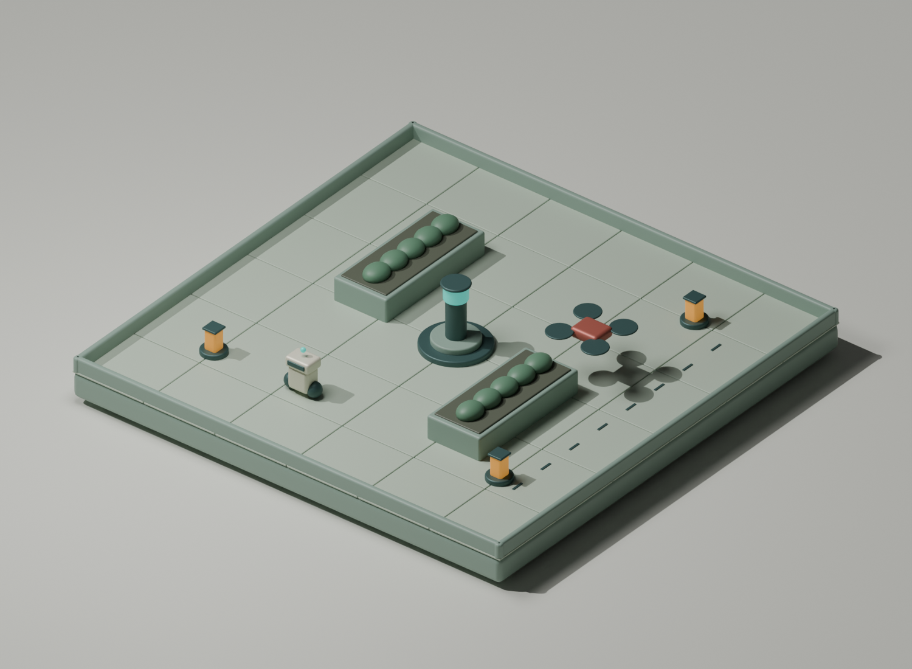

더
잘하는
방법.
막연한 아이디어에서 플레이 가능한 3D 게임까지.
AI와 신중하게 협업하는 방법.
프롬프트. GitHub. 스킬.
만들고, 플레이하고, 관찰하고, 개선하기.

이 책은 GPT-6 Astra와 게임을 만드는 방법을 다룹니다. Signal Garden은 설명에 사용하는 설계 예제입니다. 프롬프트와 마일스톤은 직접 작성한 템플릿이며 게임을 이미 만들거나 벤치마크했다는 주장이 아닙니다.
빠른 요약
핵심과 책을 따라가는 가장 짧은 경로입니다.
- 작게 시작하기: 완료 규칙이 분명한 플레이 가능한 반복 하나를 만듭니다.
- 유용한 지침만 추가하기: 스킬은 도움이 될 수 있지만, 사용 가능하다고 올바른 선택이나 개선을 보장하지는 않습니다.
- 결과 판단하기: 플레이하고 근거를 기록하며 원인을 하나씩 개선합니다.
도구가 처음이라면 환경 설정부터 읽으세요. 준비됐다면 복사해서 쓰는 프롬프트를 여세요. 단계별 프롬프트, 예상 결과, 전체 설명 링크가 있습니다.
간결한 실행 단계
- 게임을 정의합니다. 목표, 조작, 승리/패배 규칙, 제외 범위를 적습니다. 작업 반복 → · 전체 게임 기획서 → · 복사할 프롬프트 →
- 감당할 접근법을 고릅니다. 가장 큰 미지수에 맞춰 절차와 엔진을 선택하고 작은 브라우저 내보내기를 시험합니다. 접근법 비교 → · 기술 구성 선택 → · 복사할 프롬프트 →
- 근거를 확인합니다. 조언을 모델과 설치 버전에 맞춥니다. 다른 모델의 벤치마크는 Astra의 개선을 입증하지 않습니다. 조사 방법 → · 복사할 프롬프트 →
- 프로젝트에 기억을 남깁니다. 기획서, 승인 검사, 명령, 진행 상황을 Git에 저장하고 커밋 전에 변경을 검토합니다. 저장소 설정 → · 복사할 프롬프트 →
- 도구와 스킬을 확인합니다. 관련된 기존 지침을 재사용하고 확인된 부족함에만 스킬을 추가합니다. MCP는 기능을 연결하고 훅은 이벤트에 반응합니다. 스킬 판단 → · 결정과 데이터 흐름 → · 복사할 프롬프트 →
- Astra에 집중된 요청을 줍니다. 정확한 프로젝트 파일이 있으면 간결한 프롬프트를, 빈 폴더라면 초기 구성 프롬프트를 씁니다. 메타 프롬프트는 선택 사항입니다. 실행 프롬프트 → · 프롬프트 설계자 → · 복사할 프롬프트 →
- 플레이 가능한 단계로 만듭니다. 설정 → 이동 → 승리 반복 → 패배/도전 → 시각적 완성도 → 출시 검사. M0–M5 계획 → · 복사할 프롬프트 →
- 실제 플레이로 검증합니다. 조작, 충돌, 일시정지, 승리, 패배, 재시작을 시험하고 사람의 플레이테스트를 관찰합니다. 전체 검증 가이드 → · 복사할 프롬프트 →
- 수정하고 교훈을 추립니다. 프롬프트와 결과를 저장하고 원인을 고친 뒤 검증된 교훈을 남깁니다. 개선을 주장하기 전에 같은 기준선에서 P1/P2를 비교하세요. 개선 방법 → · 복사할 프롬프트 →
- 게시하고 확인합니다. 선택한 호스트와 URL 경로로 빌드해 승인 범위에서 배포하고 공개 URL에서 예상 리비전과 전체 플레이를 확인합니다. GitHub Pages 안내 → · 복사할 프롬프트 →
- 선택: 예고편을 만듭니다. 게임플레이에는 실제 녹화를 쓰고 생성 콘셉트는 표시합니다. 클립을 편집하고 최종 출력을 검토합니다. 영상 작업 절차 → · 복사할 프롬프트 →
Signal Garden과 이 절차들은 설명용 제안이며 측정된 게임 결과가 아닙니다. 출처 요약 → · 검토와 근거의 한계 →
출처 확인 · 이 장의 근거는 무엇인가?
2026년 9월 14일 확인. 아래 링크는 명시된 범위를 뒷받침합니다. 이 책의 제안은 문서에 명시된 동작이나 측정 결과와 구분합니다.
- 종합 및 해석
핵심과 범위
해당 내용: 들어가며
기존 책의 내용을 압축한 요약입니다. 작은 범위와 근거에 따른 반복은 Astra 게임 사례와 지침을 참고한 책의 제안입니다. 스킬 가용성은 선택 정확성이나 측정된 게임 개선을 입증하지 않습니다.
OpenAI · Building games with Astra ↗ [04: 출처 노트]
OpenAI · Rethinking skills and prompts for GPT-6 Astra ↗ [17: 출처 노트]
OpenAI · Build skills ↗ [08: 출처 노트]
OpenAI · Desktop quickstart and Windows setup ↗ [56: 출처 노트]
GitHub CLI · Browser login and Git authentication ↗ [61: 출처 노트]
Vercel · Getting started, Git import and Vite ↗ [63: 출처 노트]
Vercel · Hobby plan ↗ [64: 출처 노트] - 종합 및 해석
전체 장으로 이어지는 짧은 경로
해당 내용: 간결한 실행 단계
각 단계는 상세 규칙, 절차, 근거 한계를 담은 장으로 연결됩니다. 순서, 게임, 선택적 예고편은 설명용 제안입니다. 문서는 인용한 기능과 배포 패턴을 뒷받침하며 이 요약에 새 실험이나 벤치마크 결과는 없습니다.
OpenAI · Building games with Astra ↗ [04: 출처 노트]
OpenAI · Rethinking skills and prompts for GPT-6 Astra ↗ [17: 출처 노트]
GitHub · Using custom workflows with GitHub Pages ↗ [13: 출처 노트]
Remotion · Create videos with coding agents ↗ [25: 출처 노트]
ComfyUI · LTX-2.5 video workflows ↗ [28: 출처 노트]
OpenAI · Evaluation best practices ↗ [52: 출처 노트]
더 나아지는 반복 과정
더 좋은 결과는 불확실성을 작게 나누는 데서 시작합니다.
AI 에이전트에게 멋진 3D 게임을 만들어 달라고 합니다. 풍경, 캐릭터, 메뉴와 수백 줄의 코드가 만들어집니다. 스크린샷은 좋아 보입니다. 하지만 키를 누르자 카메라가 벽을 향하고, 캐릭터는 아이템을 통과하며, 이기는 방법은 어디에도 없습니다. “좋은 게임”이 관찰 가능한 조건으로 정리되지 않았기 때문에 시작은 쉽지만 완성은 어렵습니다.
이 책은 직접 설계한 예제 Signal Garden을 사용합니다. 버려진 옥상 정원에서 작은 정비 로봇을 움직여 에너지 셀 세 개를 모으고, 순찰 드론을 피하며, 시간이 끝나기 전에 비콘에 전력을 공급합니다. 게임은 의도적으로 작지만 이동, 충돌, 피드백, 분위기와 상태 전환을 다루며 하나의 완성된 경험을 만드는 연습에는 충분합니다.
반복할 때마다 질문을 정하세요
“처음 하는 사람이 비콘을 찾을 수 있는가?”는 유용한 질문입니다. 이동 경로, 카메라 각도, 첫 플레이테스트와 변경 평가 방법이 떠오릅니다. “더 전문적으로 만들어 줘”라고 하면 텍스처, 조작, 메뉴, 사운드, 구조 중 무엇을 바꿀지 에이전트가 추측해야 합니다. 현재 문제를 정확히 이름 붙이면 다음 행동을 고르기 쉽습니다.
이 책에서 더 낫다는 것은 다음 변경의 비용을 관리하면서 플레이 경험의 질을 높인다는 뜻입니다. 전자는 이해하기 쉬운 파일, 반복 가능한 검사와 복구 가능한 커밋이 필요하고, 경험의 질은 플레이테스트가 필요합니다. 아름다운 한 장면이나 성공한 빌드만으로는 모두 알 수 없습니다.
모델, 에이전트, 작업 방식
GPT-6 Astra는 선택한 모델입니다. 에이전트는 파일, 터미널, 문서, 경우에 따라 브라우저나 게임 에디터 접근을 제공하는 주변 소프트웨어입니다. 작업 방식은 무엇을 만들고, 어떤 증거를 수집하며, 언제 계속할지에 대한 약속입니다. 프롬프트를 붙여 넣는 것만으로 일반 채팅에 없는 도구를 추가할 수는 없습니다.
OpenAI의 Astra 안내는 자율성, 지침 파일 처리, 작업 위임과 테스트 범위를 명확히 하도록 권합니다. 에이전트 호스트에 표시된 모델 이름을 사용하고 필요한 도구가 실제로 제공되는지 확인하세요. 이 책의 예제는 특정 구독 등급이나 임의로 가정한 모델 능력에 의존하지 않습니다. [01]
다음 유용한 결정을 내리는 데 필요한 의도, 제약과 증거를 담는 가장 짧은 지침을 쓰세요.
이 책을 읽는 방법
엔진을 선택하기 전에 접근 방식 비교를 읽으세요. 저장소를 준비하고 게임 기획서를 작성합니다. 기획이 명확하면 짧은 실행 프롬프트를, 설계 결정이 빠져 있으면 선택적으로 메타 프롬프트를 사용합니다. 프로젝트 지침을 추가하기 전에 기존 스킬을 확인하세요. 유용한 단계마다 실행 가능한 결과와 증거를 남기고, 모델이나 작업이 달라지면 방식을 조정합니다.
2026년 9월 개정판은 현재 Astra 안내와 3월 이후 연구를 대조합니다. 출처 노트에 요약, 날짜와 한계가 있습니다. 오래된 영상은 배경 자료로 표시했습니다.
사고 과정, 의사결정과 개선 흐름도로 전체를 살펴보세요. 영상 제작 안내는 같은 방법을 게임 예고편에 적용하며 노드 워크플로, MCP, 스킬과 훅의 관계를 설명합니다.
프롬프트를 쓰기 전에 해볼 일
플레이어의 목표, 만족스러워야 할 행동, 첫 버전이 완성됐음을 보여 주는 조건을 각각 한 문장으로 쓰세요. 명확하게 쓰기 어렵다면 게임 아이디어부터 다듬으세요.
출처 확인 · 이 장의 근거는 무엇인가?
2026년 9월 14일 확인. 아래 링크는 명시된 범위를 뒷받침합니다. 이 책의 제안은 문서에 명시된 동작이나 측정 결과와 구분합니다.
- 이 책의 제안
예제와 반복 개선 방법
해당 내용: 들어가며 · 반복할 때마다 질문을 정하세요 · 이 책을 읽는 방법 · 프롬프트를 쓰기 전에 해볼 일
고장 난 게임으로 시작하는 장면은 설명용 상황이다. Signal Garden, 네 단계 반복, 연습은 책의 교육 설계다. 출처는 검사 가능한 결과와 집중된 지침의 필요성을 뒷받침하며 이 게임을 검증하지 않는다.
OpenAI · Building games with Astra ↗ [04: 출처 노트]
OpenAI · Rethinking skills and prompts for GPT-6 Astra ↗ [17: 출처 노트] - 문서에 명시된 동작
모델, 에이전트, 작업 합의
해당 내용: 모델, 에이전트, 작업 방식
Astra 지침은 주도성, 지시, 위임, 검증을 다룬다. MCP 아키텍처는 호스트와 제공 도구를 구분한다. 프롬프트만으로 없는 도구 접근 권한을 만들 수 없다.
OpenAI · GPT-6 Astra prompting best practices ↗ [01: 출처 노트]
MCP · Architecture, specification 2026-07-28 ↗ [23: 출처 노트]
게임을 만드는 여섯 가지 방식
현재의 불확실성에 맞는 방식을 고르세요.
모든 개발 단계에 가장 좋은 프롬프트 방식은 없습니다. 빠른 스케치는 방향을 발견하고, 명세는 방향을 유지하며, 테스트는 주장을 확인합니다. 한 활동에 세 역할을 모두 기대하면 혼란이 생깁니다.
아래 비교는 혼자 작은 브라우저 게임을 만드는 상황에 대한 편집자의 평가이며 측정된 모델 순위가 아닙니다. 준비와 검토에 드는 노력은 프로젝트와 실제 사용 가능한 도구에 따라 달라집니다.
| 접근 방식 | 적합한 용도 | 주요 약점 | 개선 방법 |
|---|---|---|---|
| 1. 한 번의 요청으로 프로토타입 | 매력적인 화면이나 유망한 메커니즘을 빠르게 탐색. | 넓은 요청은 미완성 조작과 상태를 가릴 수 있음. | 공간 하나와 플레이 루프 하나로 제한하고 직접 해보기 전에는 스케치로 취급. |
| 2. 명세부터 작성 | 여러 변경에도 명확한 아이디어 유지. | 재미를 입증하기 전에 문서만 늘어날 수 있음. | 한 페이지 기획과 짧은 수용 기준을 쓰고 플레이 가능한 작은 버전으로 확인. |
| 3. 튜토리얼 활용 | 알려진 예제로 낯선 엔진 학습. | 오래된 API, 호환되지 않는 에셋, 무분별한 구조 복사. | 버전을 맞추고 작은 실습을 재현한 뒤 메커니즘 하나를 변형. |
| 4. 점진적인 에이전트 작업 | 여러 세션에 걸쳐 게임 완성. | 부분 개선이 전체 경험에서 벗어날 수 있음. | 실행 가능한 기준 버전, 단계별 증거와 짧은 인계 기록 유지. |
| 5. 시각적 플레이테스트 | 카메라, 가독성, 애니메이션과 피드백 개선. | 좋은 스크린샷이 시간에 따른 동작을 증명하지는 않음. | 이미지에 실제 입력 순서와 상태 관찰을 함께 기록. |
| 6. 전문가 병렬 작업 | 독립 연구, 아트 탐색, 안정된 인터페이스 검토. | 편집 충돌과 통합 비용이 절약한 시간을 소모할 수 있음. | 파일을 분리하거나 읽기 전용 작업을 주고 한 명이 통합과 검사 담당. |
출처가 실제로 보여 주는 것
GitHub Spec Kit은 명세, 계획, 작업과 구현을 구분합니다. 의도를 유지하는 데 유용한 구조지만 작은 게임이 모든 템플릿과 도구를 도입해야 한다는 뜻은 아닙니다. [06]
Anthropic은 장시간 웹 앱을 개발하는 에이전트에 점진적인 작업, 진행 기록, Git 이력과 브라우저 검증이 도움이 됐다고 보고합니다. 여러 에이전트가 항상 하나보다 낫다거나 모든 게임에 그대로 적용된다는 결과는 아닙니다. [05]
2026년 3월 후속 글은 모델 발전에 맞춰 주변 작업 구조를 다시 검토합니다. 정교한 계획 구조는 전제 조건보다 가치를 확인할 실험으로 보세요. 이 책의 단계는 관찰 가능한 결과를 나타내며, 단계마다 별도 에이전트나 엄격한 계획 절차를 요구하지 않습니다. [21]
OpenAI의 Astra 게임 사례는 플레이 경험 기획, 시각 자료, 확인 가능한 상태, 재현 가능한 장면과 실제 조작 테스트를 결합합니다. 여섯 방식을 통제 실험으로 비교한 자료가 아니라 구현 사례입니다. [04]
권장하는 조합
Signal Garden은 작은 명세로 시작하고 엔진 지식이 부족한 부분만 튜토리얼로 보완한 뒤, 에이전트 하나로 첫 완전한 플레이 루프를 만듭니다. 이동이 되면 바로 화면을 검토하세요. 게임의 공통 가정을 바꾸지 않고 통합할 수 있는 일이 생길 때 병렬 작업을 추가합니다.
유용한 위임: “충돌 모듈을 편집하지 말고 검토해서 재현 가능한 오류를 보고해 줘.” 좋지 않은 분담: “한 명은 이동, 한 명은 카메라 재작성, 다른 한 명은 좌표계 재설계.” 파일 이름이 달라도 서로 의존하는 작업입니다.
재미있는지 모르겠다면 프로토타입을 만드세요. 의도는 분명한데 에이전트가 벗어난다면 명세를 개선하세요. 작동하는지 모르겠다면 증거를 개선하세요.
첫 실험 선택하기
게임에서 가장 큰 미지수를 적고 비교표의 한 방식을 선택하세요. 다음 결정을 돕는 결과물이 실행 가능한 빌드인지, 조작 테스트인지, 참고 이미지인지, 한 페이지 결정 기록인지 정하세요.
출처 확인 · 이 장의 근거는 무엇인가?
2026년 9월 14일 확인. 아래 링크는 명시된 범위를 뒷받침합니다. 이 책의 제안은 문서에 명시된 동작이나 측정 결과와 구분합니다.
- 종합 및 해석
접근법 비교와 경로 선택
해당 내용: 들어가며 · 권장하는 조합 · 첫 실험 선택하기
여섯 방식의 비교, 통합 조언, 권장 조합은 이 작은 게임에 대한 편집 판단이다. 프롬프트 방식이나 단일/다중 에이전트의 순위를 측정한 결과가 아니다.
OpenAI · Building games with Astra ↗ [04: 출처 노트]
GitHub · Spec Kit ↗ [06: 출처 노트]
Anthropic · Harness design for long-running application development ↗ [21: 출처 노트] - 연구 결과
구현 사례로 알 수 있는 범위
해당 내용: 출처가 실제로 보여 주는 것
Spec Kit은 작업 절차를 문서화한다. Astra 게임 글과 Anthropic 글은 구현을 설명한다. 3월 후속 글은 새 모델에 맞춰 절차를 단순화하지만 어느 출처도 여섯 방식을 통제 비교하지 않는다.
OpenAI · Building games with Astra ↗ [04: 출처 노트]
Anthropic · Effective harnesses for long-running agents ↗ [05: 출처 노트]
GitHub · Spec Kit ↗ [06: 출처 노트]
Anthropic · Harness design for long-running application development ↗ [21: 출처 노트]
근거에서 배우기
대본은 결정을 바꿀 때 유용해집니다.
“최고의 AI 게임 프롬프트”를 검색하면 시연, 도구 홍보, 추측과 실제 엔지니어링 조언이 함께 나옵니다. 출처마다 읽는 목적을 정하세요. 엔진 문서는 API 동작을 확인하고, 제작자의 시연은 작업 과정을 배우며, 자신의 빌드는 그 과정이 현재 제약에서도 통하는지 확인하는 데 씁니다.
현재의 근거부터 확인하세요
이번 판은 2026년 3월 1일부터 9월 14일 사이에 발행되거나 갱신된 자료를 우선합니다. 9월 OpenAI 글 두 편은 Astra를 직접 다룹니다. 새로운 스킬 연구는 다른 모델을 시험하므로 Astra 성능 주장보다 가설에 활용합니다. 발행일이 없는 현재 공식 문서도 유지합니다. 오늘 확인한 페이지가 오늘 작성된 글은 아닙니다.
스킬 문제는 Astra 지침 점검 글부터 읽고, SWE-Skills-Bench와 SkillsBench의 7월 갱신을 비교하세요. 선택 문제는 SkillsInjector, 근거 기반 생성은 SkillAlchemy를 참고하세요. 각 노트에 핵심 요약과 시험한 모델의 한계가 있습니다.
| 기존 생각 | 2026년 9월 평가 | 책에서 바뀐 점 |
|---|---|---|
| 긴 작업을 복구 가능한 조각으로 나누기. | 여전히 유용하지만 모델 발전에 따라 외부 구조의 양을 재평가해야 함. [21] | 결과 중심의 단계를 쓰고 의존성에 따라 순서 조정. |
| 더 많은 맥락 제공하기. | 관련 맥락은 중요하지만 매 수정마다 모든 문서를 읽게 하는 것은 Astra에 과도함. [17] | 목적에 맞는 문서를 가리키고 기획서 전체를 반복하지 않음. |
| 프로젝트 개선을 위해 스킬 만들기. | 조건부. 기존 스킬로 충분할 수 있고 품질·작업·모델에 따라 결과가 다름. [18] [22] | 맞춤 스킬은 선택 사항이며 현재 환경과 비교. |
| 생성된 결과 검증하기. | 현재 Astra 게임 사례에서도 뒷받침됨. [04] | 행동·시각 증거를 유지하고 일률적 반복 대신 필요한 검사 수행. |
| 코딩 전에 자세한 프롬프트 생성하기. | 검토한 실험 중 메타 프롬프트가 Astra에서 항상 직접 요청보다 낫다는 증거는 없음. | 불확실성을 해소할 때 사용하고 기획이 있으면 짧은 프롬프트 제공. |
| 튜토리얼의 내보내기 지침 따르기. | 모델이 좋아져도 버전과 호스팅 제약은 남아 있음. [11] [12] | 현재 엔진 문서와 실제 배포 경로에서 확인. |
오래된 영상도 남겨 두는 이유
2025년 영상은 예외적으로 유지한 과거 자료입니다. Software Is Changing (Again)의 검증 관련 구절은 다시 확인했지만, 다른 대본은 이번 검토에서 가져오지 못했습니다. 둘 다 현재 제품 문서나 Astra 벤치마크가 아닙니다. 최근 영상 검색에서도 이 노트를 대체할 적절한 검증 대본을 찾지 못했습니다.
대본 노트: Software Is Changing (Again)
Y Combinator 기조연설에서 Andrej Karpathy는 AI 생성과 인간 검증의 반복을 설명합니다. 구체적인 요청과 점검 가능한 중간 결과가 검토를 돕지만, 거대한 코드 diff는 여전히 많은 확인 작업을 남깁니다. 게임 제작에 대한 측정 결과가 아닌 개념적 관찰입니다. [02]
적용: 실행 가능한 게임 단계 하나와 짧은 행동 검사 목록을 요청하세요. 빌드 링크, 관련 변경과 증거를 함께 둡니다. 검토자는 전체 대화를 재구성하지 않고 “체력이 다 떨어지면 항상 재시작 화면이 나오는가?”에 답할 수 있어야 합니다.
대본 노트: How I use LLMs
접근 한계: 이전 판은 공개 대본 미러를 참고했습니다. 이번에는 해당 페이지가 시간 초과됐고 대체 페이지도 영상 안내만 보여 주며 대본을 제공하지 않았습니다. 따라서 이전 구절 요약을 검증된 근거에서 철회했습니다. 원본 영상은 과거 자료를 찾아볼 때의 참고 링크로만 남깁니다. [03]
적용: 실제 오류, 설치된 엔진 버전, 현재 장면 구조와 관련 문서 구절을 디버깅 요청에 제공하세요. “플레이어가 망가졌어”는 정보가 거의 없습니다. “Godot X 버전의 이 최소 장면에서 CharacterBody3D가 바닥을 통과한다”는 조사할 수 있는 문제입니다.
작업에 맞는 최신 증거를 제공하라는 권고는 현재 Astra의 맥락 안내가 별도로 뒷받침합니다. 접근하지 못한 대본에 의존하지 않습니다. [17]
출처 02는 원본 연설의 공개 대본 미러를 사용하며 자동 자막에는 오류가 있을 수 있습니다. 안정적인 타임코드가 없어 검색어를 제공합니다. 출처 03은 대본 근거에 접근하지 못한 과거 영상 링크입니다. 열리는 페이지나 영상 제목만으로 발언 내용이 검증되지는 않습니다.
게임 튜토리얼은 다른 종류의 근거입니다
GDQuest의 Godot 4 글 강좌와 Godot의 첫 3D 게임 튜토리얼은 게임 구조를 익히는 순서를 제공합니다. 엔진에 익숙해지는 용도로 사용하세요. GDQuest 영상 대본은 안정적으로 가져오지 못해 접근 가능한 글 강좌만 사용했습니다. [09] [10]
튜토리얼 전체를 새 설계에 그대로 옮기지 마세요. 카메라 기준 이동처럼 개념 하나를 골라 설치한 버전에서 최소 예제를 만든 뒤, 무엇을 바꿔 자신의 게임에 적용할지 설명하세요. 실습 성공은 한 부분을 이해했다는 근거이지 전체 게임 검증은 아닙니다.
반복 가능한 조사 절차
- 질문부터 정하기. 예: “이 Godot 내보내기는 맞춤 응답 헤더 없이 GitHub Pages에서 실행되는가?”
- 1차 답변 찾기. 설치 버전의 공식 문서를 열고 제약을 읽습니다.
- 적용 사례 찾기. 대본과 관련 저장소를 볼 수 있는 제작자 영상을 우선합니다.
- 출처 기록하기. URL, 제목, 확인 날짜, 버전과 구절 위치를 남기며 없는 자막이나 저장소를 명시합니다.
- 관찰과 추론 나누기. “이 노드를 사용한다”는 관찰, “우리 카메라가 단순해질 것이다”는 가설입니다.
- 작은 실험 하나 실행하기. 결과와 그 결과를 만든 커밋을 보관합니다.
질문: 화단 뒤에서도 비콘이 보이는가?
출처: [공식 API 링크 또는 원본 튜토리얼]
버전 / 날짜: [설치 버전] / [검토일]
관찰한 아이디어: [짧은 설명]
가설: [이 게임에 도움이 될 방식]
실험: [작고 재현 가능한 변경]
결과: [측정 결과 또는 미실행]
커밋: [실제 리비전]같은 영상을 설명한 두 글은 근본적으로 하나의 출처입니다. 편집된 성공 시연은 실패한 시도, 총 노력이나 숨은 수작업을 보여 주지 않습니다. 유용한 방법을 가져오되 결과는 직접 시험하세요.
출처 확인 · 이 장의 근거는 무엇인가?
2026년 9월 14일 확인. 아래 링크는 명시된 범위를 뒷받침합니다. 이 책의 제안은 문서에 명시된 동작이나 측정 결과와 구분합니다.
- 종합 및 해석
현재 근거와 과거 자료
해당 내용: 들어가며 · 현재의 근거부터 확인하세요 · 오래된 영상도 남겨 두는 이유
날짜와 평가 모델이 관련성을 결정한다. 최신 비Astra 결과는 실험할 이유이며 Astra 게임 품질을 주장할 근거가 아니다. 현재 참고 문서와 날짜가 있는 출판물을 구분한다.
OpenAI · Rethinking skills and prompts for GPT-6 Astra ↗ [17: 출처 노트]
SkillsBench · Agent leaderboard, v1.1 ↗ [18: 출처 노트]
SkillsInjector · Dynamic Skill Context Construction for LLM Agents ↗ [19: 출처 노트]
SkillAlchemy · Open-World Agent Skill Creation ↗ [20: 출처 노트]
Anthropic · Harness design for long-running application development ↗ [21: 출처 노트]
SWE-Skills-Bench · Do Agent Skills Actually Help in Real-World Software Engineering? ↗ [22: 출처 노트] - 연구 결과
확인한 기조연설 구간
해당 내용: 대본 노트: Software Is Changing (Again)
미러 자막의 선택 구간은 검증 부담과 검사 가능한 출력을 설명한다. 실행 가능한 마일스톤으로 적용하는 것은 책의 해석이며 현재 게임 사례는 Astra 글에서 보완한다.
Andrej Karpathy · Software Is Changing (Again) ↗ [02: 출처 노트]
OpenAI · Building games with Astra ↗ [04: 출처 노트] - 자료 접근 한계
확보하지 못한 두 번째 자막
해당 내용: 대본 노트: How I use LLMs
이전 자막 구간을 재확인하지 못해 근거에서 철회했다. 현재 맥락 조언은 출처 17이 독립적으로 뒷받침한다. 타임코드나 영상에만 있는 주장을 만들지 않는다.
Andrej Karpathy · How I use LLMs ↗ [03: 출처 노트]
OpenAI · Rethinking skills and prompts for GPT-6 Astra ↗ [17: 출처 노트] - 종합 및 해석
Godot 학습과 근거 기록
해당 내용: 게임 튜토리얼은 다른 종류의 근거입니다 · 반복 가능한 조사 절차
글 튜토리얼은 학습 순서를, 현재 내보내기 문서는 배포 제약을 뒷받침한다. 조사표와 실험 절차는 자기 프로젝트에 적용되는지 확인하기 위한 책의 도구다.
Godot · Your first 3D game ↗ [09: 출처 노트]
GDQuest · Your first 3D game with Godot 4 ↗ [10: 출처 노트]
Godot · Exporting for the Web ↗ [11: 출처 노트]
적합한 작업 환경 고르기
에이전트가 만들 수 있고 내가 평가할 수 있는 기술을 선택하세요.
배포 플랫폼은 엔진 선택에 일찍 반영해야 합니다. GitHub Pages에서 제공할 작은 게임은 브라우저 중심 기술이 코드 변경에서 플레이 링크까지 직접 연결됩니다. 기존 Godot나 Unity 프로젝트라면 유행을 따라 바꾸기보다 현재 엔진을 유지하는 편이 유용할 수 있습니다.
| 기술 구성 | 제공되는 것 | 여전히 맡아야 할 일 | 선택할 상황 |
|---|---|---|---|
| TypeScript + Vite + Three.js | 코드 중심 3D 렌더링과 간단한 정적 사이트 배포. [12] [14] | 게임 구조, 이동, 충돌, 입력, UI와 에셋 관리. | 작은 웹 게임이며 에이전트가 코드를 편집하고 실행할 수 있을 때. |
| Babylon.js | 물리 통합과 검사 도구를 포함한 폭넓은 브라우저 3D 엔진. [15] | 게임 설계, 통합 선택, 호환성 검사와 성능 조정. | JavaScript 환경에서 더 많은 엔진 기능이 필요할 때. |
| Godot + GDScript | 장면, 노드, 시각적 에디터와 입문 학습 과정. [09] | 에디터 접근 또는 명확한 장면 파일 규칙, 검증된 웹 내보내기 설정. | 엔진 작업을 선호하거나 네이티브 출시도 계획할 때. |
| Unity | 지원되는 웹 브라우저를 대상으로 할 수 있는 에디터 중심 프로젝트. [16] | 설치된 에디터와 모듈, 에셋 가져오기, 웹 빌드 테스트. | Unity를 알고 있거나 기존 프로젝트와 에셋이 필요할 때. |
실용적인 선택 기준이며 벤치마크나 모든 기능의 비교는 아닙니다. 확정하기 전에 적은 비용으로 가장 위험한 부분을 시험하세요. 에이전트가 에디터를 안정적으로 확인하지 못한다면 작은 장면과 내보내기부터 시험해 제약을 발견합니다.
기본 선택: Three.js, TypeScript, Vite
Signal Garden에는 약간 높은 고정 카메라, 평평한 공간, 단순한 기하 장애물과 소수의 움직이는 물체가 있습니다. 이 범위는 브라우저 코드 예제로 적합합니다. 단순한 충돌 형태와 읽기 쉬운 상태 머신으로 시작하세요. 경사, 강체 상호작용이나 복잡한 캐릭터 이동이 필요해지면 임의 구현보다 적합한 물리 솔루션을 먼저 평가하세요.
시작 시점에 호환되는 안정 버전을 선택하고 lockfile을 커밋하며 README에 버전을 기록하세요. npm ci는 일치하는 커밋된 lockfile에서 깨끗하게 설치합니다. package와 lockfile이 어긋나면 자동 갱신 대신 실패합니다. 오래된 튜토리얼 버전을 그대로 복사하지 말고, 선택한 렌더러가 목표 브라우저에서 동작하는지 보여 주세요. [42]
Godot를 선택한다면
간단한 Pages 출시는 GDScript, Compatibility 렌더링과 단일 스레드 웹 내보내기로 먼저 시험하세요. Godot 문서는 웹 내보내기에 WebGL 2를 사용하고, Godot 4 C# 프로젝트는 현재 웹 내보내기가 불가능하며, 스레드 사용에는 교차 출처 격리가 필요하다고 설명합니다. 버전에 민감한 제약입니다. [11]
전체 게임을 만들기 전에 빈 장면의 내보내기가 최종 URL에서 열리는지 확인하세요. 생성 파일은 함께 둡니다. HTML 진입 파일은 index.html로 정할 수 있지만 나머지 생성 파일 이름은 유지해야 합니다. Godot는 PWA 서비스 워커를 이용한 격리 우회 방법도 문서화합니다. 단일 스레드는 간단한 출발점이지 모든 스레드 기반 Pages 배포가 불가능하다는 주장이 아닙니다. [11]
내보내기 이름: 내보내기 대화상자에서 index.html을 지정하세요. 생성 뒤 HTML이나 관련 파일의 이름을 바꾸지 마세요. 참조가 최초 내보내기 이름에 의존합니다. [11]
30분 가능성 점검
시간을 정하고 바닥, 물체 하나와 카메라를 만듭니다. 물체를 움직이고 빌드한 뒤 저장소 하위 경로에서 실행하세요. 실패한 부분을 기록합니다. 30분은 조사 시간 제안이며 완성 보장이 아닙니다.
출처 확인 · 이 장의 근거는 무엇인가?
2026년 9월 14일 확인. 아래 링크는 명시된 범위를 뒷받침합니다. 이 책의 제안은 문서에 명시된 동작이나 측정 결과와 구분합니다.
- 종합 및 해석
기술 구성의 기능과 교육용 선택
해당 내용: 들어가며 · 기본 선택: Three.js, TypeScript, Vite
공식 자료는 렌더링, 엔진, 호스팅, 잠금 파일의 동작을 설명한다. Signal Garden에 브라우저 코드와 단순 충돌을 택한 것은 범위 결정이며 성능 벤치마크가 아니다.
OpenAI · Building games with Astra ↗ [04: 출처 노트]
Vite · Deploying a Static Site ↗ [12: 출처 노트]
Three.js · README ↗ [14: 출처 노트]
Babylon.js · Specifications ↗ [15: 출처 노트]
Unity · Web browser compatibility ↗ [16: 출처 노트]
npm · npm ci ↗ [42: 출처 노트] - 문서에 명시된 동작
Godot 내보내기 제약
해당 내용: Godot를 선택한다면
WebGL 2 Compatibility 렌더링, Godot 4 C# 제한, 스레드/격리, PWA 우회 방법, HTML 진입 파일명 예외를 확인했다. 설치 버전과 실제 호스트에서 시험한다.
- 이 책의 제안
실현 가능성 연습
해당 내용: 30분 가능성 점검
작은 내보내기로 문서의 배포 제약을 자기 환경에서 확인한다. 30분은 제안한 조사 예산이며 근거 있는 완료 시간 추정이 아니다.
Godot · Exporting for the Web ↗ [11: 출처 노트]
Vite · Deploying a Static Site ↗ [12: 출처 노트]
작업에 기억을 남기기
저장소는 어제의 작업을 내일로 넘기는 연결점입니다.
Git은 로컬 이력을 기록하고 GitHub는 원격 복사본, 검토 대화, 이슈와 자동화를 관리합니다. GitHub Pages는 출판된 게임이나 책을 제공합니다. 로컬 커밋은 푸시가 아니고, 푸시는 성공한 배포가 아니며, 배포는 플레이 가능성의 증명이 아닙니다. 역할을 구분하면 오류를 찾기 쉽습니다.
1단계: 깨끗한 출발점 만들기
새 빈 게임 폴더에서는 main으로 Git을 초기화합니다. 기존 저장소라면 상태를 확인하고 현재 작업을 보존하세요. Git과 GitHub CLI를 설치하고 CLI에 로그인한 뒤 원격 저장소를 만듭니다. 아래는 새로운 Signal Garden 프로젝트 예제입니다. 계정 이름부터 바꾸세요. [39] [40]
git init -b main
git status --short
# README, .gitignore, 게임 기획서와 프로젝트 파일을 만듭니다.
# 제외 규칙과 생성 파일을 확인한 후 스테이징합니다.
git status --short
git add --all
git diff --cached --stat
git diff --cached
git commit -m "chore: establish the Signal Garden baseline"
gh repo create YOUR_ACCOUNT/signal-garden --public --source=. --remote=origin
git push -u origin main새 프로젝트에서는 index.html, 설정과 필요한 에셋을 포함한 전체 뼈대를 스테이징하세요. 두 diff 명령은 파일 요약과 실제 스테이징 내용을 보여 줍니다. 의존성, 로컬 환경 파일, 빌드 출력의 제외 규칙을 먼저 정합니다. 기존 저장소에서는 의도한 경로만 선택해 관계없는 작업을 분리하세요. 공개 저장소와 Pages에 비밀 인증정보나 허가 없는 에셋을 올리지 마세요. [39]
2단계: 중요한 결정을 파일에 남기기
signal-garden/
AGENTS.md # 선택적인 짧은 프로젝트 규칙
.agents/skills/signal-garden-round-review/
SKILL.md # 추가 가치가 확인될 때만 도입
docs/
game-brief.md # 플레이 경험과 제약
acceptance.md # 관찰 가능한 완료 조건
decisions.md # 선택과 이유
progress.md # 현재 상태와 다음 단계
playtests/ # 사람의 관찰과 증거 링크
src/
game/ # 상태, 입력, 시뮬레이션
render/ # 장면, 카메라, 시각 피드백
ui/ # 설명, HUD, 결과 화면
public/assets/
credits.md # 에셋 출처와 라이선스
tests/ # 필요한 행동 검사
.github/workflows/pages.yml
package.json
package-lock.json시작을 위한 제안이지 빈 추상화를 모두 만들라는 요구가 아닙니다. 작은 버전은 모듈이 더 적어도 됩니다. 책임이 분명해질 때, 특히 렌더링과 섞여 시뮬레이션을 검사하기 어려울 때 시스템을 분리하세요.
3단계: 의미 있는 변경마다 기준점 남기기
update보다 feat: collect cells and power the beacon처럼 어떤 동작이 되는지 말하는 커밋이 유용합니다. 불확실한 시도 전에는 작동하는 기준 버전을 남기세요. 아래 예제는 고정 카메라를 유지하며 가독성을 개선합니다. switch 문서에서 브랜치 생성 동작을 확인할 수 있습니다. 실제 프로젝트에 맞는 파일 경로를 쓰고 플레이테스트 기록을 먼저 만드세요. [39]
git switch -c experiment/camera-readability
# 고정 카메라 구도를 조정한 후 가려지는 경로를 플레이테스트합니다.
git diff
git add src/render/camera.ts docs/playtests/camera-readability.md
git diff --cached
git commit -m "fix: keep the robot visible behind the north planter"
git push -u origin experiment/camera-readability
# 문제, 변경, 검사 내용을 docs/pr-camera.md에 먼저 씁니다.
gh pr create --base main --head experiment/camera-readability --title "Improve fixed camera readability" --body-file docs/pr-camera.md--body-file은 이미 있는 파일을 읽으며 설명을 대신 작성하지 않습니다. PR에는 플레이어가 겪는 문제, 변경과 확인 내용을 적습니다. 개인 실험은 브랜치와 검토된 커밋으로 충분할 수 있습니다. 리뷰나 CI 기준이 도움이 될 때 PR을 사용하세요. [41]
4단계: 짧은 이어가기 기록 남기기
세션이 끝나면 progress.md에 현재 커밋, 동작하는 기능, 알려진 오류, 실행 명령과 다음 목표 하나를 적습니다. Anthropic의 장시간 에이전트 보고서는 진행 자료와 Git 이력으로 새 세션의 재구성 부담을 줄입니다. [05]
이미 공유한 잘못된 변경은 git revert로 되돌리는 새 커밋을 만들어 이력을 보존할 수 있습니다. 커밋 사이의 의존성과 충돌을 검토한 뒤 완료하세요. 커밋 전 실험은 정확한 diff를 보고 의도한 변경만 복원해야 합니다. 다른 작업이 함께 있을 수 있습니다. [39]
출처 확인 · 이 장의 근거는 무엇인가?
2026년 9월 14일 확인. 아래 링크는 명시된 범위를 뒷받침합니다. 이 책의 제안은 문서에 명시된 동작이나 측정 결과와 구분합니다.
- 문서에 명시된 동작
Git, 원격 저장소, Pages 설정
해당 내용: 들어가며 · 1단계: 깨끗한 출발점 만들기
Git 문서는 초기화, 전체 스테이징, 스테이징 내용 검토를 뒷받침한다. GitHub CLI는 원격 생성을 설명한다. Pages는 별도의 정적 게시 단계다. 예제 명령에는 실제 프로젝트 파일과 인증된 도구가 필요하다.
Git · Staging, differences, branches, and reverting ↗ [39: 출처 노트]
GitHub CLI · gh repo create ↗ [40: 출처 노트]
GitHub · What is GitHub Pages? ↗ [46: 출처 노트] - 종합 및 해석
저장소 구성과 인계
해당 내용: 2단계: 중요한 결정을 파일에 남기기 · 4단계: 짧은 이어가기 기록 남기기
범위별 지침과 스킬 탐색 위치는 문서에 근거하며 나머지 디렉터리 구성은 제안이다. 진행 기록은 장기 실행 에이전트 사례에서 참고했다. Revert는 취소를 기록하지만 충돌과 종속 변경은 검토해야 한다.
Anthropic · Effective harnesses for long-running agents ↗ [05: 출처 노트]
OpenAI · Custom instructions with AGENTS.md ↗ [07: 출처 노트]
OpenAI · Build skills ↗ [08: 출처 노트]
Git · Staging, differences, branches, and reverting ↗ [39: 출처 노트] - 종합 및 해석
고정 카메라 실험과 PR
해당 내용: 3단계: 의미 있는 변경마다 기준점 남기기
브랜치와 PR 옵션은 문서에 있다. 경로와 카메라 변경은 예시이며 실제 파일과 맞아야 한다. gh pr create가 읽기 전에 설명 파일을 작성해야 한다.
Git · Staging, differences, branches, and reverting ↗ [39: 출처 노트]
GitHub CLI · gh pr create ↗ [41: 출처 노트]
스킬이 가치를 더하는지 판단하기
에이전트가 이미 가진 것부터 확인하고, 부족한 것을 더하세요.
프로젝트 스킬이 불필요할 수 있다는 주장은 부분적으로 뒷받침됩니다. 일반적인 코딩 조언을 반복하는 스킬은 도움이 적을 수 있지만, 전문적인 절차는 모델에 없는 지식을 제공할 수 있습니다. 자동 선택은 활용하고 평가할 기능이지, 언제나 올바른 선택이나 더 좋은 게임을 보장하는 증거는 아닙니다.
도구·스킬·훅 선택 흐름도를 참고하세요. 영상 장에서는 문서 MCP 대신 스킬을 권하는 Remotion과 미디어 작업을 실행하는 MCP 도구를 제공하는 Comfy를 비교합니다. [27] [37]
OpenAI는 Astra에 쌓여 있는 지침을 다시 평가하도록 권합니다. 지나치게 세부적인 절차와 중복 스킬 설명은 작업을 방해할 수 있습니다. 따라서 맞춤 스킬은 구체적인 존재 이유가 있을 때 선택적으로 추가합니다. 측정된 Astra 스킬 벤치마크가 아닌 안내입니다. [17]
“스킬 추가”라고 부르는 서로 다른 네 가지
- 사용 가능하게 만들기. 에이전트 호스트에 설치하거나 노출합니다. 인터넷 어딘가의 파일이 자동으로 사용 가능해지지는 않습니다.
- 에이전트가 선택하게 하기. Codex는 작업과 사용 가능한 스킬 설명을 암시적으로 매칭하며 명시적 선택도 지원합니다. [08]
- 새 스킬 작성하기. 반복해서 쓸 누락된 절차, 자료나 스크립트를 묶습니다. 기존 스킬 호출과는 다른 결정입니다.
- 저장소 지침 작성하기. AGENTS.md는 범위별 규칙을 제공하며 필요할 때 호출하는 스킬 선택기가 아닙니다. [07]
주장을 하나씩 확인하기
암시적 선택은 호스트 설정에도 영향을 받습니다. Codex의 allow_implicit_invocation: false는 해당 스킬의 자동 호출을 끕니다. 초기 목록이 많으면 맥락 예산 때문에 설명이 줄거나 항목이 빠질 수 있습니다. 결과를 스킬 품질 탓으로 돌리기 전에 가용성, 호출 자격과 실제 사용 여부를 확인하세요. [08]
| 주장 | 근거에 따른 판단 | Signal Garden의 선택 |
|---|---|---|
| 모든 프로젝트에 맞춤 스킬이 필요하다. | 입증되지 않음. 시험한 소프트웨어 스킬 중 다수가 이득을 주지 않음. [22] | 기획, 작동하는 도구와 기존 스킬로 시작. |
| 에이전트가 올바른 스킬을 스스로 부른다. | 암시적 선택은 문서화됐지만 모든 작업에서의 정확성은 보장되지 않음. [08] | 실패 시 관련 스킬의 가용성과 실제 사용 확인. |
| 자동 호출이 명시적 언급보다 항상 낫다. | 검토한 자료에 직접적인 Astra 비교가 없음. | 적합한 기존 스킬을 놓쳤다면 명시적으로 선택해 결과 비교. |
| Astra는 모든 스킬을 쓸모없게 만든다. | 뒷받침되지 않음. 현재 Astra 안내에도 전문 절차의 용도가 있음. [17] | 유지비에 걸맞은 고유 지식이나 유용한 스크립트 유지. |
| 스킬이 많을수록 능력이 커진다. | 선택과 맥락 상호작용이 중요하며 증가가 항상 개선은 아님. [19] | 중복되거나 너무 넓은 선택 항목을 줄이고 다시 평가. |
| AI가 만든 스킬은 전혀 도움이 안 된다. | 지나친 일반화. SkillAlchemy는 다른 모델에서 근거 기반 생성의 이득을 보고. [20] | 도입 전에 절차를 검증하고 Astra 개선을 가정하지 않음. |
연구가 서로 다른 결론처럼 보이는 이유
SWE-Skills-Bench는 Haiku 4.5에서 공개 소프트웨어 스킬의 평균 이득이 작다고 보고했습니다. SkillsBench는 더 다양한 작업과 선별한 스킬에서 큰 이득을 보고합니다. 개입, 작업과 에이전트 설정이 달라 두 결과는 함께 성립할 수 있습니다. 이 게임 검토 스킬이 Astra를 돕는지는 어느 쪽도 답하지 않습니다. [22] [18]
권고: 튜토리얼에 있다는 이유만으로 스킬을 만들지 마세요. 우선 현재 정보로 범위가 정해진 일을 Astra에 맡깁니다. 기존 절차를 놓치면 선택 과정을, 반복되는 프로젝트 지식이 없으면 내용을 보완합니다. 프롬프트 수정, 문서 갱신이나 작은 스크립트로 충분할 수 있습니다.
예제 게임을 위한 짧은 AGENTS.md
작업 프롬프트는 당장의 결과를, 게임 기획서는 규칙을 정합니다. AGENTS.md는 반복되는 결정을 관련 문서와 명령에 연결할 수 있습니다. 사실을 한 곳에 유지하면 나중에 바꾸기 쉽습니다.
# Signal Garden — 프로젝트 지침
docs/game-brief.md는 메커니즘과 범위, docs/acceptance.md는 관찰 가능한 행동, docs/progress.md는 현재 단계와 알려진 문제의 기준입니다. 작업에 관련된 문서를 읽고 기존 사용자 작업을 보존하세요.
커밋된 lockfile과 TypeScript, Vite, Three.js를 사용하세요. Y는 위, 이동은 X/Z, 속도는 초당 월드 단위입니다. 당장 필요 없는 추상화보다 작고 명확한 모듈을 우선합니다.
구성 후 명령: npm run dev, npm run build, npm test. package.json과 README에서 정확하게 유지하세요.
행동을 관찰하기 쉬워진다면 시뮬레이션 상태와 장면 객체를 분리합니다. 조정 가능한 게임 상수는 이름 있는 설정 모듈 하나에 둡니다.
문서의 검사와 사용 가능한 도구로 변경된 행동을 검증하세요. 실행하지 않은 검사를 밝히고 실패를 감추려고 수용 기준을 낮추지 마세요.
직접 만든 에셋이나 적절한 라이선스를 사용하고 public/assets/credits.md에 출처를 적습니다. 인증정보와 로컬 환경 파일은 커밋하지 마세요.
단계를 완료하면 docs/progress.md에 리비전, 증거, 문제와 다음 작업을 적습니다. 커밋·푸시·공개는 사용자가 이미 부여한 권한을 따르며 저장소 지침은 새로운 외부 권한을 부여하지 않습니다.명령과 경로가 실제로 생긴 뒤 예제를 적용하세요. 매 수정마다 모든 파일을 읽게 하지 않고 목적에 맞는 문서를 가리킵니다. 오타 수정과 라운드 상태 변경에는 다른 맥락이 필요합니다.
프로젝트 지식을 담는 선택적 스킬
아래 예제는 Signal Garden 특유의 경계 조건을 제공합니다. 반복해서 놓치는 정보가 있거나 묶인 절차가 검토를 더 안정적으로 만들 때만 유용합니다. 수용 기준 문서와 기존 검토 스킬이 이미 충분하면 설치하지 않아도 됩니다.
---
name: signal-garden-round-review
description: 비콘 활성화, 피해, 시간, 정지 또는 재시작 변경 후 Signal Garden 라운드 상태 회귀를 확인합니다.
---
# Signal Garden 라운드 검토
선택적 예제입니다. 참조 게임 문서가 있고 기존 검토 도구보다 추가 가치가 있을 때만 설치하세요. 범용 게임 개발 스킬이 아닙니다.
현재 규칙과 검사 명령의 기준은 docs/acceptance.md입니다. 아래는 책의 초기 설계이므로 게임 설계가 바뀌면 갱신하세요.
관련 경계 조건:
- 같은 시뮬레이션 단계에서 비콘 활성화와 시간 초과 또는 체력 0이 겹치면 패배가 우선합니다.
- 셀 세 개를 모두 모으고 2단위 이내에서 새 E 입력이 있어야 활성화합니다.
- 드론 접촉은 체력 1을 감소시키고 피해 쿨다운은 1초입니다.
- 정지는 라운드 시간과 시뮬레이션을 멈춥니다. 포커스를 잃으면 입력을 지우고 진행 라운드를 정지하며 복귀 후 명시적으로 재개해야 합니다.
- paused, won, lost에서 재시작하면 셀, 체력, 시간, 로봇 위치, 드론 진행, 쿨다운, 효과와 누른 입력을 초기화하고 playing으로 새 라운드를 시작합니다.
변경에 영향을 받는 경우를 선택하세요. 시간 경계는 결정적 검사로, 관련 플레이 여정은 도구가 있으면 실제 조작으로 확인합니다. 장면 준비 도우미는 조작이 작동한다는 증거가 아닙니다.
출력: 리비전, 관련 경우, 재현 단계, 기대/관찰 결과와 증거. 불가능한 검사는 미실행으로 표시합니다. 범위 내 실패를 고치고 영향받은 부분을 다시 확인한 뒤 통과하면 끝냅니다. 단계를 완료했다면 docs/progress.md를 갱신하세요.시험하려면 게임 저장소의 .agents/skills/signal-garden-round-review/SKILL.md로 저장하고 호스트 목록에 나타나는지 확인하세요. 참조하는 수용 기준도 최신으로 유지합니다. 스킬은 지침이며 브라우저 접근권이 아니므로 실제 도구도 있어야 합니다.
내 Astra 환경에서 해볼 작은 실험
이 책에서 측정한 결과가 아닌 실험 제안입니다. 시작 리비전, Astra 설정, 도구, 기획, 검사와 노력 예산을 동일하게 유지하고 필수 정책을 지키세요. 각각 깨끗한 실행에서 비교합니다.
- 기준 조건: 현재 스킬만 사용하고 프로젝트 스킬을 추가하거나 선택을 강제하지 않음.
- 선택 확인: 관련 기존 스킬을 명시적으로 골라 라우팅이 문제였는지 확인.
- 내용 확인: 같은 기존 스킬을 선택한 채 좁은 맞춤 스킬 하나도 명시적으로 추가. 이전 조건과 비교해 추가 정보의 이득 평가.
관찰할 수 있다면 스킬 가용성과 호출, 통과한 행동, 회귀, 수동 개입, 경과 시간과 토큰 비용을 기록하세요. 가능하면 조건을 모르는 상태에서 같은 플레이 경로를 평가합니다. 여러 번 반복하고 관찰된 이득이 비용을 정당화할 때만 지침을 유지하세요. 내용의 이득을 확인한 뒤 설명이 안정적인 암시적 선택을 돕는지는 따로 시험합니다.
선택 지침마다 어떤 관찰된 실패를 막고, 어떤 사실을 더하며, 근거가 어디 있는지 물으세요. 답이 사라지면 줄이거나 갱신하거나 제거합니다. 중단이나 충돌을 일으키면 바꾸기 전에 정확한 파일과 규칙을 찾으세요.
GitHub 예제: 활동에 맞춰 고르기
아래는 소스를 검토한 후보이며 설치하거나 성능을 입증한 승자가 아닙니다. 범위, 의존성, 지침, 실제 결과를 보세요. 별 수는 적합성 지표가 아닙니다.
| 활동 / 출처 | 유용한 내용 | 판단과 한계 |
|---|---|---|
| 브라우저 게임: OpenAI web-game-foundations [49] | 시뮬레이션/렌더링 분리, 엔진 선택. | 초기 구조에 유용하지만 작은 수정에는 과할 수 있습니다. 공통 참조를 보존하세요. |
| 게임 소개: remotion-dev/skills [50] | 마크업, 미리보기, 자막, 출력. | 실제 플레이 녹화를 편집할 때 먼저 고려할 후보입니다. 전체 출력은 확인해야 합니다. |
| 불명확한 영상 이야기: 커뮤니티 Video Director [51] | 시청자와 창작 방향. | 선택 사항입니다. 필수 인터뷰가 충분한 기획서를 방해할 수 있습니다. |
| 생성 영상: Comfy-Org/comfy-skills [55] | 클라우드 명령, 현재 템플릿 탐색. | 클라우드 플러그인은 Claude Code용입니다. 옛 skills 폴더는 동결되었으므로 복사 대신 문서의 Codex MCP 설정을 사용하세요. |
실제 시험: 저장소 리비전을 기록하고 스킬과 의존성을 읽은 뒤 올바른 게임 또는 영상 프로젝트에서 지원되는 설치 프로그램을 사용하세요. Remotion은 npx skills add remotion-dev/skills를 안내합니다. 설치할 호스트, 범위, 스킬을 확인하세요. 호스트에 표시되는지 확인한 뒤 한정된 작업에 관련 항목 하나를 호출하고 로드한 내용과 결과를 기록합니다. 도움이 있을 때 유지하세요. ../../references/를 참조하면 그 폴더 구조가 필요합니다. Markdown 하나만 복사해서는 불완전합니다.
첫 예고편 요청은 간결해도 됩니다. “사용 가능한 Remotion 구성 지침으로 승인된 녹화 세 개를 10초 스토리보드에 맞춰 편집하고 읽기 쉬운 자막을 추가해 미리보기와 렌더링을 수행한 뒤 부족한 입력을 알려주세요.” 전체 영상 절차를 참고하세요. 책을 위해 이 예제들을 실행하지는 않았습니다.
출처 확인 · 이 장의 근거는 무엇인가?
2026년 9월 14일 확인. 아래 링크는 명시된 범위를 뒷받침합니다. 이 책의 제안은 문서에 명시된 동작이나 측정 결과와 구분합니다.
- 문서에 명시된 동작
가용성, 호출, 저장소 지침
해당 내용: 들어가며 · “스킬 추가”라고 부르는 서로 다른 네 가지 · 예제 게임을 위한 짧은 AGENTS.md
Codex는 예산이 있는 목록에서 자격을 갖춘 암묵적 매칭과 명시적 선택을 지원한다. 저장소 규칙과 스킬은 역할이 다르다. Remotion은 문서 연동을 교체하고 Comfy는 행동 도구를 제공한다. 이 사실이 보편적인 불필요함을 입증하지는 않는다.
OpenAI · Custom instructions with AGENTS.md ↗ [07: 출처 노트]
OpenAI · Build skills ↗ [08: 출처 노트]
OpenAI · Rethinking skills and prompts for GPT-6 Astra ↗ [17: 출처 노트]
Remotion · Documentation MCP deprecation ↗ [27: 출처 노트]
Comfy · MCP server for local and cloud workflows ↗ [37: 출처 노트] - 연구 결과
스킬의 조건부 가치에 대한 근거
해당 내용: 주장을 하나씩 확인하기 · 연구가 서로 다른 결론처럼 보이는 이유
벤치마크마다 작업, 모델, 스킬 구성, 탐색이 다르다. 결과를 합쳐 Astra 성능을 주장할 수 없다. OpenAI의 Astra 지침 점검은 개발사 조언이며 독립적인 개선 측정이 아니다.
OpenAI · Rethinking skills and prompts for GPT-6 Astra ↗ [17: 출처 노트]
SkillsBench · Agent leaderboard, v1.1 ↗ [18: 출처 노트]
SkillsInjector · Dynamic Skill Context Construction for LLM Agents ↗ [19: 출처 노트]
SkillAlchemy · Open-World Agent Skill Creation ↗ [20: 출처 노트]
Anthropic · Harness design for long-running application development ↗ [21: 출처 노트]
SWE-Skills-Bench · Do Agent Skills Actually Help in Real-World Software Engineering? ↗ [22: 출처 노트] - 이 책의 제안
선택적 게임 검토 스킬과 로컬 비교
해당 내용: 프로젝트 지식을 담는 선택적 스킬 · 내 Astra 환경에서 해볼 작은 실험
스킬의 라운드 규칙은 책의 독자적인 게임 기획에 속한다. 제안한 비교는 실제 환경에서 지침의 가치를 시험하며 이 책에서는 실행하지 않았다.
OpenAI · Build skills ↗ [08: 출처 노트]
OpenAI · Rethinking skills and prompts for GPT-6 Astra ↗ [17: 출처 노트]
SkillsBench · Agent leaderboard, v1.1 ↗ [18: 출처 노트]
SWE-Skills-Bench · Do Agent Skills Actually Help in Real-World Software Engineering? ↗ [22: 출처 노트] - 종합 및 해석
검토한 GitHub 후보
해당 내용: GitHub 예제: 활동에 맞춰 고르기
링크의 지침과 저장소 구조를 검토했습니다. 적합성은 편집 판단이며 실행한 벤치마크나 설치 결과가 아닙니다.
OpenAI · Web game foundations skill ↗ [49: 출처 노트]
Remotion · Maintained GitHub skill collection ↗ [50: 출처 노트]
Community example · Remotion Video Director ↗ [51: 출처 노트]
Comfy-Org · Current skill and plugin repository ↗ [55: 출처 노트]
완성할 가치가 있는 게임 설계
작은 세계에도 분명한 정체성을 담을 수 있습니다.
Signal Garden은 이 책의 학습용 설계입니다. 해 질 무렵 잊힌 옥상에서 정비 로봇이 세 개의 에너지 셀로 정원 비콘을 되살립니다. 순찰 드론과 짧은 제한 시간이 경로 선택에 의미를 줍니다. 차분한 탐색 사이에 읽기 쉬운 긴장 순간이 들어오는 느낌을 목표로 합니다.
다음 값은 초기 설계 목표이며 완성된 게임에서 측정되지 않았습니다. 구현하고 조정할 수 있을 만큼 기획을 구체화하기 위한 값입니다.
| 설계 요소 | 첫 버전의 결정 | 확인할 행동 |
|---|---|---|
| 플레이어 목표 | 셀 세 개를 모아 비콘으로 돌아와 활성화. | 시작 화면을 읽은 신규 플레이어가 목표를 설명. |
| 공간 | 24 × 24 단위의 평면. 1단위는 1미터로 보고 화단으로 두 경로 구성. | 충돌체를 통과하지 않고 모든 셀과 비콘에 도달. |
| 조작 | WASD/화살표 이동, 비콘 근처 E, Escape 일시정지, 보이는 재시작 버튼. | 대각 입력 정규화와 전체 상태 초기화. |
| 카메라 | 방향이 안정된 높은 고정 시점, 포인터 잠금 없음. | 한 판 내내 플레이어, 위험과 목표가 읽힘. |
| 도전 | 보이는 경로의 드론 하나. 접촉하면 체력 3 중 1 감소, 이후 1초 무적. | 겹쳐 있어도 한 프레임에 체력을 모두 잃지 않음. |
| 라운드 | 90초. 충전된 비콘 활성화로 승리, 체력 또는 시간 0이면 패배. | 승패 동시 발생 없음. 정지 시 시간과 시뮬레이션 동결. |
| 시각 언어 | 차분한 녹색 돌, 따뜻한 호박색 셀, 청록 비콘, 독특한 드론 윤곽. | 색뿐 아니라 형태와 표시로 구분. |
| 첫 출시 | 데스크톱 브라우저, 키보드, 반응형 메뉴, 정적 GitHub Pages. | 실제 URL에서 로딩·플레이·종료·재시작 가능. 터치 조작은 이후 범위 결정. |
핵심 루프를 동사로 정의하기
관찰 → 경로 선택 → 이동 → 수집 → 회피 → 복귀 → 활성화. 각 행동에는 보이는 결과가 있어야 합니다. 셀은 한 번 사라지고 카운터는 한 번 증가하며 비콘은 준비됐을 때 모습이 바뀝니다. 피격에는 명확한 피드백과 짧은 회복 시간이 있고 패배 후 바로 다시 도전할 수 있습니다.
경계 상황을 버그가 되기 전에 정하기
첫 구현에서는 각 시뮬레이션 단계에서 비콘 활성화보다 패배 조건을 먼저 평가합니다. 그 단계에서 시간이 0이 되면 패배합니다. E는 새로 누른 입력에만 반응하며 비콘과의 거리가 2단위 이내여야 합니다. 최종 결과 뒤에는 이동, 수집, 피해와 시간이 재시작까지 멈춥니다.
paused, won, lost에서 재시작할 수 있습니다. 플레이어, 셀, 체력, 시간, 드론 진행, 쿨다운, 효과와 누른 입력을 초기화하고 새 playing 라운드로 들어갑니다. 창 포커스를 잃으면 입력을 지우고 진행 중인 라운드를 정지합니다. 돌아와도 명시적으로 재개해야 합니다. 프롬프트와 수용 검사에 공통으로 적용할 설계 규칙입니다.
좌표와 단위 규칙은 하나만 선택하세요. 제안한 Three.js 게임은 Y가 위이고 X/Z 평면에서 이동하며 속도는 초당 월드 단위입니다. 기획서에서 한 번 정해 이동, 카메라, 충돌과 테스트의 가정이 어긋나지 않게 합니다.
참고 이미지의 역할 정하기
사용 권한이 있는 이미지를 모으거나 만드세요. 각 자료가 팔레트, 카메라 높이, 실루엣, 조명이나 UI 밀도 중 무엇에 기여하는지 설명합니다. 다른 게임의 캐릭터, 브랜드나 독점 에셋을 복사하라는 지시가 아닌 설계 참고로 씁니다.
Signal Garden은 먼저 회색 블록 이미지를 요청하고 동일한 카메라와 구조를 유지하며 시각 개선을 합니다. 같은 구도를 비교하면 조명과 재질의 효과를 판단하기 쉽습니다. 더 복잡한 장면이 자동으로 더 좋은 장면은 아닙니다.
제외 범위 쓰기
첫 출시에는 멀티플레이, 절차 생성 세계, 인벤토리, 대화 트리와 여러 레벨을 제외합니다. 플레이테스트한 핵심 루프를 충분히 개선해 추가 비용을 정당화할 때만 넣으세요.
규칙의 수학 확인하기
키보드 입력 (x,z)의 각 성분은 -1, 0, 1입니다. 길이는 sqrt(x*x + z*z)입니다. 대각선 (1,1)의 길이는 sqrt(2)이므로 정규화하지 않으면 약 41% 빨라집니다. 0이 아닌 벡터를 길이로 나눈 뒤 초당 미터 단위 속도와 초 단위 시뮬레이션 시간을 곱하세요. 0 입력은 그대로 0이어야 합니다. 이는 기본 수학 유도이며 벤치마크가 아닙니다.
n = Math.hypot(x, z)
dx = n === 0 ? 0 : (x / n) * speed * dtSeconds
dz = n === 0 ? 0 : (z / n) * speed * dtSeconds
// 4 m/s로 0.25 s 이동하면 총 변위는 1 m.
// 대각선 각 성분은 약 0.7071 m.디지털 키보드용 공식입니다. 나중에 아날로그 스틱을 지원하면 부분 기울기를 보존해야 합니다. 보통 데드존 적용 뒤 길이를 최대 1로 제한하며 모든 비영 입력을 정규화하지 않습니다. 충돌 처리는 별개입니다. 큰 변위는 얇은 장애물을 통과할 수 있습니다. 적절히 제한된 시뮬레이션 간격이나 이동 경로 충돌 검사를 사용하고 해당 속도를 시험하세요. 경과 시간에 비례시킨다고 관통이 사라지지는 않습니다.
이 설계의 “두 단위 이내”는 지면에서 중심 사이 거리 ≤ 2이며 dx*dx + dz*dz <= 4와 같습니다. 피해 대기 시간과 라운드 타이머 모두 시뮬레이션 시간을 써서 일시정지 시 함께 멈춥니다. 피해와 시간을 반영하고 패배를 결정한 뒤 여전히 playing일 때만 활성화를 허용합니다. 단일 phase와 중앙 전이 검사로 모순된 종료 화면을 방지합니다. 이는 책의 독창적 설계에 대한 명시적인 구현 규칙입니다.
Blender 예제: 같은 장면 비교하기
이 독창적인 정지 이미지는 이웃 3d_astra 프로젝트의 공유 Blender 4.5.3 LTS로 렌더링했습니다. 완성된 게임 화면이 아닌 콘셉트 그림입니다. 중립 조명으로 재질을 비교하며 최종 황혼 조명은 별도 실험입니다. 바닥의 짙은 점선은 순찰 안내 예시이며 구현된 경로가 아닙니다.
node scripts/render-illustrations.mjs --blender PATH_TO_BLENDER로 재현하세요. 스크립트는 게임 좌표 (x,y,z)를 Blender의 (x,-z,y)로 바꿔 게임의 Y-up 규칙을 유지합니다. 편집 가능한 Blender 장면을 받거나 생성 스크립트를 읽어보세요. Blender 문서는 백그라운드 렌더링과 인수 순서를 설명합니다. [54]
출처 확인 · 이 장의 근거는 무엇인가?
2026년 9월 14일 확인. 아래 링크는 명시된 범위를 뒷받침합니다. 이 책의 제안은 문서에 명시된 동작이나 측정 결과와 구분합니다.
- 이 책의 제안
플레이어 약속, 규칙, 경계
해당 내용: 들어가며 · 핵심 루프를 동사로 정의하기 · 경계 상황을 버그가 되기 전에 정하기 · 제외 범위 쓰기
모든 수치, 규칙, 패배 우선순위, 일시정지/재시작 전이, 제외 항목은 직접 정한 설계 목표다. 셀 세 개, 90초, 이 경기장이 재미있다는 외부 근거는 없다. 구현을 기획서와 대조한 뒤 플레이테스트로 평가한다.
이 책의 설계 제안입니다. 이 목표를 입증하는 외부 출처는 없으며, 실제 게임에서 평가해야 합니다.
- 종합 및 해석
시각적 참고 자료 사용
해당 내용: 참고 이미지의 역할 정하기
Astra 사례는 플레이어 경험과 시각 자료를 활용한다. 참고 자료마다 역할을 정하고 같은 카메라 시점으로 비교하는 것은 책의 실무 권고이며 측정된 효과가 아니다.
- 이 책의 제안
단위, 거리, 전이의 수학
해당 내용: 규칙의 수학 확인하기
기초 벡터 유도와 설계 규칙입니다. 수치 검사는 예시를 확인하며 완성된 게임을 검증하지 않습니다.
이 책의 설계 제안입니다. 이 목표를 입증하는 외부 출처는 없으며, 실제 게임에서 평가해야 합니다.
- 이 책의 제안
재현 가능한 Blender 그림
해당 내용: Blender 예제: 같은 장면 비교하기
두 실제 렌더는 형상, 카메라, 조명이 같습니다. 스크립트와 편집 장면을 제공하며 이미지는 게임플레이 구현이 아닙니다.
프롬프트를 만드는 프롬프트
코드를 더 요청하기 전에 기획을 더 명확하게 만드세요.
메타 프롬프트는 다른 프롬프트를 작성하는 지시입니다. 대상 사용자, 조작, 제약, 누락 정보, 완료 조건과 절충을 드러내는 설계 작업에 가치가 있습니다. 만들어질 게임의 품질을 보장하지는 않습니다. 결과 명세를 검토하고 구현을 직접 플레이해야 합니다.
선택적인 단계입니다. 기획이 이미 명확하다면 9장의 짧은 실행 프롬프트로 가세요. 메커니즘 충돌이나 적합하지 않은 내보내기 대상처럼 실제 미지수를 해결할 때 사용합니다. 프롬프트 하나를 더 만드는 행위 자체가 개선의 증거는 아닙니다.
입력 자료 준비하기
한 페이지 기획, 목표 플랫폼, 설치된 도구, 사용 가능한 에셋과 기존 저장소 지침을 주세요. 빈 폴더라면 명시합니다. 카메라나 스타일을 설명하는 간단한 참고 이미지도 좋습니다. 선호 사항과 필수 제약은 구분하세요.
Signal Garden의 핵심은 작은 데스크톱 웹 게임, 키보드, 고정 카메라, 공간 하나, 수집물 세 개, 위험 요소 하나, 완전한 승패·재시작 루프와 정적 호스팅입니다. “놀랍게 만들어 줘”보다 각각의 사실이 더 유용한 방향을 제공합니다.
프롬프트 설계자
# GPT-6 Astra 실행 프롬프트 설계
게임 설계와 코딩 과정을 편집하는 역할입니다. 코딩 에이전트 안의 GPT-6 Astra를 위한 실용적인 실행 프롬프트를 작성하세요. 이 대화의 작업은 게임 구현이 아니라 프롬프트 설계입니다.
입력 기획
아래 또는 첨부한 docs/game-brief.md를 사용합니다. 정보가 빠지면 Signal Garden 기본값을 가정으로 표시하세요.
- 플레이어: 옥상 비콘을 복구하는 정비 로봇.
- 루프: 에너지 셀 세 개 수집, 순찰 드론 회피, 비콘 복귀와 활성화.
- 범위: 평평한 공간 하나, 데스크톱 웹, 키보드, 승패·정지·재시작이 있는 완전한 라운드.
- 선호 기술: TypeScript, Vite, Three.js. 대상이 명시적으로 승인되면 GitHub Pages 공개.
- 아트: 직접 만든 기하 에셋, 차분한 녹색 돌, 호박색 셀, 청록 비콘. 읽기 쉬운 실루엣과 카메라 우선.
- 제약: 백엔드, 계정, 멀티플레이, 유료 API, 허가 없는 에셋 없음. 첫 출시는 작게.
내 변경 사항, 기존 파일, 참고 이미지, 설치 도구, 목표 하드웨어와 예산:
[여기에 적거나 기본값을 유지하고 미지수를 표시하세요.]
과정
1. 필수 조건, 선호, 가정과 실제 진행을 막는 미지수를 나누세요. 잘못된 가정이 결과를 크게 바꿀 때만 최대 세 개의 집중된 질문을 하고 독립적인 초안 작성은 계속합니다.
2. 이 기획의 결정을 바꿀 수 있는 방식만 비교하세요. 한 번의 프로토타입, 명세 우선, 튜토리얼, 점진 구현, 시각 플레이테스트와 병렬 전문가를 고려할 수 있습니다. 절충을 간결하게 설명하고 벤치마크나 완료 시간 보장은 만들지 마세요.
3. 실제 도구가 다룰 수 있는 최소 조합과 기술을 권하세요. 명시된 엔진 선택은 유지합니다. 버전 민감한 주장 전에 1차 문서를 확인하고 웹 접근이 없으면 밝힙니다.
4. 플레이 경험, 조작, 카메라, 세계 규칙, 경계 조건, 에셋 정책, 검증과 완료 조건이 있는 실행 프롬프트를 쓰세요. 정확한 저장소 문서에 이미 있으면 중복하지 말고 참조합니다. 단계는 결과 확인점이지 매 수정의 필수 일정이 아닙니다. 기존 스킬을 우선하고 구체적으로 반복되는 공백에만 새 스킬을 제안합니다.
5. 편집 전 기존 파일 확인, 사용자 작업 보존, 합리적인 일상 선택과 승인 범위 지속을 명시하세요. 이미 승인되지 않은 외부 공개는 별도 권한 경계입니다.
6. 필요한 증거만 요구하세요. 집중 논리 검사, 실제 조작, 시각 확인과 판단이 필요한 사람 플레이테스트입니다. 빌드 성공이 게임 작동을 증명한다고 하지 마세요.
7. 모순, 관찰 검사 없는 요구, 숨은 범위 추가, 없는 도구와 모호한 형용사를 검토하고 그 결함을 한 번 수정하세요.
반환
A. 가정과 막히는 질문.
B. 짧은 비교와 권고.
C. 미해결 필드를 표시한 최종 복사 가능한 실행 프롬프트.
D. 짧은 수용 목록과 첫 플레이테스트 계획.
E. 검토에서 수정한 결함의 짧은 설명.
빈 폴더에서는 독립적으로 쓸 수 있게, 기존 문서가 필요하면 이름을 명시하세요. 직접적인 지시와 구체적인 플레이 행동을 사용합니다. GPT-6 Astra를 다른 모델로 바꾸거나 비공개 추론을 요청하거나 자체 품질 점수를 게임 품질의 증거로 제시하지 마세요.실행 전에 결과 검토하기
생성 프롬프트가 게임의 실제 정체성을 담는지 확인하세요. 어떤 일반 액션 게임에도 적용된다면 플레이 경험 설명이 더 필요할 수 있습니다. 계정, 온라인 순위표, 유료 서비스, 생성 에셋, 멀티플레이나 요청하지 않은 거대한 프레임워크가 숨어 들어왔는지도 확인합니다.
| 질문 | 약한 답변 | 유용한 답변 |
|---|---|---|
| 어떤 게임인가? | 아름다운 3D 모험. | 로봇이 드론을 피해 셀 세 개로 옥상 비콘을 복구. |
| 지금 무엇을 할 것인가? | 신중하게 계획. | 작업 공간 확인, 가정 기록, 첫 완전한 루프 구현과 검증. |
| 무엇으로 평가할 것인가? | 세련되고 버그 없게. | 시작·이동·수집·정지·승패·재시작을 조작하고 카메라와 피드백 검사. |
| 언제 끝나는가? | 좋아 보이면. | 범위 내 검사가 통과하고 알려진 문제가 명시되며 승인된 결과물이 존재할 때. |
목적 있는 수정 한 번
모순, 없는 도구, 관찰 가능한 검사가 없는 요구와 불필요한 복잡성을 찾아 달라고 하세요. 그 결함을 수정합니다. 계속 “더 좋은 프롬프트로”만 요청하면 설계는 그대로인데 길이만 늘어날 수 있습니다.
입력 기획과 출력 프롬프트를 함께 버전 관리하세요. 조작이나 출시 플랫폼이 바뀌면 원본 기획부터 고치고 영향을 받는 부분을 다시 만듭니다. 짧은 변경 기록으로 지침 차이와 구현 차이를 연결합니다.
유용한 프롬프트 검토
“부드럽게”, “명확하게”, “빠르게”, “아름답게” 같은 형용사에 밑줄을 긋고 비교할 예시나 구체적인 관찰을 더하세요. 모든 품질을 숫자로 바꿀 수 있다고 가정하지 말고 주관적 판단을 드러내세요.
출처 확인 · 이 장의 근거는 무엇인가?
2026년 9월 14일 확인. 아래 링크는 명시된 범위를 뒷받침합니다. 이 책의 제안은 문서에 명시된 동작이나 측정 결과와 구분합니다.
- 이 책의 제안
입력 묶음과 프롬프트 설계자
해당 내용: 들어가며 · 입력 자료 준비하기 · 프롬프트 설계자
다운로드할 메타 프롬프트는 Signal Garden용으로 작성했다. 현재 지침은 명확한 의도와 관련 맥락을 권한다. 검토한 실험 중 Astra에서 메타 프롬프트가 직접 요청보다 낫다고 입증한 것은 없다.
OpenAI · GPT-6 Astra prompting best practices ↗ [01: 출처 노트]
OpenAI · Rethinking skills and prompts for GPT-6 Astra ↗ [17: 출처 노트]
OpenAI · Building games with Astra ↗ [04: 출처 노트] - 종합 및 해석
생성된 프롬프트 검토와 개선
해당 내용: 실행 전에 결과 검토하기 · 목적 있는 수정 한 번 · 유용한 프롬프트 검토
검토 질문, 한 번 수정하는 연습, 버전 기록은 모순과 과도한 절차를 줄이기 위한 제안이다. 출처는 보조 구조의 재검토를 권하지만 이 체크리스트 그대로를 규정하지 않는다.
OpenAI · Rethinking skills and prompts for GPT-6 Astra ↗ [17: 출처 노트]
Anthropic · Harness design for long-running application development ↗ [21: 출처 노트]
Astra 실행 프롬프트
저장소에 세부 사항이 있으면 짧게 요청하세요.
Signal Garden 기획을 위한 직접 작성한 실행 프롬프트입니다. 앞 장의 출력 예시이며 실험 기록이나 벤치마크로 선정한 최고의 프롬프트가 아닙니다. 게임 폴더를 연 코딩 에이전트 세션에서 GPT-6 Astra를 선택해 사용하세요.
폴더 편집, 패키지 관리자 실행, 자동 플레이테스트를 위한 브라우저 검사가 가능한지 확인하세요. 일상적인 구현 선택을 허용하고 범위 내 단계를 계속하도록 요청합니다. 공개 대상이 명확하도록 출판은 배포 장에서 별도로 다룹니다.
선택 A · 기획서가 이미 있을 때
docs/game-brief.md와 docs/acceptance.md가 게임을 정확히 설명할 때 기본으로 시도합니다. 파일 참조로 요청을 짧게 유지합니다. 긴 버전과 벤치마크하지 않았으므로 12장의 실험으로 비교하세요.
# 저장소 기획으로 Signal Garden 구현
이 게임 저장소에서 GPT-6 Astra를 사용하세요. docs/game-brief.md의 데스크톱 웹 게임을 만들고 docs/acceptance.md를 충족합니다. 기획서는 메커니즘의 기준이며 docs/progress.md는 완료 작업과 남은 문제를 기록합니다. 필수 문서가 없으면 대체 설계를 만들기 전에 밝히세요.
현재 구현을 확인하고 사용자 작업을 보존하세요. 기획 안에서 일상 기술 결정을 내리며 승인된 범위를 계속 진행합니다. 관련 기존 스킬을 사용하되 시작만을 위해 맞춤 스킬을 만들거나 설치하지 마세요. 중요한 모호함이나 없는 권한에만 질문을 제한합니다.
게임을 완성하고 가능하면 실제 조작으로 실행 결과를 보며 수용 조건의 증거를 모으세요. 범위 내 실패를 해결하고 미검사 항목을 보고합니다. 시각 판단과 사람 플레이테스트는 자동 정확성 검사와 구분하세요.
작동하는 게임, 재현 가능한 빌드, 짧은 진행 기록과 출시 안내를 전달합니다. 로컬 커밋은 허용됩니다. 기존 푸시·공개 권한을 따르며 없다면 대상을 명시해 검토할 출시 준비를 끝내세요. 리비전, 검사 결과와 한계를 보고합니다.선택 B · 빈 폴더에서 시작할 때
아래 긴 초기화 프롬프트는 아직 프로젝트 기획이 없어서 규칙을 포함합니다. 길이 대부분은 게임 명세입니다. 에이전트가 규칙을 파일에 기록한 뒤에는 전체를 반복해서 붙이기보다 집중된 요청을 사용하세요.
# GPT-6 Astra로 Signal Garden 처음부터 만들기
현재 폴더에서 게임 개발자로 작업하세요. 먼저 폴더, Git 상태, 적용 지침과 도구를 확인하고 기존 사용자 작업을 보존합니다. 빈 폴더라면 아래 완전한 프로젝트를 만드세요.
작고 일관되며 플레이 가능한 데스크톱 브라우저 3D 게임을 전달하세요. 구현하고 필요한 검사를 실행하며 계획만 제시하고 끝내지 마세요. 일상적인 구현 선택은 합리적으로 결정하고 가정을 기록합니다. 결과를 크게 바꿀 누락 정보나 아직 없는 권한에만 집중된 질문을 하세요.
플레이 경험
Signal Garden은 해 질 무렵의 조용한 옥상입니다. 정비 로봇이 에너지 셀 세 개를 모아 순찰 드론을 피하고 시간 안에 비콘을 활성화합니다. 버려졌지만 복구할 수 있는 세계, 명확한 경로와 되살아난 기계의 따뜻한 빛을 표현하세요.
범위와 규칙
- 24 × 24 단위의 평면 공간. 1단위는 1미터, Y는 위, 이동은 X/Z.
- 방향이 안정된 높은 고정 카메라, 포인터 잠금 없음. 플레이어와 경로가 잘 보여야 합니다.
- WASD/화살표 이동, 대각 입력 정규화. 셀 세 개를 모은 뒤 2단위 이내에서 새 E 입력으로 비콘 활성화. Escape 정지/재개. 시작, 정지, 재개, 재시작, 음소거 버튼 제공.
- 초기 체력 3과 시간 90초. 드론 하나가 보이는 결정적 경로를 순찰. 접촉 피해 1 후 1초 무적.
- 셀은 각각 한 번 수집. 셀 수, 체력, 남은 시간과 비콘 준비 표시.
- title, playing, paused, won, lost 상태. 정지는 시뮬레이션과 시간을 동결. 체력 또는 시간 소진 시 종료. 같은 단계에서 활성화보다 패배를 먼저 평가해 동시 시간 만료는 패배.
- 승패 뒤 게임을 동결. paused, won, lost에서 재시작하면 위치, 셀, 체력, 시간, 드론 경로, 쿨다운, 효과와 입력을 초기화하고 새 playing 라운드로 진입. 포커스 상실은 입력 해제와 정지, 복귀는 명시적 재개 필요.
- 멀티플레이, 계정, 절차 생성 세계, 인벤토리, 대화와 추가 레벨 제외.
기술 방향
기존 프로젝트가 다른 엔진을 명시하지 않았다면 TypeScript, Vite, Three.js를 우선하세요. 호환되는 안정 패키지와 커밋된 lockfile을 사용하고 실제 버전을 기록합니다. 불확실하거나 버전 민감한 API는 공식 문서를 확인하세요.
입력, 시뮬레이션/상태, 렌더링/카메라, UI를 구분할 수 있는 작고 읽기 쉬운 구조를 유지하세요. 조정값은 설정 모듈 하나에 둡니다. 평면에 적합한 단순 충돌 형태를 사용하고 물리 의존성이 필요하면 이유를 설명합니다. 경과 시간을 올바르게 사용하고 재개 시 큰 시간 단계를 막으세요.
dev, build, 필요한 테스트의 정확한 npm 스크립트를 만드세요. docs/game-brief.md, docs/acceptance.md, docs/progress.md와 설정·조작·대상·한계를 담은 README를 작성하고 적절한 ignore 규칙을 추가합니다.
화면과 소리
읽기 쉬운 회색 블록으로 시작한 뒤 원본 기하 로봇, 차분한 녹색 돌과 화단, 호박색 셀, 청록 비콘과 구분되는 드론을 만듭니다. 경로를 보이게 하고 과한 bloom, 입자와 카메라 흔들림은 피하세요. 형태와 글자는 색 신호를 보완하며 장식과 피격 효과에 모션 감소 설정을 반영합니다.
직접 만들거나 적절히 허가된 에셋을 사용하고 출처를 기록하세요. 수집, 피해, 준비, 승리와 패배에 적당한 피드백을 제공합니다. 사용자 상호작용 뒤에만 소리를 시작하고 음소거를 넣으세요. 메뉴는 반응형이며 키보드 접근이 가능해야 합니다. 첫 버전은 데스크톱 키보드 대상이며 구현·검사하지 않은 모바일 플레이를 지원한다고 주장하지 마세요.
완료 확인점
의존성과 기존 프로젝트에 따라 구현 순서는 조정할 수 있습니다.
M0: 뼈대, 설정 문서, 성공한 빌드와 최소 장면.
M1: 안정된 이동, 경계, 카메라와 정지.
M2: 셀, 비콘, HUD, 시간 표시, 승리, 정지/승리에서 전체 재시작. 패배는 M3에 남음.
M3: 드론, 피해 쿨다운, 시간·체력 패배.
M4: 일관된 아트와 소리, 가독성과 피드백 확인.
M5: /signal-garden/ 프로덕션 검사, 중요한 실패 수정과 출시 워크플로 준비.
각 단계에서 실행 가능한 상태와 진행 기록을 유지하고 diff 검토와 관련 검사 뒤 로컬 커밋을 하세요. 이 프롬프트는 로컬 커밋을 허용합니다. 단계를 확인점으로 보고 불필요한 재승인 없이 다음으로 진행하세요.
검증
단일 수집, 이동 정규화, 피해 쿨다운, 정지, 승패 배타성, 경계 시간과 전체 재시작을 필요한 범위에서 검사합니다. 브라우저 도구가 있으면 주요 경로에 실제 입력을 사용하세요. 스크린샷은 카메라/UI를, 상태는 규칙을 확인합니다. 장면 준비 도우미는 실제 입력 여정을 대신할 수 없습니다.
시작, 수집, 승리, 두 패배, 정지/재개와 반복 재시작을 확인하세요. 저장소 하위 경로에서 프로덕션을 빌드하고 시험하며 에셋과 런타임 오류를 봅니다. 실제 브라우저와 기기를 명시합니다. 성능 측정은 기기, 뷰포트, 장면, 워밍업과 표본 시간을 기록하고 프레임률을 지어내지 마세요.
도구가 없으면 독립 검사를 수행하고 미실행 항목과 가장 짧은 수동 확인 절차를 남깁니다. 시험하지 않은 조건을 통과로 표시하지 마세요. 수정 뒤에는 변경된 행동에 필요한 검사를 다시 하고 통과한 뒤 불필요한 광범위 반복은 피합니다.
작업 약속
짧게 소통하고 변경을 플레이어가 보는 결과에 연결하세요. 지침이 충돌하면 파일과 규칙을 밝히고 적용되는 우선순위로 해결합니다. 관련 기존 스킬을 사용하며 새 스킬은 필수가 아닙니다. 세션이 병렬 전문가를 허용하면 독립 작업, 명확한 소유와 통합 담당 하나가 있을 때만 사용하고 그렇지 않으면 단일 에이전트로 진행하세요.
완료
로컬 실행 게임, 소스와 lockfile, 정확한 설정, 수용 결과, 에셋 크레딧, 검토한 커밋과 준비된 Pages 워크플로를 전달합니다. 완료한 것, 실제 검사와 사람 플레이테스트가 필요한 부분을 보고하세요. 계정/저장소와 공개 출시가 이미 승인된 경우에만 배포하며, 아니라면 검토할 준비를 모두 마친 뒤 최종 권한을 요청합니다.각 부분이 필요한 이유
플레이 경험은 방향을 정하고, 좌표 규칙은 통합 오류를 막으며, 종료 규칙은 경계 상황을 해결합니다. 단계는 부분 진행을 복구 가능하게 하고, 증거 요구는 완료를 검토 가능하게 하며, 제외 범위는 첫 게임을 완성할 만큼 작게 유지합니다.
모델에 특화된 부분은 짧습니다. 주도성, 지침 충돌 처리, 위임이 도움이 될 때와 적절한 테스트 범위를 정합니다. 현재 Astra 안내가 이 문제를 다룹니다. 게임 규칙과 목표 수치는 이 책의 설계 선택입니다. [01]
증거로 진행 중인 작업 조정하기
결과가 아쉽다고 매번 처음부터 다시 시작하지 마세요. 현재 리비전, 관찰된 문제, 기대 행동과 허용된 변경 범위를 명시해 수정합니다. 구체적인 실패를 고치는 동안 전체 목표는 유지하세요.
# 관찰된 게임 문제 하나 수정
현재 게임과 전체 기획을 유지하며 계속하세요.
리비전 / 빌드: [실제 커밋 또는 URL]
관찰한 문제: [발생한 일]
재현: [초기 상태와 정확한 입력 순서]
기대 동작: [플레이어가 보거나 경험할 것]
증거: [이미지, 상태, 오류 또는 플레이테스트 기록]
허용 범위: [변경 가능한 시스템과 유지할 제약]
코드를 바꾸기 전에 재현하세요. 가장 작은 관련 경로를 살펴보고 원인을 짧게 설명한 뒤 집중된 수정을 구현합니다. 관계없는 기능과 재작성은 피하세요. 실패 순서와 영향을 받는 주변 행동을 검증하고 결과 증거와 미실행 검사를 밝힙니다. 진행 기록을 갱신하고 세션의 커밋 권한을 따르세요.재현하지 못하면 가장 작은 관련 장면을 확인하거나 좁은 관찰 지점을 추가하게 하세요. 광범위한 재작성을 제안하면 국소 수정으로 해결할 수 없는 이유를 설명하고 복구 지점을 만든 뒤 진행하도록 합니다.
출처 확인 · 이 장의 근거는 무엇인가?
2026년 9월 14일 확인. 아래 링크는 명시된 범위를 뒷받침합니다. 이 책의 제안은 문서에 명시된 동작이나 측정 결과와 구분합니다.
- 이 책의 제안
간결한 실행 프롬프트와 초기 구성 프롬프트
해당 내용: 들어가며 · 선택 A · 기획서가 이미 있을 때 · 선택 B · 빈 폴더에서 시작할 때
두 템플릿 모두 직접 작성했고 벤치마크하지 않았다. 간결한 버전은 정확한 기존 프로젝트 파일에 의존한다. 초기 구성 버전은 파일이 아직 없으므로 게임 규칙을 포함한다.
OpenAI · GPT-6 Astra prompting best practices ↗ [01: 출처 노트]
OpenAI · Rethinking skills and prompts for GPT-6 Astra ↗ [17: 출처 노트] - 종합 및 해석
작업 합의와 근거에 따른 수정
해당 내용: 각 부분이 필요한 이유 · 증거로 진행 중인 작업 조정하기
Astra 문서는 주도성과 적정한 테스트를, 게임 사례는 관찰 가능한 상태와 실제 조작을 뒷받침한다. 좌표 규칙, 마일스톤 순서, 수정 템플릿은 프로젝트의 선택이다.
OpenAI · GPT-6 Astra prompting best practices ↗ [01: 출처 노트]
OpenAI · Building games with Astra ↗ [04: 출처 노트]
OpenAI · Rethinking skills and prompts for GPT-6 Astra ↗ [17: 출처 노트]
빈 폴더에서 게임까지
세계를 넓히기 전에 플레이 루프를 완성하세요.
아래 순서는 구현 제안입니다. 단계마다 실행 가능한 결과와 증거를 정하고, 의존성이나 기존 프로젝트에 따라 순서를 조정합니다. 단계 통과는 확인 지점이며 이미 승인된 나머지 작업을 위해 다시 허락을 받으라는 뜻은 아닙니다.
M0 · 재현 가능한 프로젝트
폴더와 지침을 확인하고 최소 앱을 구성합니다. 정확한 런타임과 패키지 버전, 빌드 명령을 기록하고 기획, 수용 기준과 실행 안내를 더합니다. 실행해서 가장 단순한 장면을 확인하세요. 설치나 브라우저 접근이 막히면 한계를 정확히 밝히고 독립적인 작업을 계속합니다.
증거: 새 환경에서 README를 따라 설정할 수 있고 빌드가 성공하며 바닥, 카메라와 플레이어 임시 형태가 보입니다. 최종 타이틀 화면이나 거대한 컴포넌트 라이브러리에 시간을 쓰지 마세요.
M1 · 이해하기 쉬운 이동
키보드 입력, 평면 공간, 충돌 경계와 높은 고정 카메라를 만듭니다. 대각 이동을 정규화하세요. 브라우저 애니메이션 콜백은 대체로 화면 갱신을 따르며 배경 탭에서는 멈춥니다. 경과 시간을 사용하고 포커스 상실 때 입력을 지우며 정지한 뒤, 큰 시간 점프 없이 명시적으로 재개합니다. [43]
증거: 실제 키로 올바르게 움직이고 경계가 막으며 대각·직선 속도가 같습니다. 카메라에 플레이 공간이 보입니다. 정지나 탭 전환 후 돌아왔을 때 구조물을 통과하며 순간 이동하지 않습니다.
M2 · 승리 루프 연결하기
셀 세 개, 비콘 활성화, 카운터, 시간과 승리 화면을 추가합니다. title, playing, paused, won, lost처럼 단일 기준 상태를 유지하세요. 전환을 모아서 UI, 오디오와 시뮬레이션이 종료 여부를 다르게 해석하지 않도록 합니다.
증거: 셀마다 한 번만 카운트되고 비콘에는 세 개가 모두 필요하며 범위 밖에서는 활성화되지 않습니다. 승리하면 시간과 이동이 멈춥니다. 정지나 승리 상태의 재시작은 초기화 후 playing으로 갑니다. 임시 아트로 플레이 가능한 승리 부분이며 도전 요소와 두 패배 조건은 M3에 남아 있습니다.
M3 · 읽을 수 있는 압박 하나
순찰 드론, 체력, 무적 시간과 시간 초과 패배를 추가합니다. 경로와 피격 반응을 보여 주세요. 오류 재현을 위해 결정적인 순찰부터 만들고, 설계에 이득이 있을 때만 무작위성을 추가하며 테스트용 시드를 유지합니다.
증거: 접촉 피해가 맞고 지속 접촉은 쿨다운을 지킵니다. 체력 0과 시간 0이 각각 한 번의 패배를 만듭니다. 정지는 규칙대로 순찰과 쿨다운을 동결하고 패배 후 재시작은 깨끗한 라운드를 만듭니다.
M4 · 세계의 정체성 만들기
임시 형태를 일관된 로봇, 낮은 화단, 구별되는 드론, 따뜻한 셀과 읽기 쉬운 비콘으로 바꿉니다. 사용자 상호작용 후 오디오를 초기화하거나 재개하고 차단된 재생을 처리하며 음소거를 제공합니다. 기기의 모션 감소 설정은 CSS UI뿐 아니라 WebGL 애니메이션 코드에도 반영해야 합니다. [44] [45]
증거: 로봇이 바닥과 구별되고 위험이 수집물과 다르며 목표 창 크기에서 HUD가 읽힙니다. 소리와 정지 버튼이 작동하고 모션 감소 시 불필요한 흔들림과 번쩍임을 줄입니다. 에셋 변경 후 핵심 루프를 다시 확인하세요.
M5 · 출시 경로 입증하기
프로덕션을 빌드해 /signal-garden/ 아래에서 제공하고 내보낸 게임으로 한 판을 완료합니다. 사람의 플레이테스트를 기록하고 가장 중요한 문제를 고칩니다. 공개 저장소와 Pages 워크플로를 준비한 뒤 대상과 공개가 승인돼 있으면 배포합니다.
증거: 최종 URL이 기대 리비전을 제공하고 에셋 요청이 성공하며 승패와 반복 재시작이 가능합니다. README에는 조작, 빌드, 에셋 출처, 시험한 브라우저와 남은 한계가 있습니다.
기능 확장을 멈추고 실패를 재현해 가장 작은 원인을 수정한 뒤 관련 검사를 다시 실행하세요. 단계 상태를 정직하게 갱신하고 계속합니다.
출처 확인 · 이 장의 근거는 무엇인가?
2026년 9월 14일 확인. 아래 링크는 명시된 범위를 뒷받침합니다. 이 책의 제안은 문서에 명시된 동작이나 측정 결과와 구분합니다.
- 종합 및 해석
재현 가능한 설정과 안정적인 이동
해당 내용: 들어가며 · M0 · 재현 가능한 프로젝트 · M1 · 이해하기 쉬운 이동
커밋한 잠금 파일과 경과 시간 기반 애니메이션은 문서화된 동작이다. M0–M1은 백그라운드 시간에 대한 명시적 정지/재개 정책을 포함한 제안된 점검 지점이다.
OpenAI · Building games with Astra ↗ [04: 출처 노트]
npm · npm ci ↗ [42: 출처 노트]
MDN · requestAnimationFrame ↗ [43: 출처 노트] - 이 책의 제안
승리 가능한 작은 구현 후 패배 규칙 완성
해당 내용: M2 · 승리 루프 연결하기 · M3 · 읽을 수 있는 압박 하나
M2는 의도적으로 미완성이다. 승리 반복, 타이머 표시, 재시작을 먼저 만든다. M3에서 드론/체력 압박과 두 패배 조건을 추가한다. 최종 구현은 7장의 단일 기준 규칙과 비교한다.
이 책의 설계 제안입니다. 이 목표를 입증하는 외부 출처는 없으며, 실제 게임에서 평가해야 합니다.
- 종합 및 해석
미술, 오디오, 움직임, 출시
해당 내용: M4 · 세계의 정체성 만들기 · M5 · 출시 경로 입증하기
브라우저 문서는 자동 재생 처리와 동작 줄이기 감지를, Pages/Vite 문서는 배포 경로를 뒷받침한다. 시각 목표, 사람의 플레이테스트, 마일스톤 승인 조건은 책의 설계 제안이다.
OpenAI · Building games with Astra ↗ [04: 출처 노트]
MDN · Autoplay guide for media and Web Audio APIs ↗ [44: 출처 노트]
MDN · prefers-reduced-motion ↗ [45: 출처 노트]
Vite · Deploying a Static Site ↗ [12: 출처 노트]
GitHub · Using custom workflows with GitHub Pages ↗ [13: 출처 노트]
직접 플레이할 게임 검증하기
빌드 로그는 이동 감각이 좋은지 알려 주지 않습니다.
세 층의 증거를 사용하세요. 논리 검사는 결정적인 규칙을, 상호작용 검사는 실제 조작을 확인합니다. 사람의 플레이테스트는 명확성, 감각, 도전과 매력을 판단합니다. 각 층은 다른 층이 답하지 못하는 질문을 다룹니다.
핵심 수용 기준은 짧게
| 동작 | 검사 행동 | 기대 증거 |
|---|---|---|
| 이동 | 직선, 대각선, 각 경계로 이동. | 일관된 속도와 충돌, 이탈이나 카메라 가림 없음. |
| 수집 | 각 셀 트리거에 여러 번 들어갔다 나오기. | 셀마다 정확히 한 번 카운트 증가. |
| 피해 | 드론 접촉, 접촉 유지, 이탈. | 1초 무적 규칙 준수. |
| 일시정지 | 드론 이동 중 정지하고 기다린 뒤 재개. | 시간과 시뮬레이션 동결 후 점프 없이 진행. |
| 승리 | 모든 셀 수집 후 범위 안에서 활성화. | 한 번의 승리 전환, 게임 정지, 재시작 가능. |
| 패배 | 체력 0과 시간 초과를 따로 실행. | 각 경우 한 번 패배한 뒤 깨끗하게 재시작. |
| 경계 시점 | 시간이 0이 되는 단계에서 활성화. | 활성화보다 패배 우선 규칙 유지. |
| 재시작 | 승리, 패배, 정지 상태에서 각각 재시작. | 플레이어·셀·체력·시간·순찰·쿨다운·효과·입력 초기화 후 playing. |
| 프로덕션 | 배포 URL에서 한 판 플레이. | 에셋 누락과 런타임 오류 없음, 실제 공개 빌드의 조작 정상. |
보이지 않는 상태를 검사 가능하게
테스트용 빌드에 라운드 상태, 위치, 남은 셀, 시간, 체력과 드론 위치를 읽기 전용 스냅샷으로 노출하세요. 결정적인 장면 준비로 경계 조건을 재현합니다. 게임 규칙을 실행하지 않고 통과 처리하는 숨은 테스트 지름길은 피하세요.
Astra 게임 사례는 이름 있는 장면 준비와 실제 조작 여정 테스트를 구분합니다. 전자는 실패 재현 비용을 줄이고 후자는 플레이어가 그 상태에 정말 도달할 수 있는지 확인합니다. [04]
// 읽기 전용 테스트 스냅샷 제안이며 출시된 게임 코드는 아닙니다.
{
phase: "playing",
player: { x: 2.0, z: -3.0, health: 3 },
cellsCollected: 1,
secondsRemaining: 62.4,
beaconReady: false,
drone: { x: -4.0, z: 1.0 }
}성능 관찰 정의하기
기기, 브라우저, 창 크기와 품질 설정을 명시하세요. 초기 실험은 워밍업 후 정상 플레이 60초 동안 프레임 시간 95백분위가 33ms 미만인 것을 목표로 할 수 있습니다. 약 30fps 예산에 해당하는 제안이며 측정 결과나 보편적 요구는 아닙니다. 평균에 가려지는 로딩 끊김은 별도로 기록하세요.
무엇을 측정했는지 설명하세요. requestAnimationFrame 콜백 사이 간격은 메인 스레드의 콜백 주기이며 GPU 렌더링 시간이 아닙니다. 탭을 전경에 두고 표본 수집 방법을 기록하며 배경 정지는 따로 취급해야 비교가 의미 있습니다. [43]
목표에 못 미치면 화질을 낮추기 전에 증거를 모으세요. 드로 콜, 기하, 그림자, 해상도와 업데이트 작업을 비교하고 가능성 높은 병목 하나를 바꿔 같은 표본을 다시 측정합니다. 코드가 짧아졌다는 이유로 최적화 성공을 주장하지 마세요.
측정 한계: 콜백 간격은 메인 스레드의 콜백 주기를 측정하며 모든 렌더링 프레임이 표시되었다고 입증하지 않습니다. 백분위 추정 방식(예: 정렬된 표본의 인덱스 ceil(0.95 × N) − 1), 표본 수, 긴 지연도 보고하세요. 이는 책에서 제안하는 보고 규칙입니다.
작은 사람 플레이테스트
설명 없이 빌드를 플레이하게 하고 목표 이해, 조작, 피해 인식과 재시작 발견을 관찰하세요. 어디서 헷갈렸고 다음에 무엇을 해보고 싶은지 묻습니다. 작은 테스트는 구체적인 문제를 드러내지만 전체 인구의 성공률을 입증하지 않습니다.
빌드 / 커밋:
기기, 브라우저, 창 크기:
신규 또는 재방문 플레이어:
목표를 설명했는가? [관찰]
처음 혼란스러웠던 순간: [발생한 일]
확인한 승리/패배/재시작: [종류와 증거]
조작 감각: [플레이어의 표현]
가장 큰 문제:
다음 변경과 개선될 관찰:“실행했다”와 “검사했다”를 구분하세요. 신뢰할 만한 보고서는 행동, 결과와 리비전을 명시합니다. 에이전트가 게임을 볼 수 없다면 미실행 검사를 통과로 바꾸지 말고 한계를 남기세요.
출처 확인 · 이 장의 근거는 무엇인가?
2026년 9월 14일 확인. 아래 링크는 명시된 범위를 뒷받침합니다. 이 책의 제안은 문서에 명시된 동작이나 측정 결과와 구분합니다.
- 종합 및 해석
규칙, 실제 조작, 보이는 상태
해당 내용: 들어가며 · 핵심 수용 기준은 짧게 · 보이지 않는 상태를 검사 가능하게
Astra 사례는 결정적 초기 설정과 실제 조작 여정을 구분한다. 표와 상태 스냅샷은 7장 설계를 위한 자체 승인 도구이며 이미 게임을 시험했다는 증거가 아니다.
- 종합 및 해석
성능 관찰
해당 내용: 성능 관찰 정의하기
MDN은 콜백 타이밍과 백그라운드 동작을 설명한다. 95백분위, 33ms 목표, 60초 표본은 제안한 선택이다. 콜백 간격을 GPU 실행 시간으로 보고하면 안 된다.
- 이 책의 제안
사람의 플레이테스트 기록지
해당 내용: 작은 사람 플레이테스트
기록지는 관찰한 경험과 근거를 요구한다. 구현 사례는 평가의 필요성을 뒷받침하지만 작은 테스트로 전체 성공률이나 객관적 재미 점수를 알 수는 없다.
OpenAI · Building games with Astra ↗ [04: 출처 노트]
Anthropic · Harness design for long-running application development ↗ [21: 출처 노트]
아이디어와 과정을 다듬기
가장 약한 연결부터 고치고 배운 것을 남기세요.
Mermaid 개선 루프와 결정 기록으로 원인, 실험과 결과를 드러내세요.
첫 빌드가 실망스러워도 기능 다섯 개부터 추가하지 마세요. 잘못된 메커니즘에는 명확한 규칙, 정확하지만 재미없는 메커니즘에는 설계 실험, 고장 난 조작에는 재현, 잊은 규칙에는 더 나은 저장소 맥락이 필요합니다.
프롬프트를 개선하는 예
아래는 수정 과정을 설명하기 위한 예시이며 측정된 실험 결과가 아닙니다.
| 버전 | 지시 | 다음 결정에 도움이 되는 이유 |
|---|---|---|
| P0 · 모호함 | 로봇이 나오는 좋은 3D 게임을 만들어 줘. | 설계와 완료 기준 대부분이 정해지지 않음. |
| P1 · 범위 지정 | 옥상 공간 하나에서 로봇이 셀 세 개를 모아 비콘으로 돌아오는 웹 게임. | 세계, 목표와 최소 완결 루프 정의. |
| P2 · 검사 가능 | WASD/화살표, 높은 고정 카메라, 드론 하나, 체력 3, 90초. 승패·정지·재시작 검증. | 구체적 규칙과 관찰 가능한 기준 제공. |
| P3 · 현재 상황 반영 | 이 리비전에서 북쪽 화단이 로봇을 가린다. 규칙을 유지하고 카메라나 가림 처리를 조정해 같은 경로 비교. | 현재 빌드의 증거로 변경을 제한. |
P0–P2는 명세를 보완하지만 P3는 기존 리비전의 별도 수정 작업이며 항상 더 좋은 초기 프롬프트가 아닙니다.
평가표로 의견 차이 드러내기
각 항목을 0–2로 평가합니다. 0은 없거나 고장, 1은 있지만 불안정, 2는 명시된 시험에서 확인됨입니다. 점수마다 메모와 증거를 붙이세요. 점수는 대화를 돕는 수단이며 재미의 객관적 척도가 아닙니다.
- 명확성: 목표와 현재 상태를 이해함.
- 조작: 일관된 이동 반응과 이를 돕는 카메라.
- 완결성: 승패, 정지와 안정적인 재시작.
- 피드백: 수집, 피해와 비콘 준비를 인지함.
- 도전: 경로와 위험이 읽기 쉬운 결정을 만듦.
- 일관성: 화면, 소리와 UI가 같은 분위기를 지원.
- 신뢰성: 지정한 기기에서 공개 빌드가 적절히 실행.
- 유지보수성: 새 세션이 빌드를 재현하고 다음 변경을 찾음.
공정한 실험으로 비교하기
메타 프롬프트의 효과는 같은 깨끗한 시작 리비전에서 직접 요청과 비교하세요. 기획, 모델, 도구, 플랫폼과 노력 예산을 동일하게 유지합니다. 사용한 프롬프트, 실제 비용, 시간, 수동 개입, 통과한 단계와 회귀를 기록하세요.
가능하면 어떤 프롬프트가 만들었는지 모르는 상태에서 플레이 결과를 평가합니다. 에이전트 실행은 달라질 수 있으므로 한 번 이상 반복하세요. 운 좋은 한 결과로 보편적 승자를 선언하지 마세요. 추가 에이전트나 더 큰 예산을 썼다면 문구의 효과와 구분해 보고합니다.
계속 도움이 되는 개선만 유지하기
반복되는 규칙은 AGENTS.md에, 기존 도구와 문서에 없는 반복 절차는 스킬에 적합할 수 있습니다. 일회성 수정은 작업 기록에 남기세요. 플레이테스트로 설계가 바뀌면 기획을 갱신하고 같은 규칙을 여러 층에 기본적으로 복제하지 마세요.
같은 단계에서 활성화보다 패배를 먼저 처리하는 규칙은 기준 수용 문서에 속합니다. 반복해서 놓친다면 검토 스킬이 그 문서를 가리킬 수 있습니다. “화단을 동쪽으로 두 단위 이동”은 현재 설계 변경에 속합니다. 모델을 바꿨다면 어제 필요했던 우회 지침이 오늘도 필요한지 다시 평가하세요.
회고
출시 뒤 가장 도움 된 지침, 가장 많은 재작업을 만든 실패, 다음에 시험할 작업 방식 변경 하나를 세 문장으로 쓰세요. 각 문장을 실제 관찰에 연결합니다.
게임 버전과 프롬프트 버전을 따로 개선하기
제안한 반복은 유용합니다. V1을 만들고 수정한 뒤 프롬프트에서 배워 V2를 만듭니다. 다만 대화를 이어 붙이지 말고 프롬프트와 관찰된 결과를 함께 남기세요. V2는 개선된 코드, 자산, 사람의 판단도 물려받습니다. V2의 개선만으로 P2가 P1보다 좋다고 입증할 수 없습니다. 프롬프트 수정은 입력 지침을 바꾸며 Astra의 모델 가중치를 갱신하지 않습니다.
- 기준선을 저장합니다. 커밋, 프롬프트 버전, 모델 설정, 도구, 스킬, 완료 조건을 기록합니다.
- 만들고 진단합니다. 실패, 검증된 수정, 근거, 개입 횟수를 남깁니다.
- 확인된 교훈을 추립니다. 사실과 추측을 구분하고 실패한 조언과 낡은 요구를 버립니다.
- 교훈을 한 곳에 저장합니다. 규칙은 기획서, 회귀는 테스트, 관례는 AGENTS.md에 둡니다. 반복해서 유용한 절차는 스킬이 될 수 있습니다.
- P2를 작성합니다. 파일을 참조하고 다음 결과를 명시합니다. 더 짧은 프롬프트가 더 좋을 수도 있습니다.
- 필요할 때 비교합니다. 같은 커밋, 문서, 모델, 도구, 예산에서 P1과 P2를 별도로 실행합니다. 유망한 비교는 반복하고 P2 수정에 쓰지 않은 상황도 포함합니다. 실제 게임은 계속 점진적으로 개발합니다.
예를 들어 재시작 실패는 회귀 검사와 완료 규칙으로 남깁니다. P2는 “다음 이정표를 구현하고 완료 규칙을 유지하세요”라고 참조할 수 있습니다. P2만 수정된 문서를 받았다면 문구만이 아니라 개선된 지침 묶음을 시험한 것입니다. 실행 전에 무엇을 비교할지 정하세요. 이는 작업별 평가 지침을 참고한 책의 실험 설계입니다. [52]
게임 개발은 계속하고 프롬프트는 같은 기준선에서 별도로 비교합니다.
도표를 불러오는 중입니다. 아래에서 설명과 Mermaid 소스를 볼 수 있습니다.
Mermaid 소스 읽기 또는 편집
flowchart TD
accTitle: 연결된 두 개선 반복
accDescr: 게임 개발은 계속하고 프롬프트는 같은 기준선에서 별도로 비교합니다.
A["게임 V1"] --> B["플레이, 진단, 수정"] --> C["게임 V2"]
B --> D["프롬프트 + 결과"] --> E["검증된 재사용 교훈"] --> F["후보 P2"]
F --> G["같은 기준선: P1 대 P2"] --> H{"확인한 사례에서 더 나은가?"}
H -->|예| I["후보 유지"]
H -->|아니요 / 불명확| J["수정 또는 중단"]실행 ID / 기준 커밋 / 프롬프트 버전:
모델 설정 / 도구 / 사용 가능 및 호출한 스킬:
작업 / 완료 검사 / 시간과 비용 예산:
관찰한 실패 / 검증된 수정 / 남은 불확실성:
보존할 교훈 / 기준 문서 / 근거:
수정에 쓰지 않은 상황 / 회귀 / 유지, 수정, 중단가상 결과가 6/10에서 8/10 성공으로 바뀌면 20퍼센트포인트 증가이며 상대적으로 약 33% 개선입니다. “20% 더 좋다”는 표현은 모호하며 열 번의 실행으로 일반적인 성공률을 확정할 수 없습니다. 횟수, 실패, 비용, 불확실성을 보고하고 한 번의 멋진 결과로 순위를 매기지 마세요.
OpenAI의 데이터셋 기반 프롬프트 최적화 도구는 피드백 기반 수정을 보여주지만 기존 Evals는 2026년 10월 31일 읽기 전용 전환, 11월 30일 종료로 안내됩니다. 위 저장소 방식은 이 서비스가 필요 없습니다. 최적화도 일부 입력에서 회귀할 수 있으니 적용 전에 검증하세요. [53]
출처 확인 · 이 장의 근거는 무엇인가?
2026년 9월 14일 확인. 아래 링크는 명시된 범위를 뒷받침합니다. 이 책의 제안은 문서에 명시된 동작이나 측정 결과와 구분합니다.
- 이 책의 제안
실패 분류, 프롬프트 수정, 평가표
해당 내용: 들어가며 · 프롬프트를 개선하는 예 · 평가표로 의견 차이 드러내기
예제와 0–2점 평가표는 직접 작성한 비교 도구다. 사람의 판단을 드러내야 한다. P0–P3 순서는 측정 실험의 결과가 아니다.
OpenAI · Building games with Astra ↗ [04: 출처 노트]
Anthropic · Harness design for long-running application development ↗ [21: 출처 노트] - 종합 및 해석
공정한 비교와 불필요한 지침 제거
해당 내용: 공정한 실험으로 비교하기 · 계속 도움이 되는 개선만 유지하기 · 회고
모델과 작업마다 다른 결과는 시작 리비전, 도구, 예산을 통제할 이유가 된다. 반복과 투명한 개입 기록이 비교를 개선한다. 책은 새 Astra 벤치마크를 보고하지 않는다.
OpenAI · Rethinking skills and prompts for GPT-6 Astra ↗ [17: 출처 노트]
SkillsBench · Agent leaderboard, v1.1 ↗ [18: 출처 노트]
SkillsInjector · Dynamic Skill Context Construction for LLM Agents ↗ [19: 출처 노트]
SkillAlchemy · Open-World Agent Skill Creation ↗ [20: 출처 노트]
Anthropic · Harness design for long-running application development ↗ [21: 출처 노트]
SWE-Skills-Bench · Do Agent Skills Actually Help in Real-World Software Engineering? ↗ [22: 출처 노트] - 종합 및 해석
프롬프트 학습과 게임 개선
해당 내용: 게임 버전과 프롬프트 버전을 따로 개선하기
게임 진행의 혼란 변수를 프롬프트 비교와 분리합니다. 수치와 백분율은 예시이며 실험을 실행하지 않았습니다. 종료 안내는 해당 제품에 한정됩니다.
OpenAI · Evaluation best practices ↗ [52: 출처 노트]
OpenAI · Prompt optimizer and retirement notice ↗ [53: 출처 노트]
출시하고 학습 루프 마무리하기
출시는 작동하는 URL과 복구 가능한 리비전입니다.
GitHub Pages는 제안한 Vite 게임의 정적 빌드 파일을 제공합니다. 게임 API를 위한 비공개 서버 런타임은 없습니다. 공개 JavaScript에 넣은 키는 방문자에게 전달되므로 서비스 키는 별도 백엔드나 로컬 도구에 보관하세요. Signal Garden 첫 버전에는 계정이나 온라인 서비스가 필요 없습니다. [46]
1 · 저장소 경로 설정
signal-garden 프로젝트의 일반적인 주소는 https://YOUR_ACCOUNT.github.io/signal-garden/입니다. Vite base를 맞추세요. 도메인 루트의 사용자 사이트는 다른 base를 사용합니다. 저장소 이름과 에셋 파일의 대소문자가 배포 호스트와 일치해야 합니다. [12]
// vite.config.ts — 게임 저장소 예제
import { defineConfig } from 'vite';
export default defineConfig({
base: '/signal-garden/',
});공개 전에 이 하위 경로에서 프로덕션을 시험하세요. import한 에셋이나 base를 반영하는 URL을 우선합니다. localhost/에서는 되던 경로가 도메인 아래 한 디렉터리에서는 실패할 수 있습니다.
2 · 빌드, 업로드, 배포
저장소 Pages 설정에서 GitHub Actions를 소스로 고르세요. 워크플로는 빌드 후 공개 아티팩트를 업로드하고 필요한 Pages 및 identity-token 권한으로 배포합니다. github-pages 환경과 배포 단계가 반환한 URL을 사용하세요. [13]
이 책의 실제 워크플로는 작은 정적 사이트 예제입니다. Vite 게임은 lockfile 설치와 자체 검사를 마친 뒤 dist를 업로드해야 합니다. 검토한 액션 버전이나 커밋 SHA를 고정하고 수정할 때 현재 공식 예시를 확인하세요.
3 · 공개 의도 명확히 하기
로컬 게임이 작동하면 아래 출시 프롬프트의 계정과 저장소를 바꾸세요. 실제 대상으로 채워서 직접 보내야 그 공개 권한이 적용됩니다.
# 검증한 게임을 GitHub Pages에 공개
아래 GitHub 계정과 저장소에 프로젝트를 공개하세요. 저장소가 없으면 공개 저장소 생성, 의도한 파일 커밋, 검토한 커밋 푸시, 이 저장소의 Pages 설정과 공개 배포를 허용합니다.
Account: YOUR_ACCOUNT
Repository: signal-garden
Expected URL: https://YOUR_ACCOUNT.github.io/signal-garden/
실행 전 YOUR_ACCOUNT를 실제 대상 계정으로 바꾸세요. 미정이면 독립적인 출시 준비를 진행하면서 계정을 물어보고 추측하지 마세요.
저장소, 원격, 작업 트리와 적용 지침을 확인합니다. 관계없는 변경을 보존하고 기존 원격 저장소를 덮어쓰지 마세요. 스테이징된 파일이 공개 대상이며 에셋 크레딧을 포함하는지 확인합니다. 인증정보, 로컬 환경과 허가 없는 에셋은 제외하세요.
빌드와 범위 내 수용 검사를 실행하고 올바른 base를 설정합니다. 빌드·검사 후 공개 프로덕션 출력만 업로드하고 Pages에 배포하는 GitHub Actions 워크플로를 커밋하세요.
의도한 브랜치에 푸시하고 실제 커밋의 실행을 확인해 범위 내 배포 실패를 고치세요. 공개 URL과 에셋을 확인합니다. 브라우저 도구가 있으면 실제 조작으로 핵심 루프를 실행하고 남은 수동 검사를 적으세요.
최종 게임 URL, 저장소 링크, 커밋, 배포 결과와 짧은 검증 요약을 전달합니다. 대기 중 배포나 로컬 미리보기는 최종 공개 결과가 아닙니다.4 · 공개 결과 검증
- 의도한 원격과 브랜치에 푸시됐는지 확인.
- 해당 커밋의 워크플로 확인. 대기 중은 성공한 배포가 아님.
- 배포 URL을 열고 프로덕션 에셋 요청 확인.
- 승리·패배 경로와 재시작을 플레이하고 정지·재개도 반복.
- 배포 커밋, 조작, 목표 브라우저와 한계를 출시 기록에 남기기.
배포가 실패하면 로그에서 구체적인 원인을 고치세요. 에셋 누락은 base와 대소문자, Godot 내보내기는 렌더러·파일명·브라우저 요구를 확인합니다. 권한 오류는 관계없는 코드를 바꾸기 전에 Pages 소스, 워크플로 권한과 저장소 설정을 확인하세요.
5 · 돌아갈 경로 유지
마지막으로 검증한 출시 리비전을 기록하세요. 새 버전이 게임을 깨뜨리면 원인 변경을 새 커밋으로 되돌리고 워크플로가 수정 상태를 공개하게 합니다. 실제 URL을 다시 확인하세요. 롤백 명령은 복구 과정의 한 단계일 뿐입니다.
플레이 경험 선택 → 관련 방식 비교 → 현재 출처 검증 → 저장소와 기획 준비 → 적합한 기존 스킬 사용 → 짧은 프롬프트 또는 초기화 프롬프트 선택 → 플레이 가능한 단계 구현 → 실제 게임 검사 → 공개 → 도움이 되는 작업 방식만 유지.
오래 남는 결과는 게임뿐 아니라 다음 시도를 이해하고 검토하고 개선하기 쉽게 만드는 과정입니다.
다음 두 장에서는 편집 가능한 결정·데이터 흐름을 그리고 짧은 게임 예고편에 적용합니다.
출처 확인 · 이 장의 근거는 무엇인가?
2026년 9월 14일 확인. 아래 링크는 명시된 범위를 뒷받침합니다. 이 책의 제안은 문서에 명시된 동작이나 측정 결과와 구분합니다.
- 문서에 명시된 동작
정적 호스팅, 저장소 경로, 워크플로
해당 내용: 들어가며 · 1 · 저장소 경로 설정 · 2 · 빌드, 업로드, 배포
Pages의 정적 역할, Vite 프로젝트 base, 잠금 파일 설치, 산출물/배포 요구를 확인했다. 연결된 책 워크플로는 실제 구현이며 게임 코드는 예제다.
GitHub · What is GitHub Pages? ↗ [46: 출처 노트]
Vite · Deploying a Static Site ↗ [12: 출처 노트]
GitHub · Using custom workflows with GitHub Pages ↗ [13: 출처 노트]
npm · npm ci ↗ [42: 출처 노트] - 종합 및 해석
게시와 공개 페이지 검증
해당 내용: 3 · 공개 의도 명확히 하기 · 4 · 공개 결과 검증
출시 프롬프트와 전체 플레이 순서는 자체 검증 절차다. CI 성공만으로 게임플레이를 입증하지 못한다. 공개 URL에서 예상 리비전과 에셋을 확인해야 한다.
GitHub · Using custom workflows with GitHub Pages ↗ [13: 출처 노트]
Godot · Exporting for the Web ↗ [11: 출처 노트]
Vite · Deploying a Static Site ↗ [12: 출처 노트] - 종합 및 해석
복구
해당 내용: 5 · 돌아갈 경로 유지
Git revert는 취소를 기록하고 워크플로는 다른 산출물을 게시한다. 복구에는 성공한 배포와 수정된 공개 결과 확인이 필요하다.
Git · Staging, differences, branches, and reverting ↗ [39: 출처 노트]
GitHub · Using custom workflows with GitHub Pages ↗ [13: 출처 노트]
생각하고 결정하고 개선하기
다음 결정을 보이게 만드세요.
유용한 사고 흐름은 목표 결과, 미지수, 행동과 계획을 바꾸는 증거를 보여 줍니다. 이는 모델의 비공개 추론을 재구성하는 것이 아니라 관찰 가능한 작업 결정입니다. 도표는 이 책의 제안이며 Astra와 작업을 논의하고 나중에 검토할 때 사용합니다.
도표 읽고 재사용하기
사각형은 행동이나 결과물, 마름모는 결정, 이름 붙인 화살표는 다음으로 이동시키는 조건이나 정보입니다. 반복은 새 증거에 따라 행동을 바꾼다는 뜻이며 무한 반복하라는 뜻은 아닙니다. 완료 조건과 노력 한도를 정하세요.
실제 Mermaid 텍스트 정의를 SVG로 그린 도표입니다. 설명, 복사 버튼, 편집 가능한 .mmd와 렌더링 후 SVG 다운로드가 있습니다. 넓은 그래프는 스크롤하거나 화면에 맞춤으로 전체를 보세요. 도표는 과정을 설명하며 직접 실행하지 않습니다. Mermaid 문서에서 삽입과 렌더링을 설명합니다. [36]
1 · 사고와 결정의 반복
결과를 정하고 중요한 미지수를 조사한 뒤 작은 결과를 만들어 근거로 판단한다. 승인 조건을 충족하면 결정을 기록한다. 예산이 끝나거나 입력이 없으면 부분 결과와 장애물을 남긴다.
도표를 불러오는 중입니다. 아래에서 설명과 Mermaid 소스를 볼 수 있습니다.
Mermaid 소스 읽기 또는 편집
flowchart TD
accTitle: 판단과 의사결정의 반복
accDescr: 결과를 정하고 중요한 미지수를 조사한 뒤 작은 결과를 만들어 근거로 판단한다. 승인 조건을 충족하면 결정을 기록한다. 예산이 끝나거나 입력이 없으면 부분 결과와 장애물을 남긴다.
A["원하는 결과 정의"] --> B["제약과 미지수 나열"]
B --> C{"선택할 근거가 충분한가?"}
C -->|아니요| D["조사 또는 작은 실험 하나"]
D --> K{"예산이 남고 다음 행동이 가능한가?"}
K -->|예| B
K -->|아니요| L["부분 결과, 장애물, 필요한 입력 기록"]
C -->|예| E["다음 유용한 행동 선택"]
E --> F["검토 가능한 결과 제작"]
F --> G["동작과 근거 검사"]
G --> H{"승인 조건을 충족했는가?"}
H -->|아니요| I["실패 분류"]
I --> K
H -->|예| J["결정 기록 후 완료"]Signal Garden 예: “북쪽 화단 뒤에서 로봇이 보이지 않는다”는 유용한 관찰입니다. 그 경로를 재현하고 카메라 조정과 작은 가림 처리를 비교해 로봇을 잘 보이게 하는 최소 변경을 고르세요. 해당 경로와 주변 경로가 되면 멈춥니다. 적을 추가해도 이 문제는 해결되지 않습니다.
Astra에 무엇이 바뀌었고, 어떤 증거가 있으며, 무엇이 아직 불확실하고, 다음에 무엇을 할지 짧게 기록하도록 하세요. 긴 설명은 플레이 가능한 결과를 대신하지 않습니다. 작은 편집은 가볍게, 전체 게임에 영향을 주는 결정은 더 명확하게 다룹니다.
2 · 프롬프트, 맥락, 스킬과 도구의 데이터 흐름
기획서는 의도를, 관련 파일과 문서는 사실을, 선택적 스킬은 절차를 제공한다. 도구가 산출물을 바꾸고 검토 결과가 다음 결정의 근거로 돌아온다.
도표를 불러오는 중입니다. 아래에서 설명과 Mermaid 소스를 볼 수 있습니다.
Mermaid 소스 읽기 또는 편집
flowchart TD
accTitle: 정보가 전달되는 곳
accDescr: 기획서는 의도를, 관련 파일과 문서는 사실을, 선택적 스킬은 절차를 제공한다. 도구가 산출물을 바꾸고 검토 결과가 다음 결정의 근거로 돌아온다.
A["사용자 기획서와 제약"] -->|의도| D["에이전트가 행동 선택"]
B["관련 파일과 현재 문서"] -->|사실과 규칙| D
C["관련된 사용 가능 스킬"] -.->|절차| D
D -->|인수| E["CLI, API 또는 MCP 도구"]
E -->|변경| F["코드, 게임 빌드, 영상"]
F --> G["테스트와 사람의 검토"]
G -->|관찰한 결과| H["근거와 결정 기록"]
H -->|다음 변경의 맥락| D기획서는 원하는 경험을, 저장소 파일은 실제 규칙과 구현을 제공합니다. 적합한 스킬은 재사용 절차를 보완하고 도구는 행동합니다. 결과는 다음 결정의 증거로 돌아옵니다. 좋은 프롬프트가 없는 브라우저 권한을 주지는 않고, API 연결이 모호한 게임 규칙을 정해 주지도 않습니다.
| 층 | 역할 | 예 |
|---|---|---|
| 프롬프트 / 기획 | 의도와 수용 조건 | 셀 세 개를 모은 뒤 비콘 활성화. |
| 저장소 맥락 | 현재 사실과 규칙 | 구현된 상태 머신과 수용 문서. |
| 스킬 | 발견 가능한 절차와 참고 자료 | 사용 가능한 게임 검토 과정. |
| 도구 / API / CLI | 확인하거나 행동할 능력 | 게임 실행, 프레임 캡처, 영상 렌더. |
| MCP | 에이전트 앱과 노출된 도구·맥락을 연결하는 프로토콜 | ComfyUI 워크플로를 제출하는 서버. |
| 훅 | 지원하는 에이전트 수명 주기 이벤트의 후속 행동 | 관련 편집 뒤 매니페스트 검사. |
| 워크플로 엔진 | 단계, 작업과 대기 상태 조율 | n8n이 제출·대기·상태 확인·저장. |
MCP는 맥락 교환을 표준화하지만 계획 전략을 정하거나 모든 호스트에 도구를 자동 제공하지 않습니다. 훅은 호스트가 지원하는 이벤트와 설정에 따릅니다. [23] [24]
3 · 무엇을 추가할지 결정하기
결과가 모호하면 명확히 하고, 없는 도구를 연결하고, 기존 절차 지침을 재사용한다. 훅은 반복되는 이벤트 행동에만 고려한다.
도표를 불러오는 중입니다. 아래에서 설명과 Mermaid 소스를 볼 수 있습니다.
Mermaid 소스 읽기 또는 편집
flowchart TD
accTitle: 실제로 필요한 도움 선택
accDescr: 결과가 모호하면 명확히 하고, 없는 도구를 연결하고, 기존 절차 지침을 재사용한다. 훅은 반복되는 이벤트 행동에만 고려한다.
A{"무엇이 부족한가?"}
A -->|명확한 결과| B["기획서나 승인 목록 개선"]
A -->|행동할 능력| C["기존 도구 사용 또는 API 연결"]
C --> D{"공통 도구 인터페이스가 필요한가?"}
D -->|예| E["MCP 연결 고려"]
D -->|아니요| F["CLI 또는 API 직접 사용"]
A -->|반복되는 지식| G["사용 가능한 스킬과 문서 확인"]
G --> H{"유용한 절차가 여전히 없는가?"}
H -->|예| I["좁은 맞춤 스킬 하나 시험"]
H -->|아니요| J["기존 지침 재사용"]
A -->|반복 이벤트 행동| K["범위가 좁은 훅 고려"]새 스킬을 쓰기 전에 실제 기능을 확인하세요. 기존 스킬이 제공되는지, 선택됐는지, 누락된 지식이 있는지 봅니다. 스킬 장에서 통제 비교를 설명합니다. Astra 안내는 중복 지침을 재평가하면서도 전문 절차의 역할을 인정합니다. [17]
영상에서는 Remotion 스킬이 구성 규칙을 알려 주고, ComfyUI MCP 도구가 작업을 제출하며, 훅이 변경 파일을 검사합니다. 서로 다른 문제를 풀기 때문에 함께 쓸 수 있지만 세 가지를 모두 설치해야 시작할 수 있는 것은 아닙니다.
4 · 실패의 원인 개선하기
기준선과 실패 상황을 보존한다. 원인인 규칙, 코드, 설계, 절차를 고친다. 같은 상황으로 비교하고 검토를 통과한 개선만 유지한다. 예산 한도에서 멈추고 검증된 최선의 기준선을 보존한다.
도표를 불러오는 중입니다. 아래에서 설명과 Mermaid 소스를 볼 수 있습니다.
Mermaid 소스 읽기 또는 편집
flowchart TD
accTitle: 원인을 하나씩 개선
accDescr: 기준선과 실패 상황을 보존한다. 원인인 규칙, 코드, 설계, 절차를 고친다. 같은 상황으로 비교하고 검토를 통과한 개선만 유지한다. 예산 한도에서 멈추고 검증된 최선의 기준선을 보존한다.
A["기준선과 실패 상황 저장"] --> B{"무엇이 실패했는가?"}
B -->|의도한 동작이 잘못됨| C["규칙 하나 명확화"]
B -->|구현 버그| D["원인 코드 수정"]
B -->|지루하거나 불명확한 경험| E["설계 변경 하나 시험"]
B -->|반복되는 절차 실수| F["맥락, 라우팅, 도구 수정"]
C --> G["동일한 상황 비교"]
D --> G
E --> G
F --> G
G --> H{"허용 못 할 악화 없이 개선됐는가?"}
H -->|예| I["변경 유지와 근거 기록"]
H -->|아니요| J["실험 수정 또는 복원"]
J --> K{"예산이 남고 다음 행동이 가능한가?"}
K -->|예| A
K -->|아니요| L["검증된 최선의 기준선 유지; 미해결 문제 기록"]실험 전에 기준 리비전과 짧은 재현 방법을 남기세요. 의도한 규칙이 잘못되면 기획을, 코드가 올바른 규칙을 어기면 코드를 수정합니다. 구현된 경험이 지루하면 설계 가설을 시험하세요. 절차를 반복해서 놓치면 지침을 더하기 전에 맥락과 선택을 조사합니다.
재사용할 결정 기록
- 결과: 플레이어나 시청자가 무엇을 경험해야 하는가?
- 근거: 어떤 경로, 이미지, 클립이나 검사가 문제를 드러내는가?
- 변경: 어떤 원인 하나를 시험하는가?
- 비교: 같은 상황에서 좋아진 것과 회귀한 것은 무엇인가?
- 결정: 유지, 수정, 복원 중 선택하고 결과물과 리비전 연결.
이 기록은 좋은 프롬프트 입력이 됩니다. 관찰된 문제와 검토 조건을 주고 구현 방법은 Astra가 고르게 하세요. 반복된 증거로 유용성이 드러났을 때만 절차를 저장합니다. 다음에는 같은 방식을 AI 지원 게임 예고편에 적용합니다.
출처 확인 · 이 장의 근거는 무엇인가?
2026년 9월 14일 확인. 아래 링크는 명시된 범위를 뒷받침합니다. 이 책의 제안은 문서에 명시된 동작이나 측정 결과와 구분합니다.
- 이 책의 제안
절차 그림과 제한된 의사결정
해당 내용: 들어가며 · 도표 읽고 재사용하기 · 1 · 사고와 결정의 반복
Mermaid는 텍스트를 SVG로 렌더링한다. 그래프는 관찰 가능한 결정을 설명하며 모델의 비공개 사고나 실행 가능한 자동화가 아니다. 성공, 예산 소진, 진행 차단에 명시적 결과가 있다.
Mermaid · Usage ↗ [36: 출처 노트]
OpenAI · Building games with Astra ↗ [04: 출처 노트]
OpenAI · Rethinking skills and prompts for GPT-6 Astra ↗ [17: 출처 노트] - 문서에 명시된 동작
계층 사이에 흐르는 정보
해당 내용: 2 · 프롬프트, 맥락, 스킬과 도구의 데이터 흐름
문서의 역할은 규칙, 선택적 절차, 도구, MCP, 수명주기 훅, 워크플로 노드를 구분한다. 그래프는 단순화된 데이터 모델이며 모든 호스트에 모든 연동이 있다는 주장이 아니다.
OpenAI · Custom instructions with AGENTS.md ↗ [07: 출처 노트]
OpenAI · Build skills ↗ [08: 출처 노트]
MCP · Architecture, specification 2026-07-28 ↗ [23: 출처 노트]
OpenAI · Codex hooks ↗ [24: 출처 노트]
n8n · HTTP Request node ↗ [34: 출처 노트]
n8n · Wait node ↗ [35: 출처 노트]
Comfy · MCP server for local and cloud workflows ↗ [37: 출처 노트] - 종합 및 해석
도움 선택과 원인 개선
해당 내용: 3 · 무엇을 추가할지 결정하기 · 4 · 실패의 원인 개선하기 · 재사용할 결정 기록
라우팅 질문과 결정 기록은 책의 실무 종합이다. 문서 조회용 MCP 중단과 행동 가능한 MCP는 다른 경우다. 절차를 추가하기 전에 접근 권한, 맥락, 구현 문제를 진단한다.
OpenAI · Rethinking skills and prompts for GPT-6 Astra ↗ [17: 출처 노트]
Remotion · Documentation MCP deprecation ↗ [27: 출처 노트]
Comfy · MCP server for local and cloud workflows ↗ [37: 출처 노트]
Comfy · Skills for agents ↗ [38: 출처 노트]
에이전트와 영상 만들기
영상 과정에 스킬, MCP와 훅이 들어갈 수 있지만, 흐름 자체는 별개의 개념입니다.
사용자가 본 정확한 페이지를 확인하지 못했으므로 제품명을 단정할 수 없습니다. 모델 노드가 연결된 캔버스는 ComfyUI, HTTP 요청·대기·조건이 연결된 캔버스는 n8n 같은 도구일 수 있습니다. 에이전트의 미디어 서비스 호출에는 MCP가 쓰일 수 있습니다. 아래에서 확인한 사례와 선택 방법을 설명합니다.
2026년 9월 12일 갱신된 Remotion 문서는 이전 문서 MCP를 폐기 예정으로 표시하고 에이전트 스킬을 권합니다. 문서 통합 하나의 중복 사례이지 모든 MCP나 스킬이 낡았다는 증거는 아닙니다. 실제 영상 작업을 제출하는 MCP는 문서를 제공하는 MCP와 역할이 다릅니다. [27]
1 · 필요한 결과에 따라 경로 선택
정확한 글자와 게임플레이에는 실제 녹화와 편집을 사용한다. 상상한 장면에는 생성 모델을 쓴다. 여러 작업에서 반복될 때 오케스트레이션을 더한다.
도표를 불러오는 중입니다. 아래에서 설명과 Mermaid 소스를 볼 수 있습니다.
Mermaid 소스 읽기 또는 편집
flowchart TD
accTitle: 영상 작업 방식 선택
accDescr: 정확한 글자와 게임플레이에는 실제 녹화와 편집을 사용한다. 상상한 장면에는 생성 모델을 쓴다. 여러 작업에서 반복될 때 오케스트레이션을 더한다.
A{"영상에 무엇을 보여야 하는가?"}
A -->|정확한 UI, 글자, 게임플레이| B["실제 녹화와 Remotion 편집"]
A -->|새로운 상상 장면| C{"생성을 어떻게 제어할 것인가?"}
C -->|시각적 노드 그래프| D["ComfyUI 템플릿 사용"]
C -->|코드와 API 요청| E["영상 제공업체 SDK 사용"]
D --> F["클립 검토 후 타임라인 편집"]
E --> F
B --> F
F --> G{"여러 작업에서 반복되는가?"}
G -->|예| H["n8n 또는 작은 조정 서비스 추가"]
G -->|아니요| I["수동 또는 에이전트 반복 유지"]| 경로 | 적합한 결과 | 제어할 수 있는 것 | 남은 검토 |
|---|---|---|---|
| Remotion + 코딩 에이전트 | 정확한 제목, 자막, UI 애니메이션과 게임 편집 | 구성 코드, 타이밍, 레이아웃과 입력 미디어 | 실제 내보내기, 프레임 타이밍, 글꼴과 소리 |
| ComfyUI 노드 흐름 | 모델과 입력 단계가 보이는 생성 영상 | 호환 템플릿, 프롬프트, 참고 자료와 노출 설정 | 모델 접근, 자원 요구, 움직임과 연속성 |
| 영상 제공자 SDK / API | 코드 기반 생성과 작업 추적 | 지원 매개변수와 작업 처리 | 모델 변동, 비용, 실패와 출력 저장 |
| API 주변의 n8n | 여러 작업·서비스에 걸친 반복 과정 | 요청, 조건, 대기, 저장과 검토 지점 | 재시도, 인증정보, 실행 상태와 중복 작업 |
현재 문서를 종합한 비교이며 속도나 품질 벤치마크가 아닙니다. ComfyUI에서 분위기 영상을 만들고 Remotion에서 실제 게임 캡처와 합친 뒤, 검증된 반복 과정을 나중에 자동화할 수 있습니다. [25] [28] [31] [34]
2 · 작은 예고편 기획부터
첫 Signal Garden 티저는 16:9, 10초, 세 장면으로 제안합니다. 직접 작성한 스토리보드이며 이 책을 위해 생성한 영상은 없습니다. 메커니즘을 시연한다고 주장하는 장면에는 실제 게임 캡처를 사용하세요. 생성 콘셉트 영상은 표시해 상상한 세계와 구현된 게임을 구분합니다.
| 장면 | 길이 | 목적 | 소스와 검토 조건 |
|---|---|---|---|
| SG-01 | 3초 | 옥상과 비콘 소개 | 게임 캡처 또는 표시된 콘셉트 영상. 공간이 읽혀야 함. |
| SG-02 | 3초 | 수집 목표 제시 | 실제 플레이 캡처. 획득과 카운터 일치. |
| SG-03 | 4초 | 비콘과 제목 | 실제 활성화에 제목 합성. 철자와 타이밍 정확. |
기획서는 숏 매니페스트가 된다. 녹화 또는 생성한 클립을 검토하고 글자와 소리를 합쳐 내보낸다. 작업 기록은 원본 에셋과 매개변수를 최종 파일에 연결한다.
도표를 불러오는 중입니다. 아래에서 설명과 Mermaid 소스를 볼 수 있습니다.
Mermaid 소스 읽기 또는 편집
flowchart TD
accTitle: 예고편 데이터 흐름
accDescr: 기획서는 숏 매니페스트가 된다. 녹화 또는 생성한 클립을 검토하고 글자와 소리를 합쳐 내보낸다. 작업 기록은 원본 에셋과 매개변수를 최종 파일에 연결한다.
A["영상 기획서와 승인된 참고 자료"] --> B["숏 매니페스트: ID, 시간, 의도"]
B --> C{"각 숏의 출처"}
C -->|실제 메커니즘 표시| D["실행되는 게임 녹화"]
C -->|콘셉트 분위기| E["클립 생성"]
E -->|작업 ID와 매개변수| F["작업 기록과 에셋 출처"]
D --> G["개별 숏 검토"]
E --> G
G --> H{"사용 가능하며 목적에 충실한가?"}
H -->|아니요| B
H -->|예| I["클립, 제목, 자막, 소리 합성"]
I --> J["전체 출력 시청"]
F --> J
J --> K["최종 파일 저장 후 승인 범위에서 게시"]샷 매니페스트에 고정 장면 ID별 목적, 길이, 소스 종류, 참고 파일, 필요한 프롬프트, 출력 경로와 검토 상태를 기록하세요. 서비스가 제공하면 모델·버전, 설정, 작업 ID, 시도 번호와 실제 비용도 남깁니다. 프로젝트 기록이며 공통 제공자 요청 스키마는 아닙니다. 인증정보는 도구의 자격 증명 저장소에 두고 매니페스트와 공개 저장소에 넣지 않습니다.
생성 도입 장면의 프롬프트 예: “해 질 무렵 작은 옥상 정원, 중앙의 청록색 비콘 하나, 낮은 화단, 차분한 녹색 콘크리트, 비콘 쪽으로 천천히 다가가는 높은 카메라, 안정된 형태와 조명.” 길이, 비율과 참고 이미지는 지원되는 입력으로 제공합니다. 제목은 편집 단계에서 더하세요. 결과가 아쉽다고 전체 프롬프트를 갈기보다 관련 변화 하나씩 비교합니다.
3 · 정확한 구성과 그래픽은 Remotion
현재 코딩 에이전트 안내는 프로젝트 생성, 의존성 설치, 구성 미리보기와 스킬 사용을 설명합니다. 별도 영상 프로젝트를 만들 부모 폴더에서 아래 명령을 실행하세요. Node.js와 작동하는 코딩 에이전트가 필요합니다. [25]
npx create-video --yes --blank signal-garden-trailer
cd signal-garden-trailer
npm install
npm run dev적절한 Remotion 스킬이 이미 있는지 확인하세요. 필요하면 안내의 npx remotion skills add를 사용합니다. 캡처 파일로 스토리보드를 구현하고 미리 본 뒤 설치된 프로젝트의 문서화된 명령으로 렌더하게 하세요. 실제 출력 영상을 검토합니다. 현재 스킬 모음에는 구성, 문서, 미리보기와 렌더 작업이 있습니다. [26]
Create motion graphics with AI — Simple tutorial for beginners ↗는 공식 안내가 연결하는 5분 영상입니다. 글 안내는 읽었지만 영상 대본은 가져오지 못했습니다. 발언 근거가 아닌 화면을 따라 볼 자료로 사용하세요. 실습 순서는 노트 25에 요약했습니다.
4 · 보이는 생성 그래프는 ComfyUI
앱의 Workflow Templates에서 모델과 입력 요구를 살펴보세요. 템플릿은 구체적인 출발 그래프를 제공합니다. 검토한 LTX-2.5 안내에는 텍스트·이미지·첫/마지막 프레임 기반 영상과 지원되는 오디오가 있습니다. 모델 접근과 호환 설치가 필요하며 새 모델 이름만으로 그래프가 실행되지는 않습니다. [29] [28]
개념적 단계이며 실제 노드 이름이나 가져올 수 있는 ComfyUI 그래프가 아니다. 호환 모델 구성요소, 텍스트 조건, 선택적 참고 프레임이 생성과 디코딩을 거쳐 영상으로 저장된다.
도표를 불러오는 중입니다. 아래에서 설명과 Mermaid 소스를 볼 수 있습니다.
Mermaid 소스 읽기 또는 편집
flowchart TD
accTitle: 영상 노드 그래프 내부
accDescr: 개념적 단계이며 실제 노드 이름이나 가져올 수 있는 ComfyUI 그래프가 아니다. 호환 모델 구성요소, 텍스트 조건, 선택적 참고 프레임이 생성과 디코딩을 거쳐 영상으로 저장된다.
A["프롬프트와 장면 행동"] --> B["텍스트 조건화"]
C["사용할 경우 참고 프레임"] --> E["영상 생성 단계"]
B --> E
D["호환 모델, 인코더, 설정"] --> E
E --> F["프레임과 지원 오디오 디코딩"]
F --> G["영상 저장"]
G --> H["움직임과 연속성 검사"]
H -.->|관련 입력 변경| A아래 그림은 개념도입니다. 가져올 수 있는 ComfyUI JSON이 아니며 상자는 정확한 노드 이름이 아닙니다. 호환되는 공식 템플릿과 필요한 모델 구성요소를 함께 사용하고 프롬프트나 참고 입력을 바꿔 짧은 시도 하나를 실행한 뒤 저장 영상을 확인하세요. 노드가 없으면 임의 교체보다 설치 요구를 먼저 확인합니다.
LTX-2.5는 이번 검토에서 도달한 현재 LTX 안내이며 명확한 발행일은 없습니다. 접근 승인이 필요한 모델입니다. 계정이나 기기에서 실행할 수 있는 모델과 지원 설정으로 시작하세요. 오래된 튜토리얼의 모델 파일을 무작정 복사하지 마세요. [28]
로컬 LTX 템플릿이 있다고 같은 모델을 Comfy Cloud에서도 쓸 수 있는 것은 아닙니다. 아래 클라우드 경로에서는 계정의 실제 템플릿 목록과 스키마를 확인해야 합니다. 로컬 설치와 클라우드 제공 여부는 별도 검사입니다. [29] [37]
공식 Comfy MCP로 에이전트 연결
공개 베타 문서는 로컬 연결과 별개인 Codex CLI 클라우드 설정을 제공합니다. 로그인하고 구독과 예산을 확인한 뒤 생성하세요. 이 책에서 실제 실행한 명령은 아닙니다. [37]
codex mcp add comfy-cloud --url https://cloud.comfy.org/mcp
codex mcp login comfy-cloud- 등록된 도구를 살펴보고
search_templates로 찾은 템플릿의get_template_schema를 확인합니다. - 기획을 지원 입력에 맞추고 허용 예산을 확인합니다.
run_template을 사용합니다. 사용자 정의submit_workflow에는 편집기 JSON과 다른 API 형식 JSON이 필요합니다.- 작업 ID를 보관하고
wait_for_job등으로 완료를 기다립니다.get_output은 다운로드 안내를 반환하며 로컬 파일을 쓰지 않습니다. 저장 대상을 확인해 안내대로 다운로드하고 파일을 검증한 뒤 클립을 봅니다. [37]
Comfy는 워크플로와 모델 안내 스킬도 제공합니다. 지식은 MCP의 실행 능력을 보완합니다. 기존의 적절한 스킬을 쓰고 부족할 때만 추가하세요. 호스트별 플러그인 예제가 있으므로 Claude Code 설치 명령이 Codex도 설정한다고 가정하면 안 됩니다. [38]
저장소 변경: 현재 Comfy 저장소는 공식 클라우드 명령을 claude-code/에 두고 기존 skills/ 폴더는 동결했습니다. 별도 comfy-cli는 자체 스킬을 포함합니다. 호스트에 맞춰 설치하고 오래된 모델 목록 대신 현재 템플릿을 탐색하세요. [55]
5 · 명확한 작업 처리는 API
Runway의 2026-06 다중 장면 레시피는 자동 이야기 분할과 사용자 지정 장면 목록을 지원합니다. 예제 스키마는 장면을 생성하며 기존 게임 캡처를 삽입하지 않습니다. 별도로 표시한 전체 생성 콘셉트 예고편에 사용하세요. 혼합 스토리보드의 SG-02와 SG-03은 Remotion에서 실제 캡처로 구성합니다. 세 장면 10초 콘셉트 버전은 문서의 길이 옵션에 맞지만 여기서 실행하지 않았습니다. [32]
https://dev.runwayml.com/mcp는 개발 작업과 문서를 제공하고, https://mcp.runwayml.com는 별도의 미디어 생성 통합으로 안내됩니다. 문서 엔드포인트를 연결했다고 생성 도구가 있다고 가정하지 말고 서버의 실제 기능을 확인하세요. [30]
대기, 실행, 조절 상태에서도 작업 ID를 유지한다. 기한 내에서 일시적 상태 오류를 재시도하고 불확실한 제출을 대조한다. 로컬 시간 초과는 원격 취소가 아니다. 성공 출력을 저장하고 검토한다.
도표를 불러오는 중입니다. 아래에서 설명과 Mermaid 소스를 볼 수 있습니다.
Mermaid 소스 읽기 또는 편집
flowchart TD
accTitle: 한 번 제출하고 추적한 뒤 출력 검사
accDescr: 대기, 실행, 조절 상태에서도 작업 ID를 유지한다. 기한 내에서 일시적 상태 오류를 재시도하고 불확실한 제출을 대조한다. 로컬 시간 초과는 원격 취소가 아니다. 성공 출력을 저장하고 검토한다.
A["검증된 입력과 승인된 예산"] --> B["생성 한 번 제출"]
B --> L{"작업 ID를 받았는가?"}
L -->|예| C["작업 ID와 시도 기록 저장"]
L -->|아니요 또는 불확실| M["응답 기록; 새 시도 전 대조 확인"]
C --> G{"기한에 도달했는가?"}
G -->|아니요| D["제한된 간격과 백오프로 대기"]
G -->|예| H["로컬 대기 종료; ID 유지; 원격 작업은 계속될 수 있음"]
D --> E["해당 작업 ID의 상태 조회"]
E --> F{"상태"}
F -->|대기, 실행 또는 조절| G
E -->|재시도 가능한 HTTP 오류| G
E -->|치명적 HTTP 오류| N["중단 후 검토용 기록 보존"]
F -->|알 수 없음| N
F -->|실패 또는 취소| I["검토할 실패 기록"]
F -->|성공| J["출력 파일 조회와 저장"]
J -->|다운로드 실패| N
J --> K["편집 또는 게시 전 검토"]Runway SDK는 비동기 작업과 폴링을 설명합니다. 현재 간격과 백오프 지침을 따르세요. 수동 폴링 예제는 지터를 포함한 최소 5초를 안내합니다. 로컬 대기 시간 초과는 원격 작업 실패나 취소의 증거가 아닙니다. 새 유료 시도 전에 작업 ID로 기존 결과를 확인하세요. [31]
PENDING, RUNNING, THROTTLED는 비종료 상태입니다. throttled 작업은 접수됐지만 처리 여력을 기다리며 HTTP 429 응답과 다릅니다. 재시도 가능한 상태 요청 오류에는 제한된 백오프와 지터를 씁니다. 치명적 오류, 알 수 없는 상태나 기한 도달 시 중단하고 기록을 보존하세요. 초기 제출 결과가 불확실하고 ID도 없다면 제공자 기록을 대조한 뒤 재제출합니다. 복구 선택은 이 책의 조율 정책 제안입니다. [47] [48]
채택한 출력은 관리 가능한 저장소에 보관하세요. Runway 출력 URL은 임시이며 접근 후 보통 24–48시간 안에 만료됩니다. 작업 기록은 원래 작업과 저장한 파일 모두를 가리켜야 다음 편집이 만료 URL에 의존하지 않습니다. [33]
6 · 반복 흐름을 n8n으로 구성
요청 하나가 성공하면 해당 method, URL, 인증, 헤더와 본문을 HTTP Request 노드에 옮깁니다. 노드는 API를 호출하고 제공자가 영상을 생성합니다. 인증에는 n8n credentials를 사용하세요. [34]
- 수동 시작: 검토한 장면과 허용 시도 예산을 읽습니다.
- 제출: 시도당 생성 요청 한 번, task ID와 shot ID 저장. 불확실하면 기록 대조.
- 대기: 기한 내에서 요구 간격만큼 기다립니다.
- 확인: 같은 작업을 GET하고 pending/running/throttled는 대기로 되돌립니다. 재시도 가능한 HTTP 오류는 제한된 백오프.
- 해결: 성공 출력 저장. 실패·취소·알 수 없는 상태·로컬 시간 초과를 기록합니다. 로컬 시간 초과는 원격 취소가 아닙니다.
- 조립: 검토한 클립으로 편집하고 공개 전에 전체 출력을 봅니다.
작업 도표를 HTTP Request, Wait와 조건 분기로 구현하세요. Wait는 시간이나 웹훅으로 재개할 수 있습니다. 선택한 제공자가 문서화한 경우에만 콜백을 사용하고 인증을 설정합니다. 웹훅은 들어오는 HTTP 이벤트이며 에이전트 수명 주기 훅과 다릅니다. [35]
생성 제출을 상태 폴링 루프 밖에 두세요. 응답이 불확실하면 기존 작업을 대조한 뒤 재시도합니다. 복구가 유료 작업을 조용히 복제하면 안 됩니다. 엔드포인트와 모델이 달라졌을 수 있는 대형 템플릿보다 검토한 작은 흐름을 자동화하는 편이 진단하기 쉽습니다.
7 · 반복 이벤트 행동에만 훅 추가
관련 도구 이벤트로 로컬 검증기를 실행할 수 있다. 무관한 이벤트는 바로 끝낸다. 이 제안은 자체적으로 영상을 생성하거나 게시하지 않는다.
도표를 불러오는 중입니다. 아래에서 설명과 Mermaid 소스를 볼 수 있습니다.
Mermaid 소스 읽기 또는 편집
flowchart TD
accTitle: 좁은 로컬 검사에 훅 사용
accDescr: 관련 도구 이벤트로 로컬 검증기를 실행할 수 있다. 무관한 이벤트는 바로 끝낸다. 이 제안은 자체적으로 영상을 생성하거나 게시하지 않는다.
A["에이전트 도구 완료"] --> B["PostToolUse 훅이 이벤트 수신"]
B --> C{"관련 매니페스트가 바뀌었는가?"}
C -->|아니요| D["추가 작업 없이 종료"]
C -->|예| E["로컬 매니페스트 검증기 실행"]
E --> F{"시간과 에셋 참조가 유효한가?"}
F -->|예| G["검사 기록"]
F -->|아니요| H["실행 가능한 피드백 반환"]
H --> I["에이전트가 매니페스트 수정"]제안한 훅은 에이전트가 샷 매니페스트를 편집한 뒤 기존 로컬 검사기로 총 길이, 필수 필드와 에셋 참조를 확인합니다. 관계없는 편집은 제외하세요. 검사기를 직접 실행해 피드백이 유용한지 확인한 뒤 호스트가 지원하는 이벤트에 연결합니다.
현재 Codex의 PostToolUse는 도구가 끝난 뒤 실행되며 완료된 행동을 되돌릴 수 없습니다. 설정과 신뢰 요구는 호스트에 속하므로 다른 앱 설정을 복사하지 말고 현재 안내를 보세요. 훅은 좁은 검사를, 주 에이전트나 워크플로는 프로젝트 조율을 맡습니다. [24]
8 · 실제 파이프라인으로 이어질 Astra 기획
아래 재사용 프롬프트는 기능 확인, 근거 있는 경로 선택과 검사 가능한 첫 결과를 요구합니다. 실제 경로와 허용 예산을 채우세요. 이 책의 템플릿이며 Astra 영상 제작 벤치마크가 아닙니다.
# GPT-6 Astra로 작고 검토 가능한 게임 예고편 만들기
별도 영상 프로젝트에서 Signal Garden의 10초, 16:9 티저를 만드세요.
3초, 3초, 4초의 세 장면이며 정확한 제목과 읽기 쉬운 플레이가 목표입니다.
입력할 항목:
- 게임 저장소와 실행 빌드: [경로와 명령]
- 승인된 게임 캡처와 참고 자료: [경로]
- 영상 프로젝트 폴더: [경로]
- 사용 가능한 도구/서비스와 허용 생성 예산: [세부 사항]
- 공개 대상과 권한이 있다면: [세부 사항]
실제 파일, 설치 도구와 스킬을 확인하세요. API, 모델과 명령이 바뀌었을 수 있으면 공식 문서를 확인합니다. 캡처와 Remotion 편집, 호환 ComfyUI 템플릿, 영상 API 중 가장 작은 적합한 경로를 권하세요. 반복 작업 조율이 필요할 때만 n8n을 추가하며 목표 결과를 기준으로 이유를 짧게 설명합니다.
고정 ID, 의도, 길이, 소스 종류, 입력, 출력 경로와 검토 상태가 있는 매니페스트를 만드세요. 실제 메커니즘은 플레이 캡처로 보여 주고 생성 콘셉트는 표시합니다. 정확한 제목은 편집에서 합성합니다. 전체 생성 다중 장면 레시피는 콘셉트 변형이며 실제 메커니즘을 시연하는 장면을 대체해서는 안 됩니다. 클라우드 템플릿 가용성은 로컬 모델 안내와 별도로 확인하세요.
적절한 기존 스킬을 사용하세요. 반복되는 누락 절차나 유용한 이벤트 행동이 없다면 맞춤 스킬이나 훅을 만들지 않습니다. MCP 연결에는 필요한 도구가 실제로 노출돼야 하므로 등록 기능을 확인하세요.
현재 미디어로 검토 가능한 로컬 구성을 만드세요. 입력이 없으면 분명한 임시 표시를 쓰고 대체할 자료를 정확히 적습니다. 유료 생성 예산이 없으면 요청만 준비하고 제출하지 마세요.
승인된 생성은 실제 스키마 확인, 한 번 제출, task ID·shot ID·모델/버전·입력·시도 번호 저장 순서로 진행합니다. 기한 안에서 지침대로 기다리고 폴링합니다. 시간 초과 뒤에도 ID를 보존하고 재시도 전에 기존 작업을 확인하세요. 모든 비종료 상태(Runway의 THROTTLED 포함), 재시도 가능한 조회 오류의 제한된 백오프와 미지/치명 결과를 처리합니다. 로컬 시간 초과는 원격 취소가 아닙니다. 제출이 불확실하고 ID가 없으면 재제출 전 기록을 대조하세요.
출력을 지속 가능한 프로젝트 저장소에 저장하세요. 다운로드 안내를 받았다고 파일이 저장된 것은 아닙니다. 파일을 검증하고 가능하면 실제 비용을 기록하며 인증정보는 GitHub에 넣지 마세요.
각 클립과 최종 전체 영상을 보고 타이밍, 연속성, 제목, 소리와 충실한 게임 표현을 확인하세요. 관련 장면이나 층을 고쳐 같은 구간을 전후 비교합니다. 결과 경로, 확인 내용과 한계를 보고하고 제공된 대상과 권한 안에서만 공개하세요. 로컬 미리보기는 유용한 첫 확인점입니다.결과를 보고 올바른 층 개선하기
장면이 잘못된 뜻을 전달하면 의도를, 움직임이 불안정하면 생성 입력이나 소스 클립을 바꾸세요. 오타는 편집에서 텍스트를 합성해 해결합니다. 파일 만료는 저장, 중복 작업은 조율을 고칩니다. 더 긴 스킬 파일이 모든 원인을 해결하지는 않습니다.
스토리보드, 비밀이 아닌 설정, 결정 기록, 구성 코드와 적절한 에셋 참조를 GitHub에 둡니다. Pages는 호스팅 한도 내에서 정적 미디어를 제공하지만 긴 생성 작업이나 비밀 키를 다루는 API 워커는 제공하지 않습니다. 전체 출력과 공개 대상을 확인하세요. [46]
첫 유용한 실험
10초 스토리보드를 준비하고 실제 플레이 장면 하나를 캡처해 미리보기를 만드세요. 캡처로 얻을 수 없는 것을 더하고 비용이 승인됐을 때만 콘셉트 클립 하나를 생성합니다. 모델, 스킬, MCP 서버나 자동화 단계를 더하기 전에 예고편을 무엇이 개선했는지 기록하세요.
출처 확인 · 이 장의 근거는 무엇인가?
2026년 9월 14일 확인. 아래 링크는 명시된 범위를 뒷받침합니다. 이 책의 제안은 문서에 명시된 동작이나 측정 결과와 구분합니다.
- 종합 및 해석
경로 비교와 스토리보드
해당 내용: 들어가며 · 1 · 필요한 결과에 따라 경로 선택 · 2 · 작은 예고편 기획부터
사용자가 본 미확인 페이지를 확실히 특정할 수 없다. 제품 기능은 문서에 근거하지만 비교, 숏 매니페스트, 3/3/4초 스토리보드는 자체 제안이다. 책을 위해 영상을 생성하지 않았다.
Remotion · Create videos with coding agents ↗ [25: 출처 노트]
Remotion · Documentation MCP deprecation ↗ [27: 출처 노트]
ComfyUI · LTX-2.5 video workflows ↗ [28: 출처 노트]
Runway · SDKs and task handling ↗ [31: 출처 노트]
n8n · HTTP Request node ↗ [34: 출처 노트] - 문서에 명시된 동작
Remotion 편집과 Comfy 생성
해당 내용: 3 · 정확한 구성과 그래픽은 Remotion · 4 · 보이는 생성 그래프는 ComfyUI
프로젝트 생성 명령, 스킬, 템플릿 요구, 클라우드 MCP 설정, API 형식 JSON, 출력 다운로드 동작을 확인했다. Comfy 그림은 개념도이며 클라우드 템플릿 가용성을 탐색해야 한다. Remotion 영상 자막은 확보하지 못했다.
Remotion · Create videos with coding agents ↗ [25: 출처 노트]
Remotion · Agent Skills ↗ [26: 출처 노트]
ComfyUI · LTX-2.5 video workflows ↗ [28: 출처 노트]
ComfyUI · Workflow Templates ↗ [29: 출처 노트]
Comfy · MCP server for local and cloud workflows ↗ [37: 출처 노트]
Comfy · Skills for agents ↗ [38: 출처 노트]
Comfy-Org · Current skill and plugin repository ↗ [55: 출처 노트] - 종합 및 해석
Runway 작업과 n8n 오케스트레이션
해당 내용: 5 · 명확한 작업 처리는 API · 6 · 반복 흐름을 n8n으로 구성
주소별 역할, 비동기 상태, 폴링/오류 지침, 출력 만료, HTTP/Wait 노드 동작을 확인했다. 제한된 복구 흐름은 제안이며 실행한 n8n 내보내기가 아니다. 멀티숏 생성과 실제 게임 녹화 편집은 별개다.
Runway · Developer MCP server ↗ [30: 출처 노트]
Runway · SDKs and task handling ↗ [31: 출처 노트]
Runway · Multi-shot video recipe, 2026-06 ↗ [32: 출처 노트]
Runway · Generated asset outputs ↗ [33: 출처 노트]
n8n · HTTP Request node ↗ [34: 출처 노트]
n8n · Wait node ↗ [35: 출처 노트]
Runway · Usage tiers and throttled tasks ↗ [47: 출처 노트]
Runway · API errors ↗ [48: 출처 노트] - 종합 및 해석
훅, 실행 프롬프트, 최종 검토
해당 내용: 7 · 반복 이벤트 행동에만 훅 추가 · 8 · 실제 파이프라인으로 이어질 Astra 기획 · 결과를 보고 올바른 층 개선하기 · 첫 유용한 실험
PostToolUse는 도구 실행 뒤에 발생하며 행동을 취소할 수 없다. 검증기, 프롬프트, 검토 연습은 자체 자료다. Pages는 정적 결과를 제공한다. 책에서는 훅, 유료 작업, 영상 파이프라인을 실행하지 않았다.
OpenAI · Codex hooks ↗ [24: 출처 노트]
OpenAI · Rethinking skills and prompts for GPT-6 Astra ↗ [17: 출처 노트]
GitHub · What is GitHub Pages? ↗ [46: 출처 노트]
개발 환경 설정
컴퓨터의 폴더에서 다른 사람이 열 수 있는 게임까지.
이 입문 경로는 로컬 코딩 에이전트, Git, GitHub, 정적 TypeScript/Vite/Three.js 게임을 사용합니다. 열한 단계 프롬프트 전에 설정하세요. 이미 도구나 계정이 있다면 확인하고 재사용합니다. 이 장은 게임 프로젝트에서 할 일을 설명하며 읽는 것만으로 설치나 접근 허용이 이루어지지 않습니다. 설치와 계정 접근 안내는 2026년 9월 14일에 확인했습니다. [56] [58]
1 · 개발 도구 설치
- Windows용 Git을 설치하세요. 같은 사이트에서 macOS와 Linux 안내도 제공합니다. Git은 로컬 이력을 저장합니다. [58]
- 선택한 Vite 버전과 호환되는 지원 중인 Node.js LTS와 npm을 설치하세요. 게임 빌드를 위한 도구이며 데스크톱 에이전트 설치 요건은 아닙니다. [59]
- 계정·저장소 작업을 위해 GitHub CLI를 설치하세요. Git과 별개 프로그램입니다. 설치 후 터미널과 에이전트를 다시 열어 바뀐 경로를 반영하세요. [61]
Windows의 PowerShell 또는 macOS/Linux 터미널에서 도구를 확인하세요. 각 명령은 버전을 출력해야 합니다. 명령을 찾지 못하면 설치나 PATH를 점검하세요.
git --version
gh --version
node --version
npm --version2 · 폴더를 만들고 Codex로 열기
- 파일 관리자에서
Documents/signal-garden같은 독립 폴더를 만드세요. 이 책의 저장소 안에 새 게임을 넣지 마세요. - 공식 데스크톱 빠른 시작과 Windows 다운로드 안내를 따르세요. 현재 문서는 앱을 ChatGPT 데스크톱 앱으로 부릅니다. 소프트웨어 개발에는 Codex를 선택하세요. 이미 설치된 Codex 앱에서는 해당 프로젝트·폴더 기능을 사용하면 됩니다.
- ChatGPT 계정으로 로그인하고 게임 폴더를 프로젝트로 열어 그곳에서 로컬 코딩 작업을 시작하세요. 수정 전에 절대 작업 경로를 확인하세요. 모델 선택기에 있으면 GPT-6 Astra를 선택합니다. 계정 접근과 모델 선택지는 다를 수 있습니다.
선택한 로컬 환경에 1단계 도구가 있어야 합니다. WSL이나 원격 세션은 별도 환경이므로 도구와 인증도 별도로 필요할 수 있습니다. 앱의 권한 경계를 유지하고 필요한 작업에는 구체적인 권한을 허용하세요. [56]
3 · 선택: 데스크톱 앱의 Claude Code
Claude 데스크톱 빠른 시작에 따라 로그인하고 Code → Local → Select folder에서 게임 폴더를 선택하세요. Code 탭은 적격 구독이 필요하며 무료 채팅 계정만으로는 이 경로를 사용할 수 없습니다. 워크트리 격리와 이 책의 버전 관리 과정에는 Git이 필요합니다. 이전 Windows 앱은 모든 로컬 세션 시작 전에 Git을 요구했습니다. 데스크톱에 Claude Code가 포함되어 있으며 터미널에서 claude를 실행할 때만 CLI를 별도로 설치합니다. [57]
같은 체크아웃에서는 한 번에 한 에이전트를 사용하세요. 에이전트 비교에는 동일한 기준과 평가 과제를 갖춘 별도 브랜치·워크트리를 사용합니다. 프롬프트는 프로젝트 문서를 공유할 수 있지만 모델 선택과 지침 파일 검색은 앱마다 다릅니다. 다른 에이전트의 설정을 모두 자동으로 읽는다고 가정하지 마세요. 도구와 스킬 선택을 참고하세요.
4 · HTTPS로 GitHub 접근 설정
- GitHub 계정을 생성하고 이메일 확인과 계정 보호를 설정하세요. 기존 계정이 있으면 생략합니다. [60]
- 로컬 터미널에서 아래 로그인 명령을 실행하고 브라우저 인증을 직접 완료하세요. GitHub 자격 증명으로 Git도 인증할지 물으면 Yes를 선택합니다. [61]
gh auth login --hostname github.com --git-protocol https --web
gh auth status에이전트 환경에서도 상태를 확인하세요. Codex 로그인과 GitHub 로그인은 별개입니다. GitHub CLI 인증으로 Git HTTPS 자격 증명도 설정할 수 있으므로 SSH는 선택 사항입니다. 비밀번호, 토큰, 개인 키는 채팅이나 커밋에 넣지 마세요. GitHub CLI는 보통 OS 자격 증명 저장소를 사용하지만 작동하는 저장소가 없으면 일반 텍스트 파일에 저장하는 대체 동작이 문서화되어 있습니다. [61]
5 · 선택: SSH 사용
SSH를 선호하면 OS별 키 및 ssh-agent 안내를 따르세요. 기존 키부터 확인하고 실수로 덮어쓰지 마세요. 이메일 라벨을 바꾼 뒤 아래 명령으로 새 키를 만들 수 있습니다. 암호를 설정하고 OS별 절차를 진행하세요. [62]
ssh-keygen -t ed25519 -C "your_email@example.com"
# 공개 키를 GitHub에 추가한 다음:
ssh -T git@github.comGitHub Settings → SSH and GPG keys에는 .pub 키만 추가하세요. 새 호스트를 수락하기 전에 GitHub가 연결한 공식 지문과 대조하세요. 테스트에서 자신의 사용자 이름이 보여야 합니다. GitHub는 대화형 셸을 제공하지 않아 성공해도 종료 코드 1을 반환할 수 있습니다. git@github.com:YOUR_ACCOUNT/signal-garden.git 같은 SSH 원격 주소를 사용하세요. 저장소 생성 등 API 작업을 하려면 GitHub CLI도 별도로 로그인해야 합니다. [62] [61]
6 · 프로젝트 점검과 커밋 작성자 설정
선택한 프로젝트 채팅에 이 읽기 전용 프롬프트를 붙여 넣으세요. 프롬프트 모음으로 파일을 만들기 전에 준비 상태를 확인합니다.
선택한 프로젝트 폴더를 수정 없이 점검하세요. 절대 경로, 기존 파일, Git 루트/브랜치/상태, 민감 정보를 제거한 원격 URL, Git·GitHub CLI·Node.js·npm 사용 가능 여부를 보고하세요. 런타임을 프로젝트 요구 사항과 대조하세요. 토큰, 개인 키, 환경 변수 값을 표시하지 않고 GitHub 인증 상태를 확인하세요. 도구 누락, 로그인 누락, 권한 오류를 구분하세요. 빈 폴더라면 명시하고 package 스크립트를 지어내지 마세요. 로컬 TypeScript/Vite/Three.js 게임 개발을 준비하는 가장 짧은 OS별 절차를 제시하세요. 이번 점검에서는 설치, Git 초기화, 커밋, 푸시, 배포를 하지 마세요.프롬프트 4단계에서 프로젝트 Git을 초기화한 다음 작성자 이름·이메일이 없으면 아래 두 값을 바꿔 로컬로 설정하고 커밋을 계속하세요. 이메일 공개를 원하지 않으면 GitHub 이메일 설정의 no-reply 주소를 사용하세요. user.name과 user.email은 커밋 작성자 표기이며 GitHub 로그인 기능이 아닙니다. [58]
git config --local user.name "Your Name"
git config --local user.email "YOUR_VERIFIED_OR_GITHUB_NOREPLY_EMAIL"파일 저장, 커밋, 푸시, 배포는 네 가지 서로 다른 결과입니다. 기존 코드를 이해하려면 파일 참조와 Git 이력을 통해 입력 → 상태 → 렌더링을 추적해 달라고 요청하세요. 수정 프롬프트를 참고하세요. 커밋만으로 게임 작동을 입증할 수는 없습니다.
7 · GitHub Pages로 공개
먼저 게임을 로컬에서 완성하고 시험하세요. 이 입문용 GitHub Free 경로는 공개 저장소를 사용하며 공개할 내용만 올립니다. GitHub Pages는 정적 파일을 제공하고 Vite 개발 서버나 멀티플레이 백엔드를 실행하지 않습니다. [46]
- 정확한 계정과 저장소를 넣어 Pages 출시 프롬프트를 사용하세요.
- 프로젝트 URL이
https://YOUR_ACCOUNT.github.io/signal-garden/이면 Vitebase를/signal-garden/으로 설정하세요. 빌드 출력을 로컬에서 미리 확인합니다. - GitHub 저장소에서 Settings → Pages → Source: GitHub Actions를 선택하세요. 에이전트가 빌드·배포 워크플로를 준비하고 의도한 파일을 커밋·푸시합니다. 전체 Pages 안내를 참고하세요.
- 예상한 커밋의 워크플로를 기다린 다음 공개 URL, 에셋, 승리, 패배, 재시작을 확인하세요. 푸시 성공만으로 배포된 게임이 되지는 않습니다.
Vite 배포 문서에서 base 경로, 빌드 출력, Actions 경로를 설명합니다. 기본 출력은 dist이며 실제 프로젝트 설정을 확인해야 합니다. [12] [13]
8 · 또는 Vercel Hobby로 공개
Vercel Hobby는 사용량 한도가 있는 개인·비상업적 용도의 무료 요금제입니다. 기업이나 상업 게임 전반을 위한 무료 요금제가 아닙니다. 선택 전에 현재 요금제 조건을 확인하세요. [64]
- GitHub와 Vercel 대상을 채운 뒤 Vercel 출시 프롬프트를 사용하세요.
- 도메인 루트에서 제공하는 정적 Vite 게임에는
base: '/', 프로젝트 빌드 명령(보통npm run build), 출력 폴더(보통dist)를 사용합니다. 두 호스트를 모두 쓰면 배포별 base를 명시적으로 설정하세요. - Vercel New Project에서 GitHub를 연결하고 선택한 저장소 접근을 허용한 뒤 가져오세요. 계정·범위, 루트 폴더, Vite 프리셋, 빌드 설정을 검토하고 배포합니다. 이 통합에는 별도 저장소 접근 권한이 필요하며 SSH 설정이 이를 허용하지는 않습니다.
- 다른 방법은
npm install -g vercel로 Vercel CLI를 설치한 후vercel login입니다. 게임 폴더에서 프로젝트·범위 질문을 검토하고 프로덕션 공개가 준비되면vercel --prod를 사용하세요. 대시보드 경로에는 추가 스킬이나 MCP 서버가 필요하지 않습니다. - 로그아웃 상태에서 할당된
vercel.app프로덕션 URL, 배포 리비전, 에셋, 게임플레이를 확인하세요. 연결된 Git 푸시는 이후 배포를 유발할 수 있으며 미리보기 URL과 프로덕션을 구분해야 합니다.
공식 시작 안내는 CLI와 대시보드 경로를 모두 다룹니다. Vercel Git 및 Vite 안내는 통합과 프레임워크 동작을 설명합니다. 소스 저장소가 비공개여도 브라우저 JavaScript에 포함된 비밀은 숨길 수 없습니다. [63] [12]
복사해서 쓰는 프롬프트로 계속 → · 빠른 요약으로 돌아가기 →
출처 확인 · 이 장의 근거는 무엇인가?
2026년 9월 14일 확인. 아래 링크는 명시된 범위를 뒷받침합니다. 이 책의 제안은 문서에 명시된 동작이나 측정 결과와 구분합니다.
- 종합 및 해석
설정 범위와 도구
해당 내용: 들어가며 · 1 · 개발 도구 설치
도구의 역할을 구분한 입문 순서 제안이며 공식 설치 페이지에 근거합니다.
OpenAI · Desktop quickstart and Windows setup ↗ [56: 출처 노트]
Git and GitHub · Installation and commit identity ↗ [58: 출처 노트]
Node.js · Downloads ↗ [59: 출처 노트]
GitHub CLI · Browser login and Git authentication ↗ [61: 출처 노트] - 종합 및 해석
로컬 에이전트 접근
해당 내용: 2 · 폴더를 만들고 Codex로 열기 · 3 · 선택: 데스크톱 앱의 Claude Code
앱 설정과 로컬 폴더 선택을 확인했습니다. 체크아웃당 한 에이전트는 실무 조언이며 제품 제약은 아닙니다.
OpenAI · Desktop quickstart and Windows setup ↗ [56: 출처 노트]
Anthropic · Claude Code desktop quickstart ↗ [57: 출처 노트]
OpenAI · Custom instructions with AGENTS.md ↗ [07: 출처 노트] - 종합 및 해석
작성자, 인증, 사전 점검
해당 내용: 4 · HTTPS로 GitHub 접근 설정 · 5 · 선택: SSH 사용 · 6 · 프로젝트 점검과 커밋 작성자 설정
문서는 계정·HTTPS·SSH 동작의 근거입니다. 읽기 전용 점검과 작성자 설정 연결은 독창적 프롬프트입니다.
Git and GitHub · Installation and commit identity ↗ [58: 출처 노트]
GitHub · Creating an account ↗ [60: 출처 노트]
GitHub CLI · Browser login and Git authentication ↗ [61: 출처 노트]
GitHub · SSH key setup and connection test ↗ [62: 출처 노트]
Git · Staging, differences, branches, and reverting ↗ [39: 출처 노트] - 종합 및 해석
호스팅 경로
해당 내용: 7 · GitHub Pages로 공개 · 8 · 또는 Vercel Hobby로 공개
정적 출력, Pages 하위 경로, Vercel 대시보드·CLI, Hobby 제한을 확인했습니다. 이 장에서 게임을 배포하지 않았습니다.
Vite · Deploying a Static Site ↗ [12: 출처 노트]
GitHub · Using custom workflows with GitHub Pages ↗ [13: 출처 노트]
GitHub · What is GitHub Pages? ↗ [46: 출처 노트]
Vercel · Getting started, Git import and Vite ↗ [63: 출처 노트]
Vercel · Hobby plan ↗ [64: 출처 노트]
복사해서 쓰는 프롬프트
빠른 요약의 각 단계에 대응하는 예제 프롬프트입니다.
환경 설정부터 시작하세요. 이 독창적 예제는 Signal Garden 규칙을 따릅니다. 게임 폴더에 연결된 채팅에 한 번에 하나씩 붙여 넣고 결과를 확인한 다음 진행하세요. 예제를 바꿀 때는 합의한 자신의 요구 사항을 유지하세요. 제안된 절차이며 벤치마크나 한 프롬프트로 완성된 게임을 얻는다는 보장은 아닙니다.
저장소·실행 도구가 없는 챗봇은 명세나 프롬프트 작성을 돕지만 로컬 코드 검사, 테스트, 공개는 할 수 없습니다. 해당 단계에는 폴더와 필요한 도구에 접근하는 코딩 에이전트를 사용하세요. Claude Code에서는 제공되는 Claude 모델을 사용합니다. 프롬프트에 “Astra”라고 적어도 모델이 바뀌지 않습니다. 프로젝트 파일을 지속적인 기준으로 유지하세요. [56] [57]
1 · 게임 정의
빈 게임 폴더나 기존 명세에서 먼저 사용합니다.
이 게임 프로젝트의 기존 지침과 문서부터 읽으세요. Signal Garden의 docs/game-brief.md와 docs/acceptance.md를 작성하거나 일치시키세요. 24 x 24미터 옥상 하나, 고정된 높은 카메라, 키보드 이동, 에너지 셀 3개와 비콘을 사용합니다. 한 판은 90초, 체력은 3, 순찰 드론은 1대, 피격 후 무적 시간은 1초입니다. 모든 셀을 모은 뒤 지면 기준 비콘 중심에서 2단위 이내일 때 E로 활성화합니다. 같은 스텝에서 시간이나 체력이 0이 되면 패배를 우선합니다. 일시 정지는 시뮬레이션을 멈추고, 포커스 상실 시 정지와 입력 초기화, 명시적 재개, 재시작 시 전체 상태 초기화를 적용합니다. 멀티플레이, 백엔드, 계정, 유료 에셋은 제외합니다. 요구 사항과 설계 가정을 구분하고 기존 사용자 선택과 충돌하면 먼저 해결하세요. 아직 게임플레이는 구현하지 말고 명세와 관찰 가능한 검사 항목을 반환하세요.예상 결과: 일관된 규칙을 담은 짧은 명세와 수용 검사 목록.
전체 설명: 완성할 가치가 있는 게임 설계 · 더 나아지는 반복 과정. [17]
2 · 접근법 선택
범위를 정한 다음 사용합니다. 스파이크는 위험한 기술 질문 하나에 답합니다.
게임 명세와 사용 가능한 도구를 확인하세요. 작은 키보드 브라우저 게임에 대해 TypeScript/Vite/Three.js와 Godot 웹 내보내기를 비교하세요. 반복 속도, 에셋 작업, 브라우저 제약, 디버깅, 배포를 다룹니다. 명시적으로 선택한 엔진은 유지하세요. 선택이 없다면 가장 작은 실행 가능한 경로를 추천하고 이 예제의 기본값은 TypeScript/Vite/Three.js로 둡니다. 버전에 민감한 주장은 공식 문서로 확인하고 모르는 점을 명시하세요. docs/decisions.md에 결정 근거를 기록하세요. 브라우저 내보내기의 불확실성이 결정을 무효화할 수 있다면 이름이 명확한 spike 폴더에 최소 장면만 만들고 프로덕션 출력을 시험하세요. 명령과 관찰된 실패를 기록하며 실행하지 않은 검사를 통과했다고 말하지 마세요.예상 결과: 엔진 선택 기록과 실험이 필요했던 경우 내보내기 근거.
전체 설명: 게임을 만드는 여섯 가지 방식 · 적합한 작업 환경 고르기. [09] [11] [12]
3 · 최신 근거 확인
버전, 모델, 스킬 조언을 적용하기 전에 사용합니다. 새 검증에는 웹 접근이 필요합니다.
이 게임에 적용하려는 조언을 검토하세요. 2026년 3월 이후 발표·갱신된 1차 자료를 우선하되 필요한 최신 문서는 확인 날짜와 함께 유지하세요. 중요한 결정마다 URL, 관련 절 제목, 요점, 설치 버전과의 일치 여부, 한계를 docs/research.md에 기록하세요. 자동 스킬 선택과 GPT-6 Astra 관련 주장은 별도로 확인하세요. 문서화된 기능, 다른 모델의 연구, 우리가 제안한 절차를 구분하세요. 다른 모델의 벤치마크로 Astra의 개선을 추론하지 마세요. YouTube 대본을 얻지 못하면 표시하고 확인한 서면 자료를 사용하세요. 근거가 정당화하는 변경만 제시하세요.예상 결과: 확인된 사실과 가설을 구분한 출처 노트.
4 · 프로젝트 기억 저장
명세와 접근법이 일치한 뒤 사용합니다. 커밋 전에 Git 작성자 정보를 설정해야 합니다.
게임 프로젝트의 작업 기억을 준비하세요. 먼저 Git 루트와 현재 작업을 확인하고 중첩 저장소를 실수로 만들지 마세요. 새로운 독립 폴더라면 main으로 Git을 초기화하세요. 기존 이력과 무관한 파일은 보존하세요. 명세, 수용 검사, 결정, docs/progress.md를 일치시키고 AGENTS.md에는 유용한 프로젝트 규칙만 짧게 적으세요. 스테이징 전에 .gitignore로 비밀, 로컬 자격 증명, 의존성, 생성 출력을 제외하고 소스와 잠금 파일은 유지하세요. diff를 읽고 의도한 파일만 스테이징한 뒤 설정된 작성자 정보가 올바를 때 로컬 기준 커밋을 만드세요. 작성자 정보가 없으면 만들어내지 말고 물어보세요. 커밋과 다음 마일스톤을 보고하세요. 이 단계에서는 원격 저장소 생성이나 공개를 하지 마세요.예상 결과: 검토한 문서와 로컬 기준 커밋. 아직 공개하지 않습니다.
전체 설명: 작업에 기억을 남기기. [07] [39] [58]
5 · 유용한 스킬 선택
다음 구체적 작업에 사용합니다. 인기 스킬 전부를 설치하라는 요청이 아닙니다.
현재 세션에서 실제로 사용할 수 있는 도구와 스킬 목록을 확인하세요. 다음 게임 마일스톤에서 기존 명세와 도구를 넘어 관련 검사나 기능을 더하는 스킬이 있는지 판단하세요. 구체적인 공백이 없다면 추가 설치를 하지 않는 쪽을 우선하세요. GitHub 스킬을 제안할 때는 정확한 경로, 지침, 스크립트, 의존성, 라이선스, 리비전을 읽으세요. 선택을 바꿀 만한 경우에만 동일한 작은 과제로 스킬 없음, 자동 선택, 명시적 호출을 비교하세요. 실제 선택, 결과, 추가 비용을 기록하세요. 인기가 많다는 이유로 묶음을 설치하거나 사용 가능성이 호출을 보장한다고 주장하지 마세요. 결정과 미검증 가설을 docs/decisions.md에 저장하세요.예상 결과: 기존 도구, 사용 가능한 스킬, 구체적인 기능 공백 중 근거 있는 선택.
전체 설명: 스킬이 가치를 더하는지 판단하기 · 생각하고 결정하고 개선하기. [08] [17]
6 · 집중된 구현 시작
1–5단계 후 코딩 에이전트에 보냅니다. 계정에서 제공하면 Codex의 GPT-6 Astra를 선택합니다.
합의한 docs/game-brief.md, docs/acceptance.md, docs/decisions.md를 사용해 선택한 폴더에서 Signal Garden의 첫 이동 플레이 구간을 구현하세요. 기존 코드를 먼저 읽고 선택한 스택을 유지하세요. 바닥, 임시 로봇, 고정된 높은 카메라, 키보드 이동, 충돌 경계를 만드세요. 단위를 통일하고 0이 아닌 디지털 대각선 입력을 정규화하세요. 일시 정지, 포커스 상실, 명시적 재개 때 키가 고정되거나 큰 시간 스텝이 발생하지 않게 하세요. 설치·개발·빌드 명령을 마련하세요. 도구가 허용하면 빌드와 실제 키보드 상호작용을 확인하고 실행하지 못한 검사를 보고하세요. docs/progress.md에 작동 상태와 다음 마일스톤을 기록하세요. 제가 확인할 수 있도록 이동 체크포인트에서 멈추고 무관한 기능 추가나 공개는 하지 마세요.예상 결과: 실행 가능한 이동 구간과 정직한 검증 기록. 더 긴 초기 프롬프트는 아래에 연결했습니다.
전체 설명: Astra 실행 프롬프트 · 프롬프트를 만드는 프롬프트. [04] [17]
7 · 마일스톤 하나 진행
체크포인트를 확인한 후 반복합니다. 새 세션에서는 진행 파일을 다시 읽습니다.
실제 현재 상태에서 Signal Garden을 이어가세요. docs/progress.md, 수용 검사, 관련 코드를 읽고 기록을 믿기 전에 이전 체크포인트를 검증하세요. 미완료 마일스톤 하나를 진행하세요. 승리 루프, 드론·체력·시간 패배, 시각적 다듬기, 출시 준비 순서입니다. 이번 실행에서는 한 마일스톤과 영향을 받은 검사를 마치세요. 활성화보다 패배 우선, 셀 한 번만 수집, 무적 시간, 완전한 재시작 등 합의한 규칙을 보존하세요. 메커니즘이 통과할 때까지 임시 에셋을 사용하세요. 명령, 관찰 결과, 남은 실패, 다음 단계를 기록하세요. 검사 통과 후 diff를 검토하고 해당 마일스톤의 변경만 커밋하세요. 공개는 출시 단계에서 합니다.예상 결과: 추가로 완성한 플레이 마일스톤 하나, 관련 검사, 검토한 커밋.
전체 설명: 빈 폴더에서 게임까지. [04] [05]
8 · 실제 플레이 검증
프로덕션 빌드에서 사용합니다. 사람의 관찰은 본인이나 다른 플레이어가 수행합니다.
프로덕션 빌드에서 docs/acceptance.md에 따라 게임을 검증하세요. 이동, 경계, 대각선 속도, 셀 중복 수집, 비콘 범위, 무적 시간, 정지, 포커스 상실·재개, 두 패배 원인, 승리, 반복 재시작을 확인하세요. 로직 테스트, 실제 브라우저 입력, 시각 검사를 구분하세요. 브라우저, 뷰포트, 리비전, 절차, 예상·실제 결과를 docs/playtests/의 새 기록에 남기세요. 빌드 통과만으로 플레이 가능성을 판단하지 마세요. 신규 플레이어용 짧은 과제도 주세요. 목표 찾기, 한 판 시도, 재시작, 혼란스러운 순간 설명입니다. 제가 제공하기 전까지 사람의 관찰은 미수행으로 표시하세요. 구체적인 실패의 우선순위를 정하고 다음 최소 수정을 제안하세요.예상 결과: 재현 가능한 실패와 아직 수행하지 않은 검사의 명시적 목록.
전체 설명: 직접 플레이할 게임 검증하기. [43] [44] [45]
9 · 수정하고 다음 프롬프트 개선
실제 실패 근거와 함께 사용합니다. 프롬프트와 결과를 함께 저장하고 전체 대화를 다음 지침에 붙이지 마세요.
최신 플레이테스트 근거를 읽고 영향이 가장 큰 실패를 재현하세요. 입력에서 상태 변화와 렌더링까지 실제 파일과 관련 Git 이력으로 추적하세요. 적절한 최소 변경으로 원인을 수정하고 영향을 받은 검사를 다시 실행한 뒤 검토한 정상 체크포인트를 보존하세요. 관련 프롬프트, 모델·설정, 기준 커밋, 결과, 근거 링크를 docs/prompt-log.md에 저장하되 자격 증명이나 불필요한 대화는 복사하지 마세요. 확인된 교훈을 명세, 검사 또는 간결한 후보 프롬프트 P2로 정리하세요. P1과 게임 버전을 별도로 식별하세요. 게임 V2의 수정이 더 나은 프롬프트를 입증하지는 않음을 설명하세요. 동일한 깨끗한 기준, 도구 접근, 예산에서 반복 실험과 미사용 과제로 P1/P2를 비교하는 방법을 제안하고 합의한 평가 범위에서만 실행하세요.예상 결과: 검사한 수정과 간결한 후보 프롬프트, 공정한 비교 계획.
전체 설명: 아이디어와 과정을 다듬기. [39] [52]
10 · 한 곳에 공개
아래 프롬프트 하나를 선택하고 계정 필드를 채우세요. 게임 소스와 빌드의 공개를 명시적으로 승인하는 문구이므로 보내기 전에 대상을 확인하세요.
GitHub Pages · 공개 정적 게임
이 게임을 GitHub Pages로 출시하세요. GitHub 소유자: [YOUR_ACCOUNT]. 저장소: signal-garden. 소유자가 아직 자리표시자면 로컬 준비를 마치고 공개 전에 정확한 계정을 물어보세요. 해당 공개 저장소가 없으면 생성하고 검토한 게임 소스를 푸시하며 https://[YOUR_ACCOUNT].github.io/signal-garden/ 에 정적 빌드를 공개하도록 승인합니다. 기존 원격과 브랜치를 먼저 확인하고 충돌하는 원격을 교체하거나 강제 푸시하지 마세요. diff, 에셋 라이선스, 비밀 제외를 확인하세요. Vite base /signal-garden/ 으로 빌드·검사하세요. 필요한 Pages 권한으로 dist를 빌드·배포하는 Pages Actions 워크플로를 준비하세요. 의도한 파일을 커밋·푸시하고 권한이 있으면 GitHub Actions를 Pages 소스로 설정하세요. 해당 리비전의 배포를 기다린 뒤 공개 URL에서 에셋 요청과 전체 한 판을 확인하세요. 커밋, 배포, 실제 검증을 보고하고 막히면 남은 정확한 단계를 제시하세요.Vercel Hobby · 개인·비상업적 게임
개인적·비상업적 용도의 이 게임을 Vercel Hobby로 출시하세요. GitHub 소유자: [YOUR_ACCOUNT]. 저장소: signal-garden. Vercel 계정/팀: [YOUR_VERCEL_SCOPE]. 외부 공개 전에 미완성 대상 필드를 채우세요. 이 공개 GitHub 저장소가 없으면 생성하고 검토한 게임 소스를 푸시하며 지정한 Vercel 범위의 할당된 vercel.app URL에 공개하도록 승인합니다. 기존 원격과 프로젝트 연결을 확인하고 다른 곳을 가리키면 보존한 채 충돌을 보고하세요. Hobby 자격과 현재 한도를 확인하고 업그레이드나 서비스 구매는 하지 마세요. 정적 Vite 프로젝트에 base /를 사용하고 빌드 명령과 dist 출력을 확인한 뒤 프로덕션 빌드를 시험하세요. 의도한 파일을 커밋·푸시하세요. 인증된 Vercel CLI나 Git 가져오기를 사용하고 필요하면 브라우저 로그인이나 저장소 접근 절차를 안내하되 채팅으로 비밀을 요구하지 마세요. 배포 리비전과 비로그인 공개 플레이를 검증하고 URL과 미수행 검사를 보고하세요.예상 결과: 커밋, 해당 리비전의 성공한 배포, 공개 게임 URL, 플레이 검증 기록.
전체 설명: 개발 환경 설정 · 출시하고 학습 루프 마무리하기. [12] [13] [40] [46] [63] [64]
11 · 선택: 게임 소개
실제 게임플레이가 생긴 뒤 사용합니다. 영상이나 녹화 도구가 없다면 촬영 계획을 결과로 받습니다.
현재 Signal Garden 빌드를 소개하는 20초 영상을 준비하세요. 실제 빌드와 사용 가능한 녹화·편집 도구를 먼저 확인하세요. 제목과 목표, 실제 이동·수집 영상, 드론 도전, 비콘 성공, 플레이 URL 순서로 구성하세요. 샷 목록, 자막, 파일 경로·사용 권리·빌드 리비전을 포함한 에셋 명세를 저장하세요. 영상이 없으면 구체적인 촬영 계획을 제시하고 해당 샷을 대기 상태로 표시하며 게임플레이를 지어내지 마세요. 설치된 Remotion 작업처럼 재현 가능한 편집 도구를 우선하세요. 생성 자료는 명확하게 표시한 콘셉트 이미지로만 사용하세요. 별도 승인 전 생성 비용은 0입니다. 필요한 미디어와 도구가 있을 때만 초안을 렌더링하고 문구, 흐름, 오디오, 최종 URL을 검토하세요. 출력 파일과 남은 작업을 보고하세요. 트레일러 공개는 별도 행동입니다.예상 결과: 20초 샷 계획, 확인한 미디어 목록, 가능할 때 검토한 영상 초안.
전체 설명: 에이전트와 영상 만들기. [26] [27] [47]
출처 확인 · 이 장의 근거는 무엇인가?
2026년 9월 14일 확인. 아래 링크는 명시된 범위를 뒷받침합니다. 이 책의 제안은 문서에 명시된 동작이나 측정 결과와 구분합니다.
- 종합 및 해석
문서화된 경계를 둔 독창적 예제
해당 내용: 들어가며 · 1 · 게임 정의 · 2 · 접근법 선택 · 3 · 최신 근거 확인 · 4 · 프로젝트 기억 저장 · 5 · 유용한 스킬 선택 · 6 · 집중된 구현 시작 · 7 · 마일스톤 하나 진행 · 8 · 실제 플레이 검증 · 9 · 수정하고 다음 프롬프트 개선 · 10 · 한 곳에 공개 · 11 · 선택: 게임 소개
열한 단계, 기본값, 예상 결과는 측정 결과가 아닌 독창적 예제 프롬프트입니다. 절별 인용은 동작 근거를, 설정 출처는 로컬 접근과 공개 근거를 제공합니다. 도구, 사람의 플레이테스트, 대상 필드는 명시되어 있습니다.
OpenAI · Rethinking skills and prompts for GPT-6 Astra ↗ [17: 출처 노트]
OpenAI · Building games with Astra ↗ [04: 출처 노트]
Anthropic · Effective harnesses for long-running agents ↗ [05: 출처 노트]
OpenAI · Custom instructions with AGENTS.md ↗ [07: 출처 노트]
OpenAI · Build skills ↗ [08: 출처 노트]
Godot · Your first 3D game ↗ [09: 출처 노트]
Godot · Exporting for the Web ↗ [11: 출처 노트]
Vite · Deploying a Static Site ↗ [12: 출처 노트]
GitHub · Using custom workflows with GitHub Pages ↗ [13: 출처 노트]
Remotion · Agent Skills ↗ [26: 출처 노트]
Remotion · Documentation MCP deprecation ↗ [27: 출처 노트]
Git · Staging, differences, branches, and reverting ↗ [39: 출처 노트]
GitHub CLI · gh repo create ↗ [40: 출처 노트]
MDN · requestAnimationFrame ↗ [43: 출처 노트]
MDN · Autoplay guide for media and Web Audio APIs ↗ [44: 출처 노트]
MDN · prefers-reduced-motion ↗ [45: 출처 노트]
GitHub · What is GitHub Pages? ↗ [46: 출처 노트]
Runway · Usage tiers and throttled tasks ↗ [47: 출처 노트]
OpenAI · Evaluation best practices ↗ [52: 출처 노트]
OpenAI · Desktop quickstart and Windows setup ↗ [56: 출처 노트]
Anthropic · Claude Code desktop quickstart ↗ [57: 출처 노트]
Git and GitHub · Installation and commit identity ↗ [58: 출처 노트]
Vercel · Getting started, Git import and Vite ↗ [63: 출처 노트]
Vercel · Hobby plan ↗ [64: 출처 노트]
검토와 수정
주장을 근거까지 따라갑니다.
각 장의 출처 검사에서 본문을 직접 참고 자료에 연결하고 문서, 보고된 연구, 해석, 독창적 제안을 구분합니다. 읽기 노트는 확인한 부분과 한계를 요약합니다.
이번 검토는 Godot 내보내기 이름, 콜백 주기와 표시된 프레임의 차이, 좌표와 거리 규칙, 프롬프트 비교를 명확히 합니다. P0–P3는 서로 다른 지침 단계입니다. 게임 V2의 개선만으로 P2의 개선을 입증할 수 없습니다. GitHub 비교는 범위, 의존성 구조, 필수 대화를 확인하며 Comfy의 동결된 폴더를 현재 클라우드 플러그인 및 CLI 스킬과 구분합니다.
근거의 한계: 64개 중 63개 출처의 내용을 확인했습니다. 출처 03은 대본을 확보하지 못한 역사적 참고 자료입니다. Remotion과 GDQuest도 영상 대본 대신 문서를 근거로 사용했습니다. SkillAlchemy 표 5는 표기가 일관되지 않아 명확한 전이 증거로 쓰지 않습니다. 검토한 독립 벤치마크는 Astra 게임 개발의 개선을 입증하지 않습니다.
독창적 Blender 콘셉트 그림 두 장은 실제로 렌더링했습니다. 게임, 프롬프트 비교, 스킬 시험, 영상 파이프라인은 설명용 제안이며 Signal Garden 게임이나 유료 영상 생성은 실행하지 않았습니다. PDF에는 요약, 전체 장, 프롬프트, 도표, 출처 노트가 포함됩니다. 웹 검사와 PDF 시각 검토는 출판물을 확인하며 제안된 게임을 검증하지 않습니다.
출처와 읽기 노트
여기서 핵심을 읽고 원문에서 세부 내용을 확인하세요.
검증한 각 항목은 핵심 내용, 적용, 한계, 확인 구간을 담고 있습니다. 출처 03은 자막 미확보 상태를 기록하며 과거 자료 탐색용으로만 남깁니다. 2026년 3월 1일 이후 게시되거나 갱신된 연구를 우선합니다. 날짜가 있는 자료 다음에 현재 문서와 과거 예외 자료를 배치했습니다. 검토일은 페이지를 확인한 날짜이며 게시일이 아닙니다.
“이 책에 적용”은 우리의 해석입니다. 벤치마크 결과의 평가 모델과 작업 한계를 유지합니다. 아래 독립 스킬 벤치마크는 Astra 게임 개발 결과를 입증하지 않습니다. 출처 02는 미러의 선택된 자막 구간을 요약하고 원본 영상에 연결합니다. 다른 영상의 접근 한계는 개별 표시합니다. 바뀌는 기술 문서는 설치 버전과 다시 대조하세요.
핵심 내용과 노트는 번역했습니다. 원문 제목과 구간 검색어는 연결된 출처에서 쉽게 찾도록 영어로 유지했습니다.
- 25공식 튜토리얼 + 동반 영상
Remotion · Create videos with coding agents ↗
핵심 내용
- 빈 영상 프로젝트를 만들고 의존성을 설치한다.
- 코딩 에이전트에 적절한 Remotion 지침을 제공해 컴포지션을 만든다.
- 미리 보면서 타이밍과 화면 표현을 다듬는다.
이 책에 적용: 실제 녹화 파일과 정확하게 편집할 수 있는 컴포지션으로 예고편을 시작한다.
한계 / Astra와의 관련성: 글로 된 가이드를 검토했다. 5분짜리 동반 영상의 자막은 확보하지 못했으며 영상에만 있는 주장은 사용하지 않는다.
내용 확인 완료 · 2026-09-14
참고 구절 위치: Prerequisites, Start a new project, Start the preview, Start your coding agent ↗
문서와 명령을 확인했지만 동반 영상의 자막은 확보하지 못했다.
원본 / 관련 YouTube 영상 ↗ · 문서와 명령을 확인했지만 동반 영상의 자막은 확보하지 못했다.
- 26공식 스킬 문서
Remotion · Agent Skills ↗
핵심 내용
- Remotion을 사용하는 코딩 에이전트를 위한 재사용 지침을 제공한다.
- 컴포지션, 문서 조회, 미리 보기, 렌더링 작업을 다룬다.
- 설치하면 호환되는 에이전트 환경에서 이 지침을 사용할 수 있다.
이 책에 적용: 같은 절차를 복제하기 전에 이미 사용 가능한 스킬을 확인한다.
한계 / Astra와의 관련성: 제공업체의 작업 지침이며, Astra를 포함한 모든 모델과 작업의 품질 향상을 입증하지 않는다.
내용 확인 완료 · 2026-09-14
참고 구절 위치: Available skills: best practices, studio, render, and docs ↗
스킬 모음의 절차를 확인했으며 Astra의 개선 효과를 측정한 자료는 아니다.
- 27공식 지원 중단 공지
Remotion · Documentation MCP deprecation ↗
핵심 내용
- 기존 Remotion 문서 MCP의 지원 중단을 알린다.
- 문서 조회 지침을 포함한 에이전트 스킬로 전환하도록 안내한다.
- 중복되거나 오래된 문서와 도구 호출의 문제를 설명한다.
이 책에 적용: 불필요해진 문서 연동을 교체하는 현재의 구체적 사례로 읽는다.
한계 / Astra와의 관련성: 모든 MCP 서버가 쓸모없어졌다는 뜻은 아니다. 종료 시점에 관한 표현만으로 실제 종료를 확인할 수 없다.
내용 확인 완료 · 2026-09-14
참고 구절 위치: Deprecation notice, reasons, and migration to /remotion-docs ↗
“이 날짜보다 이르지 않음”이라는 종료 예고는 종료 완료의 증거가 아니다.
- 17개발사 측 Astra 지침
OpenAI · Rethinking skills and prompts for GPT-6 Astra ↗
핵심 내용
- Astra로 전환할 때 누적된 지침을 재검토한다. 지나치게 세밀한 절차가 더 강한 모델을 제약할 수 있다.
- 스킬 호출 조건을 정확하게 쓰고 관련될 때만 보조 자료를 불러온다.
- 일괄적인 문서 정독과 반복 테스트 요구를 상황에 맞는 지침으로 바꾼다.
이 책에 적용: 스킬을 추가하기 전에 기존 지침부터 점검한다.
한계 / Astra와의 관련성: Eric Provencher의 실무 지침이며 Astra에서 스킬의 효과를 측정한 통제 실험은 아니다.
내용 확인 완료 · 2026-09-14
참고 구절 위치: Instruction audit, overlapping skill triggers, task-relevant context, and targeted checks ↗
개발사 측 Astra 조언이며 독립적인 스킬 효과 벤치마크는 아니다.
- 44공식 기술 참고 문서
MDN · Autoplay guide for media and Web Audio APIs ↗
핵심 내용
- 소리가 있는 미디어와 Web Audio의 자동 재생은 차단될 수 있다.
- 사용자 상호작용이 재생 허용 조건인 경우가 많지만 브라우저 정책은 서로 다르다.
- 재생 요청이 항상 성공한다고 가정하지 말고 차단에 대응한다.
이 책에 적용: 플레이어의 조작으로 게임 오디오를 시작하거나 재개하고 음소거 기능을 유지한다.
한계 / Astra와의 관련성: 사용자 동작이 모든 브라우저 설정이나 임베딩 정책에서 무조건 재생을 보장하지는 않는다.
내용 확인 완료 · 2026-09-14
참고 구절 위치: Autoplay availability; autoplay using the Web Audio API; handling play failures ↗
- 04개발사 측 게임 사례
OpenAI · Building games with Astra ↗
핵심 내용
- 원하는 플레이어 경험과 시각적 참고 자료에서 출발한다.
- TypeScript, Vite, Three.js와 검사 가능한 게임 상태를 사용한 사례다.
- 재현 가능한 장면 설정과 실제 조작을 수행하는 테스트를 구분한다.
이 책에 적용: 현재 Astra 사례를 게임 기획서와 검증 계획의 근거로 삼는다.
한계 / Astra와의 관련성: Thomas Ricouard의 구현 사례이며 일반적인 성공률을 입증하지 않는다.
내용 확인 완료 · 2026-09-14
참고 구절 위치: TypeScript/Vite/Three.js setup and inspectable state / scene fixture / journey-test discussion ↗
구현 사례를 확인한 것이며 보편적 성공률을 확인한 것은 아니다.
- 20연구 프리프린트 · 스킬 생성
SkillAlchemy · Open-World Agent Skill Creation ↗
핵심 내용
- 작업 요구와 외부 근거를 찾은 뒤 재사용 가능한 스킬로 정리한다.
- SkillsBench v1.1의 87개 작업에서 스킬 없음 및 자동 생성 기준선 대비 개선을 보고한다.
- GPT-5.5, Opus 4.8, DeepSeek V4 구성을 평가했으며 Astra는 포함하지 않는다.
이 책에 적용: 근거를 먼저 모아 스킬을 만드는 방식을 시험할 후보로 본다.
한계 / Astra와의 관련성: 프리프린트 결과는 아무 작업에나 간단히 생성한 스킬이 도움이 된다는 증거가 아니다. 표 5는 PDF 삭제 지침 표기와 threejs-to-obj 재사용 설명이 섞여 있어 전이 능력의 명확한 증거로 사용하지 않습니다.
내용 확인 완료 · 2026-09-14
참고 구절 위치: v1 full text: sections 4.1 Experimental Setup and 4.2 Main Results ↗
평가 모델에는 Astra가 없다.
- 06공식 작업 절차 문서
GitHub · Spec Kit ↗
핵심 내용
- 명세, 계획, 작업, 구현을 중심으로 일을 조직한다.
- 요구와 기술 결정을 코드 전반에 퍼지기 전에 명시한다.
- 명세 중심 작업을 위한 도구와 템플릿을 제공한다.
이 책에 적용: 결정을 분리하는 원칙을 활용한다. Signal Garden에는 한 페이지로 충분할 수 있다.
한계 / Astra와의 관련성: 작업 방식의 문서가 모든 작은 프로젝트나 Astra 실행에서 도구 설치의 효과를 입증하지는 않는다.
내용 확인 완료 · 2026-09-14
참고 구절 위치: Specification → plan → tasks → implementation workflow; update date ↗
작업 구조를 확인했다. 한 페이지로 줄여 쓰는 것은 이 책의 제안이다.
- 43공식 기술 참고 문서
MDN · requestAnimationFrame ↗
핵심 내용
- 다음 화면 갱신 전에 애니메이션 콜백 실행을 요청한다.
- 콜백은 대체로 화면 주사율을 따르며 대부분의 백그라운드 탭에서 멈춘다.
- 호출 횟수 대신 타임스탬프로 경과 시간을 계산해 애니메이션을 진행한다.
이 책에 적용: 복귀 동작을 정의하고 콜백 간격 측정의 이름을 정확히 붙인다.
한계 / Astra와의 관련성: 60초 동안 33ms라는 목표는 책의 제안이다. 콜백 주기는 GPU 실행 시간 측정이 아니다.
내용 확인 완료 · 2026-09-14
참고 구절 위치: Opening behavior description, high-refresh warning, and timestamp parameter ↗
- 23프로토콜 아키텍처
MCP · Architecture, specification 2026-07-28 ↗
핵심 내용
- 호스트 애플리케이션 안의 클라이언트가 MCP 서버에 연결한다.
- 서버는 공통 프로토콜로 도구, 리소스, 프롬프트를 제공한다.
- 프로토콜은 맥락을 교환하며 에이전트의 계획 전략을 정하지 않는다.
이 책에 적용: 행동을 가능하게 하는 연결과 행동 방법을 안내하는 지침을 구분한다.
한계 / Astra와의 관련성: 개념적 아키텍처이며 영상 생성기나 Astra 성능 평가가 아니다.
내용 확인 완료 · 2026-09-14
참고 구절 위치: Architecture overview: host, client, server, and scope of context exchange ↗
프로토콜은 애플리케이션의 계획 전략을 규정하지 않는다.
- 18갱신되는 벤치마크 · 다양한 작업
SkillsBench · Agent leaderboard, v1.1 ↗
핵심 내용
- 다양한 87개 작업에서 스킬 사용과 미사용 조건을 비교한다.
- 검토한 표에는 에이전트–모델 24개 쌍 비교와 스킬 사용 결과만 있는 구성 하나가 있다.
- 선별된 스킬이 도움이 되는 경우가 많지만 효과 크기는 구성에 따라 다르다.
이 책에 적용: 모든 스킬이 불필요하다는 주장에 반대되는 근거로 참고한다.
한계 / Astra와의 관련성: 검토한 리더보드에는 Astra가 없다. 실행 환경과 작업 구성이 달라 게임 개발로 일반화하기 어렵다.
내용 확인 완료 · 2026-09-14
참고 구절 위치: Leaderboard methodology and v1.1 July 16 recomputation note ↗
87개 작업, 24개 쌍 비교와 스킬만 사용한 실행 하나이며 Astra 결과는 없다.
- 45공식 기술 참고 문서
MDN · prefers-reduced-motion ↗
핵심 내용
- 필수적이지 않은 움직임을 줄이려는 사용자 선호를 미디어 기능으로 제공한다.
- reduce 값은 움직임을 줄인 스타일을 선택한다.
- 예제는 이 선호가 활성화될 때 애니메이션을 대체하거나 최소화한다.
이 책에 적용: 장식적인 UI 움직임을 줄이고 게임 애니메이션 설정에도 선호를 연결한다.
한계 / Astra와의 관련성: CSS가 WebGL 시뮬레이션의 움직임을 자동 변경하지 않는다. 직접 연결하는 것은 책의 구현 제안이다.
내용 확인 완료 · 2026-09-14
- 32버전이 있는 공식 API 레시피
Runway · Multi-shot video recipe, 2026-06 ↗
핵심 내용
- 자동 이야기 분할과 사용자 지정 숏 목록을 지원한다.
- 사용자 지정 모드는 타이밍이 명시된 소수의 숏을 받는다.
- 입력은 레시피가 지원하는 전체 길이와 형식을 따라야 한다.
이 책에 적용: 전부 생성한 콘셉트 영상의 한 선택지다. 혼합 예고편은 실제 게임 녹화와 별도로 합성해야 한다.
한계 / Astra와의 관련성: 레시피 버전은 게시일이나 캐릭터 일관성, 정확한 게임플레이, Astra 효과의 보증이 아니다.
내용 확인 완료 · 2026-09-14
참고 구절 위치: How it works, Inputs, custom shot example, and version 2026-06 ↗
레시피는 숏을 생성한다. 실제 녹화와 생성 영상을 합치는 일은 별도의 편집 작업이다.
- 19연구 프리프린트 · 스킬 선택
SkillsInjector · Dynamic Skill Context Construction for LLM Agents ↗
핵심 내용
- 현재 작업에 맞는 스킬을 고르고 포함할 스킬 맥락의 양을 조절한다.
- 설명, 맥락 예산, 선택의 상호작용을 연구한다. 스킬을 늘린다고 항상 좋아지지는 않는다.
- Qwen 기반 에이전트로 세 벤치마크에서 개선을 보고한다.
이 책에 적용: 최종 결과와 함께 어떤 스킬을 선택했는지도 평가한다.
한계 / Astra와의 관련성: 제안된 연구 방법이며 Codex 기능이라는 주장은 아니다. 평가 에이전트는 Astra가 아니다.
내용 확인 완료 · 2026-09-14
참고 구절 위치: v1 full text: experimental setup, adaptive budget analysis, and Limitations ↗
Qwen 계열 평가로 Astra 같은 비공개 모델의 개선을 입증하지 않는다.
- 21개발사 기술 보고서 · 갱신된 실행 체계
Anthropic · Harness design for long-running application development ↗
핵심 내용
- 애플리케이션 작업에 명시적 품질 기준과 생성/평가 반복을 사용한다.
- 모델 능력이 좋아지면 주변 작업 절차도 다시 살핀다.
- Opus 4.6에서 중간 구조를 단순화하되 유용한 계획과 평가 역할은 유지한다.
이 책에 적용: 이전 장기 실행 에이전트 방식을 그대로 복사하지 말고 재평가한다.
한계 / Astra와의 관련성: Claude 애플리케이션 실험은 Astra 게임에 최적인 에이전트나 마일스톤 수를 결정하지 않는다.
내용 확인 완료 · 2026-09-14
참고 구절 위치: Transition from the Opus 4.5 workflow to the simplified Opus 4.6 workflow ↗
스프린트 구조 제거는 특정 모델과 작업의 관찰이며 보편적 처방이 아니다.
- 22예비 프리프린트 · 소프트웨어 작업
SWE-Skills-Bench · Do Agent Skills Actually Help in Real-World Software Engineering? ↗
핵심 내용
- 공개 소프트웨어 엔지니어링 스킬 49개를 실행 가능한 승인 검사가 있는 약 565개 작업에서 평가한다.
- 49개 중 39개에서 향상이 없고 평균 개선은 약 1.2%포인트로 작다고 보고한다.
- 부가 비용과 일부 성능 저하를 발견하며 저장소 버전과 지침의 불일치도 포함한다.
이 책에 적용: 스킬을 추가하지 않은 기준선을 유지하고 전체 개선뿐 아니라 악화도 살핀다.
한계 / Astra와의 관련성: 예비 연구이며 Astra가 아닌 Claude Code와 Haiku 4.5를 사용한다. SkillsBench 및 Codex 스킬 라우팅과 설정이 다르다.
내용 확인 완료 · 2026-09-14
참고 구절 위치: v1 full text: sections 3.4 Task Formulation, 4.1 Experimental Setup, and 4.3 Results ↗
49개 스킬, 565개 작업, Claude Code와 Haiku 4.5의 결과이며 탐색 방식이 Codex와 같지 않다.
- 01공식 모델 지침
OpenAI · GPT-6 Astra prompting best practices ↗
핵심 내용
- Astra 모델에 맞는 프롬프트 권고를 제시한다.
- 자율성, 지침 파일 동작, 위임 작업의 경계를 설명한다.
- 작업에 비례하는 검증을 권한다.
이 책에 적용: 에이전트의 작업 합의에 반영하고 게임 규칙은 별도 설계 결정으로 둔다.
한계 / Astra와의 관련성: 수시로 바뀌는 문서 URL은 나중에 다른 모델을 설명할 수 있다. 재사용 전에 제목을 확인한다.
내용 확인 완료 · 2026-09-14
참고 구절 위치: GPT-6 Astra prompting best practices: initiative, instructions, delegation, and verification ↗
모델 지침은 작업 합의를 뒷받침하며 게임 규칙은 책의 독자적 제안이다.
- 08공식 스킬 문서
OpenAI · Build skills ↗
핵심 내용
- 스킬은 SKILL.md 메타데이터와 지침을 묶으며 스크립트, 참고 자료, 에셋을 포함할 수 있다.
- 자동 호출 자격이 있는 스킬의 암묵적 매칭과 명시적 선택을 지원한다.
- 초기 목록에는 예산이 있으며 선택된 스킬이 전체 지침을 제공한다.
이 책에 적용: 중복 스킬을 만들기 전에 사용 가능한 것을 확인한다. 저장소 스킬은 .agents/skills에 둘 수 있다.
한계 / Astra와의 관련성: allow_implicit_invocation: false는 자동 호출을 끈다. 목록 예산 때문에 항목이 축약되거나 빠질 수 있다. 가용성과 매칭은 올바른 선택이나 인터넷 전체 탐색을 보장하지 않는다.
내용 확인 완료 · 2026-09-14
라우팅 자격과 목록 예산의 한계를 확인했으며 자동 선택 정확도를 측정한 것은 아니다.
- 07공식 에이전트 문서
OpenAI · Custom instructions with AGENTS.md ↗
핵심 내용
- 저장소 지침을 발견하고 범위를 적용하는 방식을 설명한다.
- 상위 폴더와 더 가까운 폴더의 지침이 모두 작업에 영향을 줄 수 있다.
- 저장소 지침은 세션 사이에도 유지되는 규칙을 제공한다.
이 책에 적용: 짧고 정확한 지침 파일에 명령과 로컬 규칙을 기록한다.
한계 / Astra와의 관련성: 스킬 선택과 다른 메커니즘이다. 다운로드 예제는 이 책 저장소에서 활성화된 지침이 아니다.
내용 확인 완료 · 2026-09-14
참고 구절 위치: How Codex discovers guidance: global and project directory instructions ↗
범위가 있는 저장소 지침을 확인했다. 예제 파일은 선택적으로 쓸 프로젝트 자료다.
- 09공식 엔진 튜토리얼
Godot · Your first 3D game ↗
핵심 내용
- 실습 수업을 따라 작은 3D 게임을 만든다.
- 씬 구성, 이동, 적, 충돌, UI 요소를 소개한다.
- 개별 엔진 개념이 플레이 가능한 결과로 합쳐지는 과정을 보여 준다.
이 책에 적용: 엔진 개념 때문에 막히면 해당 부분의 수업을 참고한다.
한계 / Astra와의 관련성: 설치한 Godot 버전과 문서를 맞춘다. 튜토리얼은 AI 작업 방식을 평가하지 않는다.
내용 확인 완료 · 2026-09-14
참고 구절 위치: Tutorial overview and lesson sequence through UI and retry ↗
입문 학습 경로를 뒷받침하며 Signal Garden 구현은 아니다.
- 11공식 내보내기 문서
Godot · Exporting for the Web ↗
핵심 내용
- 웹 내보내기는 WebGL 2와 Compatibility 렌더러를 사용하며 검토한 문서에서 Godot 4 C# 웹 내보내기는 아직 지원하지 않는다.
- 멀티스레드 빌드는 호스팅 격리 조건이 필요하며 단일 스레드는 제약이 다르다.
- 브라우저 입력, 오디오, 호스팅 동작을 명시적으로 살펴야 한다.
이 책에 적용: 전체 게임을 만들기 전에 대상 호스트에서 아주 작은 내보내기를 시험한다.
한계 / Astra와의 관련성: 정확한 엔진 릴리스를 확인한다. 모델 업그레이드가 브라우저나 호스팅 제약을 없애지는 않는다.
내용 확인 완료 · 2026-09-14
참고 구절 위치: Web export requirements, export file names, thread support, and PWA workaround ↗
C#, WebGL 2, 단일 스레드 선택, HTML 파일명 예외를 확인했다.
- 12공식 배포 문서
Vite · Deploying a Static Site ↗
핵심 내용
- 프로덕션 빌드는 보통 dist 디렉터리를 만든다.
- GitHub Pages 프로젝트 사이트는 저장소 이름에 맞는 기본 경로가 필요하다.
- GitHub Actions 배포 예제를 제공한다.
이 책에 적용: 최종 저장소 하위 경로에서 게임을 빌드하고 시험한다.
한계 / Astra와의 관련성: 제안한 Vite 게임에 해당한다. 이 책은 자체 정적 빌더와 로컬 Mermaid 의존성을 사용한다.
내용 확인 완료 · 2026-09-14
참고 구절 위치: GitHub Pages section: base and workflow; production dist output ↗
Vite 게임 제안에 적용되며 책의 빌드 구현을 설명하지 않는다.
- 13공식 호스팅 문서
GitHub · Using custom workflows with GitHub Pages ↗
핵심 내용
- 빌드 산출물과 배포 작업을 분리한다.
- Pages 설정, 산출물 업로드, 배포 권한, github-pages 환경을 설명한다.
- 배포 작업에는 적절한 산출물과 권한이 전달되어야 한다.
이 책에 적용: 생성된 dist 출력만 게시하고 완료된 배포를 확인한다.
한계 / Astra와의 관련성: 워크플로 성공만으로 에셋 경로나 브라우저 플레이 동작이 올바름을 입증하지 못한다.
내용 확인 완료 · 2026-09-14
참고 구절 위치: Configuring upload/deploy steps, required permissions, and environment ↗
배포 패턴을 확인했다. 현재 프로젝트의 워크플로는 별도의 로컬 파일이다.
- 14공식 라이브러리 저장소
Three.js · README ↗
핵심 내용
- 상호작용하는 3D 콘텐츠를 표시하는 JavaScript 라이브러리다.
- 설치 안내, 문서, 예제, 렌더링 기능으로 연결한다.
- 렌더링에 집중하며 게임 규칙과 애플리케이션 구조는 개발자가 맡는다.
이 책에 적용: 자체 메커니즘이 있는 작은 브라우저 게임의 시작 라이브러리로 적합하다.
한계 / Astra와의 관련성: README는 기능 참고 자료이며 엔진 간 성능 비교가 아니다. 설치 버전을 고정한다.
내용 확인 완료 · 2026-09-14
참고 구절 위치: Repository README: JavaScript 3D library and renderers ↗
게임플레이 책임의 구분은 제안한 기술 구성에 대한 책의 판단이다.
- 15공식 엔진 기능 문서
Babylon.js · Specifications ↗
핵심 내용
- 브라우저 엔진의 렌더링과 씬 기능을 열거한다.
- 통합 도구와 물리 관련 지원을 다룬다.
- 엔진 중심 브라우저 구성을 검토할 기능 목록을 제공한다.
이 책에 적용: 기존 시스템이 게임 요구에 맞으면 Babylon.js를 고려한다.
한계 / Astra와의 관련성: 기능 제공이 프로젝트에서의 사용성이나 속도를 입증하지 않는다. 책은 엔진 벤치마크를 실행하지 않았다.
내용 확인 완료 · 2026-09-14
참고 구절 위치: Specifications: physics, character controllers, and Inspector ↗
제공 기능을 확인했으며 다른 엔진과의 성능 비교는 아니다.
- 16공식 엔진 호환성 문서
Unity · Web browser compatibility ↗
핵심 내용
- Unity 웹 콘텐츠를 지원하는 브라우저 요구 사항을 정의한다.
- WebGL 2, WebAssembly, 브라우저와 플랫폼 호환성이 배포에 중요하다.
- Unity 릴리스와 대상 기기에 맞춰 호환성을 판단해야 한다.
이 책에 적용: 기술 구성을 확정하기 전에 실제 대상 브라우저에서 내보내기를 시험한다.
한계 / Astra와의 관련성: 과거의 일괄적인 브라우저 지원 주장을 새로운 Unity 버전에 적용하지 않는다.
내용 확인 완료 · 2026-09-14
참고 구절 위치: Current Unity web browser requirements and compatibility table ↗
설치한 에디터와 대조한다. 페이지 빌드 날짜를 문서 게시일로 보지 않는다.
- 24공식 에이전트 수명주기 문서
OpenAI · Codex hooks ↗
핵심 내용
- PreToolUse, PostToolUse 같은 지원되는 수명주기 이벤트에서 훅이 동작한다.
- 설정, 이벤트 매칭, 신뢰 규칙이 실행 시점을 결정한다.
- PostToolUse는 완료된 행동 뒤에 발생하며 그 행동을 되돌릴 수 없다.
이 책에 적용: 검증기를 직접 실행해 확인한 뒤 좁게 필터링한 로컬 매니페스트 검사 훅을 고려한다.
한계 / Astra와의 관련성: 예시 훅은 제안한 설계이며 설치된 설정이 아니다. 에이전트 훅은 HTTP 웹훅과 다르다.
내용 확인 완료 · 2026-09-14
참고 구절 위치: Config shape, tool coverage, and PostToolUse lifecycle semantics ↗
도구 실행 후 이벤트는 완료된 행동을 취소할 수 없다. 여기에는 훅을 설치하지 않았다.
- 28공식 모델 워크플로 가이드
ComfyUI · LTX-2.5 video workflows ↗
핵심 내용
- 텍스트→영상, 이미지→영상, 첫/마지막 프레임 작업을 다룬다.
- 지원되는 오디오와 멀티숏 기능을 설명한다.
- 모델 접근 권한과 호환 구성요소 요구를 안내한다.
이 책에 적용: 사용 가능한 공식 템플릿으로 짧은 결과 하나를 확인한 뒤 파이프라인을 확장한다.
한계 / Astra와의 관련성: 제한된 모델 접근과 연산 자원이 필요하다. 현재 문서는 게시일이나 Astra 벤치마크의 근거가 아니다.
내용 확인 완료 · 2026-09-14
참고 구절 위치: Workflow examples, model downloads/access, and text/image/first-last frame routes ↗
생성 전에 호환 템플릿과 계정 요구를 확인한다.
- 29공식 인터페이스 가이드
ComfyUI · Workflow Templates ↗
핵심 내용
- 앱의 템플릿 화면에서 예제 워크플로를 찾는다.
- 템플릿은 여러 미디어 작업의 출발 그래프를 제공한다.
- 선택한 워크플로의 모델 요구를 확인하고 충족한 뒤 실행한다.
이 책에 적용: 책의 개념적 Mermaid 그림을 실행 JSON으로 취급하지 말고 실행 가능한 공식 템플릿에서 시작한다.
한계 / Astra와의 관련성: 가용성은 설치와 템플릿에 달려 있다. 모든 버전의 호환성을 보장하지 않는다.
내용 확인 완료 · 2026-09-14
참고 구절 위치: Built-in Workflow Templates and handling required model downloads ↗
호환 요구를 충족할 때만 템플릿을 실행 가능한 출발 그래프로 쓸 수 있다.
- 37공식 공개 베타 에이전트 연동
Comfy · MCP server for local and cloud workflows ↗
핵심 내용
- 로컬과 클라우드 연결을 각각 문서화한다.
- 템플릿 탐색, 워크플로 실행, 작업 및 출력 처리를 제공한다.
- get_output은 다운로드 지침을 반환하므로 에이전트가 별도로 파일을 저장하고 확인해야 한다.
이 책에 적용: 템플릿 스키마를 살핀 뒤 승인된 범위의 작업을 제출한다.
한계 / Astra와의 관련성: 공개 베타이며 클라우드 실행에는 계정 조건이 있다. 책을 위해 연결이나 생성을 실행하지 않았다.
내용 확인 완료 · 2026-09-14
참고 구절 위치: Codex cloud setup; template discovery/schema; job tools; get_output download behavior ↗
베타 설정을 읽었지만 실행하지 않았다. 계정의 클라우드 가용성을 확인해야 한다.
- 38공식 에이전트 스킬 문서
Comfy · Skills for agents ↗
핵심 내용
- Comfy 워크플로와 모델 사용 지침을 묶는다.
- 유지 관리되는 Comfy 스킬 모음으로 연결한다.
- 특정 에이전트 호스트에 맞춘 설치 예제를 포함한다.
이 책에 적용: 필요할 때 부족한 절차 지식을 기존 행동 인터페이스와 결합한다.
한계 / Astra와의 관련성: 호스트별 플러그인 명령은 서로 바꿔 쓸 수 없다. Astra 스킬의 통제 비교를 제공하지 않는다.
내용 확인 완료 · 2026-09-14
참고 구절 위치: Skill purpose and host-specific installation examples ↗
업체 지침은 맞춤 스킬이 모든 에이전트와 작업을 개선한다는 증거가 아니다.
- 30공식 MCP 연동 가이드
Runway · Developer MCP server ↗
핵심 내용
- 개발자 MCP 주소 dev.runwayml.com/mcp를 문서화한다.
- 개발 작업과 API 문서 조회를 지원하는 도구를 제공한다.
- mcp.runwayml.com을 별도의 미디어 생성 연동으로 구분한다.
이 책에 적용: 제공 기능에 따라 서버를 고르고 연결 후 실제 등록된 도구를 확인한다.
한계 / Astra와의 관련성: 개발자 주소를 미디어 생성 서버로 소개하면 안 된다. 책에서는 생성 서버 설정을 시험하지 않았다.
내용 확인 완료 · 2026-09-14
참고 구절 위치: Connection endpoints and After you connect ↗
개발 문서 MCP와 연결된 생성 연동은 별개다.
- 31공식 비동기 API 가이드
Runway · SDKs and task handling ↗
핵심 내용
- 생성 작업은 비동기이며 나중에 조회할 상태를 제공한다.
- SDK 보조 함수로 작업 출력을 기다릴 수 있다.
- 수동 폴링 지침에 최소 간격, 무작위 지연, 백오프가 포함된다.
이 책에 적용: 작업 ID를 저장하고 로컬 대기 시간 초과와 원격 작업 실패를 구분한다.
한계 / Astra와의 관련성: 제공업체별 의미를 따라야 한다. 성공한 작업도 시각 검토가 필요하며 책에서는 유료 요청을 제출하지 않았다.
내용 확인 완료 · 2026-09-14
참고 구절 위치: Built-in task polling, manual polling, and timeout/cancellation behavior ↗
종료 상태와 로컬 시간 초과 의미를 확인했으며 유료 생성은 실행하지 않았다.
- 33공식 출력 수명주기 가이드
Runway · Generated asset outputs ↗
핵심 내용
- 작업 결과에 생성 에셋의 URL이 포함된다.
- 출력 전달 URL은 임시이며 접근 후 24–48시간 만료 구간이 문서에 명시되어 있다.
- 애플리케이션은 필요한 파일을 내려받아 저장해야 한다.
이 책에 적용: 예고편을 편집하거나 게시하기 전에 영구 저장한 에셋과 작업 기록을 확보한다.
한계 / Astra와의 관련성: Runway의 전달 규칙이며 모든 영상 서비스의 보존 규칙은 아니다.
내용 확인 완료 · 2026-09-14
참고 구절 위치: Generated output delivery URLs and expiration guidance ↗
직접 관리하는 저장소에 출력을 저장한다. 이 책을 위해 생성하거나 다운로드한 영상은 없다.
- 34공식 자동화 노드 문서
n8n · HTTP Request node ↗
핵심 내용
- 메서드, URL, 헤더, 본문을 설정해 HTTP를 호출한다.
- 자격 증명 설정으로 인증을 지원한다.
- 일반 워크플로 노드나 에이전트 도구로 사용할 수 있다.
이 책에 적용: 검증한 제공업체 요청 하나를 단계로 옮긴 뒤 오케스트레이션을 추가한다.
한계 / Astra와의 관련성: 노드 자체가 영상을 생성하거나 임의의 제공업체 요청 스키마를 검증하지 않는다.
내용 확인 완료 · 2026-09-14
참고 구절 위치: Method, URL, Authentication, and Send Body node parameters ↗
HTTP 요청 설정을 확인했으며 영상 생성은 제공업체 API가 수행한다.
- 35공식 자동화 노드 문서
n8n · Wait node ↗
핵심 내용
- 워크플로를 멈추고 일정 시간이나 지원 조건 후 재개한다.
- 실행마다 다른 재개 URL에 웹훅을 호출해 계속할 수 있다.
- 웹훅 재개는 인증 설정을 지원한다.
이 책에 적용: 상태 요청 사이에 기다리거나 제공업체가 문서화한 콜백이 있을 때 사용한다.
한계 / Astra와의 관련성: 노드가 웹훅을 지원한다고 특정 영상 API도 콜백을 지원하는 것은 아니다.
내용 확인 완료 · 2026-09-14
참고 구절 위치: After Time Interval, On Webhook Call, and webhook authentication ↗
65초 미만의 짧은 대기는 실행 데이터를 데이터베이스로 옮기지 않는다.
- 36공식 다이어그램 렌더링 문서
Mermaid · Usage ↗
핵심 내용
- 텍스트로 정의한 다이어그램을 SVG로 렌더링한다.
- 초기화 옵션과 프로그래밍 방식의 렌더링을 지원한다.
- 웹 페이지 안에 다이어그램을 넣을 수 있다.
이 책에 적용: 책은 직접 설계한 다이어그램 아홉 개와 편집 가능한 원문 및 SVG 다운로드를 제공한다.
한계 / Astra와의 관련성: Mermaid는 흐름을 그리며 생성 파이프라인을 실행하지 않는다. 렌더러 버전은 package.json에 고정되어 있다.
내용 확인 완료 · 2026-09-14
참고 구절 위치: Installing and hosting Mermaid, rendering definitions, and securityLevel ↗
렌더링 기능을 확인했으며 책의 그래프는 독자적인 절차 제안이다.
- 39공식 기술 참고 문서
Git · Staging, differences, branches, and reverting ↗
핵심 내용
- git add는 선택한 변경의 스냅샷을 스테이징한다. --all은 범위 안의 추가, 수정, 삭제를 포함한다.
- git diff --cached는 커밋할 스테이징 변경을 보여 준다. --stat은 요약만 보여 준다.
- 관련 문서는 init -b, switch -c, 새 커밋으로 취소를 기록하는 revert를 설명한다.
이 책에 적용: 새 프로젝트 뼈대 전체를 스테이징하고 내용을 검토한다. 기존 프로젝트의 무관한 작업은 보존한다.
한계 / Astra와의 관련성: 명령은 Git 동작을 설명한다. 예제 브랜치 이름, 파일 구성, 커밋 주기는 책의 선택이다.
- 40공식 기술 참고 문서
GitHub CLI · gh repo create ↗
핵심 내용
- 공개 범위를 명시하고 선택적으로 소유자/이름을 지정해 저장소를 만든다.
- --source는 기존 로컬 프로젝트를 연결하고 --remote는 원격 이름을 정한다.
- --push는 선택 사항이다. 나중에 git push로 커밋된 브랜치를 게시할 수 있다.
이 책에 적용: 파일을 준비하고 검토한 뒤 의도한 공개 게임 저장소를 만든다.
한계 / Astra와의 관련성: 설치 및 인증된 GitHub CLI와 계정 권한이 필요하다. 책 예제 자체는 게임 저장소를 생성하지 않는다.
내용 확인 완료 · 2026-09-14
참고 구절 위치: Description, Examples, and --source / --remote / --public / --push options ↗
- 41공식 기술 참고 문서
GitHub CLI · gh pr create ↗
핵심 내용
- --base는 대상 브랜치, --head는 소스 브랜치를 고른다.
- --body-file은 기존 파일에서 PR 설명을 읽는다.
- --title은 제목을 지정하며 플래그를 사용해 CLI 요청을 재현할 수 있다.
이 책에 적용: 예제 PR 명령을 실행하기 전에 검토 설명 파일을 작성한다.
한계 / Astra와의 관련성: 명령으로 게임플레이 품질을 검증할 수 없다. 카메라 예제는 제안한 변경이며 책에서 생성한 PR이 아니다.
내용 확인 완료 · 2026-09-14
참고 구절 위치: Options: --base, --head, --body-file, and --title ↗
- 42공식 기술 참고 문서
npm · npm ci ↗
핵심 내용
- 기존 package-lock.json 또는 npm-shrinkwrap.json이 필요하다.
- package.json과 잠금 파일이 다르면 잠금을 갱신하지 않고 실패한다.
- 매니페스트나 잠금 파일을 다시 쓰지 않고 의존성을 깨끗하게 설치한다.
이 책에 적용: CI에서 커밋된 의존성 그래프를 사용하고 재현에 필요한 프로젝트 플래그를 문서화한다.
한계 / Astra와의 관련성: 잠금 파일은 설치 재현성을 높이지만 브라우저 호환성, 게임 정확성, 의존성 보안을 입증하지 않는다.
내용 확인 완료 · 2026-09-14
참고 구절 위치: Description: differences from npm install and the note about matching install flags ↗
- 46공식 기술 참고 문서
GitHub · What is GitHub Pages? ↗
핵심 내용
- Pages는 선택적인 빌드 과정을 거쳐 정적 HTML, CSS, JavaScript를 게시한다.
- 프로젝트 사이트는 보통 계정 도메인의 저장소 경로 아래에 놓인다.
- 사용자/조직 사이트와 프로젝트 사이트는 저장소 및 URL 규칙이 다르다.
이 책에 적용: 빌드한 게임과 책 파일을 게시한다. 비밀 정보가 필요한 미디어 작업은 별도 로컬 도구나 백엔드에서 실행한다.
한계 / Astra와의 관련성: 정적 호스팅은 비공개 API 작업자가 아니다. 미디어도 GitHub 호스팅 제한을 따르며 책은 전달 성능을 측정하지 않았다.
내용 확인 완료 · 2026-09-14
참고 구절 위치: About GitHub Pages and the user/organization versus project-site table ↗
- 47공식 기술 참고 문서
Runway · Usage tiers and throttled tasks ↗
핵심 내용
- 동시 실행 제한이 한 번에 실행할 수 있는 생성 작업 수를 정한다.
- THROTTLED 작업은 수락되어 저장된 상태로 처리를 기다린다.
- 작업의 조절 상태와 HTTP 요청 속도 제한 응답은 서로 다르다.
이 책에 적용: 기존 작업을 중복 제출하지 말고 제한된 범위에서 상태를 계속 조회한다.
한계 / Astra와의 관련성: 한도는 계정과 서비스에 따라 다르다. 책은 특정 요금제 가격이나 동시 실행 수를 고정하지 않는다.
내용 확인 완료 · 2026-09-14
- 48공식 기술 참고 문서
Runway · API errors ↗
핵심 내용
- 오류 표는 재시도하면 안 되는 입력/인증 실패와 재시도 가능한 조건을 구분한다.
- 요청 속도 제한과 일시적 서비스 실패에는 재시도가 필요할 수 있다.
- 무작위 지연을 더한 지수 백오프가 동기화된 반복 요청을 줄인다.
이 책에 적용: 상태 조회 재시도를 제한하고 제출 결과가 불확실한 생성 요청은 먼저 대조해 확인한다.
한계 / Astra와의 관련성: 재시도 지침은 생성 제출의 정확히 한 번 실행을 보장하지 않는다. 중단 후 대조 정책은 책이 제안한 애플리케이션 설계다.
내용 확인 완료 · 2026-09-14
참고 구절 위치: HTTP error table, retry guidance, and exponential backoff with jitter ↗
- 491차 출처 · 작업 절차 참고
OpenAI · Web game foundations skill ↗
핵심 내용
- 시뮬레이션 규칙, 렌더링, 입력, 브라우저 UI를 분리합니다.
- 모든 게임에 같은 렌더러를 쓰지 않고 프로젝트에 맞춰 엔진을 고릅니다.
- 스킬 폴더 밖의 공통 파일을 참조합니다.
이 책에 적용: 브라우저 게임의 초기 구조 설계나 구조 검토에 고려할 수 있습니다.
한계 / Astra와의 관련성: 소스 검토이며 Astra 벤치마크가 아닙니다. 지원 파일을 보존해야 합니다. SKILL.md만 복사하면 상대 경로가 깨질 수 있습니다.
내용 확인 완료 · 2026-09-14
참고 구절 위치: Workflow, engine defaults, anti-patterns, and relative reference paths ↗
명시한 부분을 검토했으며 범위와 실행 한계는 위에 표시했습니다.
- 501차 출처 · 작업 절차 참고
Remotion · Maintained GitHub skill collection ↗
핵심 내용
- 생성, 마크업, 미리보기, 렌더링, 자막, 문서 검색용 스킬이 나뉘어 있습니다.
- README는 npx skills add remotion-dev/skills 명령을 제공합니다.
- best-practices는 전체를 포괄하고 좁은 스킬은 특정 작업을 다룹니다.
이 책에 적용: 실제 게임 녹화로 예고편을 구성하고 렌더링할 때 참고합니다.
한계 / Astra와의 관련성: 스킬이 있다고 실행 의존성이 모두 설치되거나 출력 영상이 정확한 것은 아닙니다. 지침만 검토했으며 예고편을 실행하지 않았습니다.
내용 확인 완료 · 2026-09-14
참고 구절 위치: README: installation and Available skills ↗
명시한 부분을 검토했으며 범위와 실행 한계는 위에 표시했습니다.
- 511차 출처 · 작업 절차 참고
Community example · Remotion Video Director ↗
핵심 내용
- 기술 지침에 시청자, 메시지, 창작 방향을 추가합니다.
- 답변을 순차적으로 받는 대화 단계를 요구합니다.
- 함께 제공되는 패턴과 유형 파일을 참조합니다.
이 책에 적용: 영상 기획이 불명확할 때 고려합니다.
한계 / Astra와의 관련성: 커뮤니티 절차이며 품질 순위가 아닙니다. 필수 대화는 완성된 기획서에는 불필요한 대기를 만들 수 있습니다. 호스트와 도구 가정을 확인하세요.
내용 확인 완료 · 2026-09-14
참고 구절 위치: Version 2.0.0: Relationship to Official Remotion Skill; Phase 1 ↗
명시한 부분을 검토했으며 범위와 실행 한계는 위에 표시했습니다.
- 521차 출처 · 작업 절차 참고
OpenAI · Evaluation best practices ↗
핵심 내용
- 작업별 검사와 대표 사례를 사용합니다.
- 실패를 기록하고 측정 가능한 검사와 사람의 판단을 결합합니다.
- 리비전을 비교하고 새로 발견한 사례를 평가에 추가합니다.
이 책에 적용: 프롬프트 버전, 결과, 수정에 쓰지 않은 게임 시나리오를 저장소에 남깁니다.
한계 / Astra와의 관련성: 일반 평가 지침이며 게임 벤치마크가 아닙니다. 기존 Evals 서비스는 종료 예정이지만 방법은 그 서비스에 의존하지 않습니다.
내용 확인 완료 · 2026-09-14
참고 구절 위치: Define objectives, collect cases, choose metrics, compare; evaluation anti-patterns ↗
명시한 부분을 검토했으며 범위와 실행 한계는 위에 표시했습니다.
- 531차 출처 · 작업 절차 참고
OpenAI · Prompt optimizer and retirement notice ↗
핵심 내용
- 출력과 구체적인 비평 또는 채점 결과로 최적화합니다.
- 최적화된 프롬프트도 일부 입력에서는 나빠질 수 있으므로 평가해야 합니다.
- 기존 Evals의 읽기 전용 전환은 2026년 10월 31일, 종료는 11월 30일로 안내합니다.
이 책에 적용: 피드백 원칙을 사용하되 책의 비교는 종료될 대시보드에 의존하지 않습니다.
한계 / Astra와의 관련성: 일정은 데이터셋 기반 최적화 도구와 Evals 플랫폼에 관한 것이며 모든 프롬프트 개선이나 로컬 평가의 종료를 뜻하지 않습니다. 사용 전에 다시 확인하세요.
내용 확인 완료 · 2026-09-14
참고 구절 위치: Deprecation notice; Prepare your data; Optimize your prompt ↗
명시한 부분을 검토했으며 범위와 실행 한계는 위에 표시했습니다.
- 541차 출처 · 작업 절차 참고
Blender · Command line rendering, 4.5 manual ↗
핵심 내용
- Blender는 그래픽 인터페이스 없이 렌더링할 수 있습니다.
- 인수는 순서대로 처리하므로 출력 옵션을 렌더링 전에 설정합니다.
- 저장된 장면과 명시적인 명령으로 출력을 재현할 수 있습니다.
이 책에 적용: 포함된 장면 생성 스크립트로 콘셉트 그림을 재현합니다.
한계 / Astra와의 관련성: 책은 공유 Blender 4.5.3 LTS 실행 파일을 사용했습니다. 그림 렌더링은 게임 규칙이나 브라우저 성능의 증거가 아닙니다.
내용 확인 완료 · 2026-09-14
참고 구절 위치: Command Line Rendering: background mode and argument ordering ↗
명시한 부분을 검토했으며 범위와 실행 한계는 위에 표시했습니다.
- 551차 출처 · 작업 절차 참고
Comfy-Org · Current skill and plugin repository ↗
핵심 내용
- 공식 클라우드 패키지는 Claude Code용이며 MCP와 명령을 함께 제공합니다.
- 기존 skills 폴더는 동결되었고 comfy-cli 스킬은 CLI 자체에 포함됩니다.
- 도구로 현재 모델과 템플릿을 탐색하도록 지침을 작성합니다.
이 책에 적용: 지원되는 호스트 설정을 쓰고 실행 시점의 영상 템플릿을 확인합니다.
한계 / Astra와의 관련성: 동결된 폴더를 복사하거나 Claude Code 플러그인을 Codex 설치 프로그램으로 간주하지 마세요. 소스만 검토했고 클라우드 생성은 실행하지 않았습니다.
내용 확인 완료 · 2026-09-14
참고 구절 위치: README: Install; Repo layout; Authoring rule; Status ↗
명시한 부분을 검토했으며 범위와 실행 한계는 위에 표시했습니다.
- 05과거 개발사 기술 보고서
Anthropic · Effective harnesses for long-running agents ↗
핵심 내용
- 초기 프로젝트 설정과 이후의 점진적 기능 개발을 분리한다.
- 진행 기록과 Git 이력으로 다음 세션의 재개를 돕는다.
- 전체 동작을 확인하는 브라우저 검사를 강조한다.
이 책에 적용: 복구 가능한 진행 상태와 관찰 가능한 완료 기준을 유지하며 보조 구조의 양은 다시 판단한다.
한계 / Astra와의 관련성: 2026년 3월 후속 글 [21]과 함께 읽는다. 이전 에이전트 설정을 Astra 처방으로 볼 수 없다.
내용 확인 완료 · 2026-09-14
참고 구절 위치: Initializer agent, coding agent, progress files, Git checkpoints, and browser testing ↗
과거의 장기 실행 앱 연구다. 3월 후속 글을 통해 보조 구조를 재검토한다.
- 02YouTube 자막 · 원발언의 미러
Andrej Karpathy · Software Is Changing (Again) ↗
핵심 내용
- AI 생성은 그에 상응하는 사람의 검증 부담을 만든다.
- 구체적 요청과 검사 가능한 중간 산출물이 검토를 쉽게 할 수 있다.
- 생성한 변경량이 크면 여전히 면밀히 확인해야 한다. 자막에서 “verification”을 찾는다.
이 책에 적용: 관찰 가능한 게임 검사를 유지한다. 현재 Astra 게임 지침 [04]에서 더 새로운 실무 사례를 참고한다.
한계 / Astra와의 관련성: 선택한 자막 구간 요약이며 전체 강연 요약이나 벤치마크가 아니다. 안정적인 타임코드는 없었고 자막에는 오류가 있을 수 있다.
내용 확인 완료 · 2026-09-14
참고 구절 위치: Transcript passage containing “verification” and discussion of large diffs ↗
제3자 미러로 선택한 발언 구간을 확인했다. 안정적인 타임코드는 없다.
원본 / 관련 YouTube 영상 ↗ · 제3자 미러로 선택한 발언 구간을 확인했다. 안정적인 타임코드는 없다.
- 03과거 영상 안내 · 이번 검토에서 자막 미확보
Andrej Karpathy · How I use LLMs ↗
자료 상태
- 이전 판에는 맥락에 관한 발언 요약이 있었지만 새 확인 전까지 해당 요약을 철회한다.
- 기존 Pickscribe 미러는 시간 초과였고 대체 자막 페이지에서도 발언 텍스트를 얻지 못했다.
- 과거 영상 탐색용으로만 사용한다. 현재 기술 권고는 이 미확보 자막에 의존하지 않는다.
이 책에 적용: 현재 맥락 로딩 조언은 검증한 Astra 지침 [17]을 읽는다.
한계 / Astra와의 관련성: 2026년 9월 14일 발언 내용을 다시 확인하지 못했다. 랜딩 페이지 접속 성공이 자막 접근을 입증하지 않는다.
대본 접근 불가 · 2026-09-14
참고 구절 위치: Original video linked; Pickscribe and alternative transcript retrieval attempted ↗
확보하지 못한 발언은 이번 판의 검증된 권고에서 제외한다.
원본 / 관련 YouTube 영상 ↗ · 확보하지 못한 발언은 이번 판의 검증된 권고에서 제외한다.
- 10제작자 글 튜토리얼 · 관련 YouTube 영상
GDQuest · Your first 3D game with Godot 4 ↗
핵심 내용
- 접근 가능한 글 강좌는 Godot 4에서 Survivor Arena FPS를 만든다.
- 구체적인 작은 게임으로 3D 개발 개념을 소개한다.
- 검사하고 바꿀 수 있는 플레이 가능한 프로젝트에 수업을 연결한다.
이 책에 적용: 현재 Godot 문서 [09]와 내보내기 제약 [11]을 함께 보며 학습 과제로 사용한다.
한계 / Astra와의 관련성: 영상 NJJNWGD25rg의 사용 가능한 자막을 확보하지 못했다. 이 요약은 글 강좌에 근거하며 보지 못한 영상 내용이 아니다.
내용 확인 완료 · 2026-09-14
참고 구절 위치: Written Survivor Arena FPS introduction and course sequence; date 2025/03/03 ↗
글 강좌를 확인했다. 관련 YouTube 자막은 여전히 확보하지 못했다.
- 56공식 문서
OpenAI · Desktop quickstart and Windows setup ↗
핵심 내용
- 데스크톱은 선택한 로컬 폴더에서 작업합니다.
- 로그인 후 개발에는 Codex를 선택합니다.
- Windows는 기본 PowerShell 또는 WSL을 지원합니다.
이 책에 적용: 프롬프트 사용 전에 게임 폴더를 연결하세요.
한계 / Astra와의 관련성: 모델 접근과 환경 권한은 다를 수 있습니다.
내용 확인 완료 · 2026-09-14
참고 구절 위치: Setup: install, sign in, select folder, choose Codex ↗
연결된 구절을 확인했습니다. 실제 설치나 게임 배포가 아닌 설정 안내입니다.
관련 문서:
Windows installation and environment ↗
Desktop overview ↗ - 57공식 문서
Anthropic · Claude Code desktop quickstart ↗
핵심 내용
- Code는 로컬 프로젝트에 접근합니다.
- 데스크톱에 Claude Code가 포함되며 CLI 설치는 별개입니다.
- Code에는 적격 구독이 필요하며 Git은 워크트리 격리에 사용됩니다.
이 책에 적용: Code → Local에서 게임 폴더를 선택하세요.
한계 / Astra와의 관련성: Chat, 로컬 Code, 클라우드 환경은 다릅니다.
내용 확인 완료 · 2026-09-14
참고 구절 위치: Install; Start your first session; desktop reference: Git and Git LFS errors ↗
연결된 구절을 확인했습니다. 실제 설치나 게임 배포가 아닌 설정 안내입니다.
- 58공식 문서
Git and GitHub · Installation and commit identity ↗
핵심 내용
- Git은 OS별 설치 경로를 제공합니다.
- 작성자 이름과 커밋 이메일을 설정합니다.
- GitHub 인증은 별도로 HTTPS 또는 SSH를 사용합니다.
이 책에 적용: 기준 커밋 전에 Git을 확인하세요.
한계 / Astra와의 관련성: 작성자 정보는 계정 로그인이 아닙니다.
내용 확인 완료 · 2026-09-14
참고 구절 위치: Git for Windows downloads; Set up Git; Setting your commit email address ↗
연결된 구절을 확인했습니다. 실제 설치나 게임 배포가 아닌 설정 안내입니다.
- 59공식 문서
Node.js · Downloads ↗
핵심 내용
- 다운로드 선택기는 LTS와 Current를 구분합니다.
- OS와 아키텍처에 맞는 설치 파일을 고릅니다.
- 릴리스 상태와 검증 안내도 연결합니다.
이 책에 적용: 게임 도구와 호환되는 지원 중인 LTS를 사용하세요.
한계 / Astra와의 관련성: 실제 프로젝트 요구를 확인하세요. 버전 번호만으로 호환성을 입증하지 못합니다.
내용 확인 완료 · 2026-09-14
참고 구절 위치: LTS selector; operating system and npm options ↗
연결된 구절을 확인했습니다. 실제 설치나 게임 배포가 아닌 설정 안내입니다.
- 60공식 문서
GitHub · Creating an account ↗
핵심 내용
- 가입 페이지에서 개인 계정을 만듭니다.
- 기본 저장소 작업을 위해 이메일을 확인합니다.
- GitHub는 2단계 인증을 권장합니다.
이 책에 적용: 에이전트의 공개 작업 전에 계정 절차를 직접 완료하세요.
한계 / Astra와의 관련성: 기업 관리 계정은 설정 규칙이 다릅니다.
내용 확인 완료 · 2026-09-14
참고 구절 위치: Signing up for a new personal account; Next steps ↗
연결된 구절을 확인했습니다. 실제 설치나 게임 배포가 아닌 설정 안내입니다.
- 61공식 문서
GitHub CLI · Browser login and Git authentication ↗
핵심 내용
- 로그인은 브라우저 흐름과 HTTPS·SSH 선택을 지원합니다.
- HTTPS 로그인으로 Git도 인증할 수 있습니다.
- 자격 증명 저장이 일반 텍스트 파일로 대체될 수 있습니다.
이 책에 적용: 브라우저로 로그인하고 실제 에이전트 환경에서 상태를 확인하세요.
한계 / Astra와의 관련성: GitHub CLI, Git 전송, Codex 로그인은 구분됩니다.
내용 확인 완료 · 2026-09-14
참고 구절 위치: gh auth login; GitHub CLI quickstart: Prerequisites ↗
연결된 구절을 확인했습니다. 실제 설치나 게임 배포가 아닌 설정 안내입니다.
- 62공식 문서
GitHub · SSH key setup and connection test ↗
핵심 내용
- 새 키 생성 전에 기존 키를 확인합니다.
- 공개 키는 GitHub에 추가하고 개인 키는 보호합니다.
- 호스트 지문과 인증된 사용자 이름을 확인합니다.
이 책에 적용: SSH를 Git 전송의 대안으로 사용하세요.
한계 / Astra와의 관련성: ssh-agent 설정은 OS별이며 성공한 테스트도 코드 1로 종료할 수 있습니다.
내용 확인 완료 · 2026-09-14
참고 구절 위치: Generating a new SSH key; Adding a key; Testing your SSH connection ↗
연결된 구절을 확인했습니다. 실제 설치나 게임 배포가 아닌 설정 안내입니다.
관련 문서:
Add the public key ↗
Test connection and follow the official fingerprint link ↗ - 63공식 문서
Vercel · Getting started, Git import and Vite ↗
핵심 내용
- CLI 또는 대시보드 Git 가져오기로 배포합니다.
- 연결된 Git 변경이 배포를 유발할 수 있습니다.
- Vite 프로젝트는 정적 프로덕션 출력을 만들 수 있습니다.
이 책에 적용: 범위, 루트, 빌드 출력, 공개 프로덕션 URL을 확인하세요.
한계 / Astra와의 관련성: 대시보드에 추가 스킬은 필요 없지만 프레임워크와 계정 권한은 중요합니다.
내용 확인 완료 · 2026-09-14
참고 구절 위치: Deploy from the dashboard; CLI login and production deploy; Vite: Getting started ↗
연결된 구절을 확인했습니다. 실제 설치나 게임 배포가 아닌 설정 안내입니다.
- 64공식 문서
Vercel · Hobby plan ↗
핵심 내용
- Hobby는 무료 요금제입니다.
- 개인·비상업적 사용으로 제한됩니다.
- 사용량 한도가 있고 기능이 일시 중단될 수 있습니다.
이 책에 적용: 예제를 Hobby에 공개하기 전에 자격을 확인하세요.
한계 / Astra와의 관련성: 무제한 호스팅이나 상업적 사용 자격을 약속하지 마세요.
내용 확인 완료 · 2026-09-14
참고 구절 위치: Hobby billing cycle; Comparing Hobby and Pro plans ↗
연결된 구절을 확인했습니다. 실제 설치나 게임 배포가 아닌 설정 안내입니다.
작은 것을 만드세요.
실제 경험에서 배우세요.
더 좋게 다듬으세요.